PostgreSQL_17_DBA_Guide¶
PostgreSQL 17 Edition · covers 17.0 – 17.11
Database Administration Guide — Installation, Architecture, Configuration, Backup & Recovery, Maintenance, Upgrades, Replication and PostgreSQL 17 Enhancements
October 2026
Prepared by Gaurav Bhati
Commands target PostgreSQL 17 on Windows and RHEL 8/9. Chapter 16 covers PostgreSQL 17 enhancements, minor-release bug and security fixes, and advanced options. Appendix B lists every change in this edition.
Contents¶
1. Introduction to PostgreSQL
2. Installing PostgreSQL on Windows and Linux
- System Requirements
- Installing PostgreSQL 17 on Windows
- Setting Up the Windows Environment
- Installing PostgreSQL on Linux (Default Directory)
- Setting Up the Linux Environment (Default Directory)
- Installing PostgreSQL on Linux (Non-Default Directory)
- Setting Up the Linux Environment (Non-Default Directory)
3. PostgreSQL Architecture
- Fundamentals of PostgreSQL Architecture
- Process and Memory Architecture
- Memory Segments
- Physical Files
4. Database Clusters
- What Is a Database Cluster?
- initdb
- Starting and Stopping a Cluster
- Types of Shutdown
- Reload vs Restart
- pg_controldata
5. Directory Layout
6. Configuration Files
- postgresql.conf
- Catalog Views for Viewing Settings
- Changing a Parameter in postgresql.conf
- postgresql.auto.conf
- pg_ident.conf
- pg_hba.conf
- Steps to Allow a Remote Client
7. Databases, Users, Schemas and Privileges
- Creating a Database
- Dropping a Database
- Creating Users
- Dropping Users
- Schemas and Their Benefits
- Creating and Dropping Schemas
- Schema Search Path
- The public Schema
- Privileges
- Granting and Revoking
8. psql Commands
9. System Catalogs and Time Zones
10. CRUD Operations and Database Objects
- What Is CRUD?
- Create
- Data Types
- Constraints
- Built-in Functions and Operators
- Read (SELECT) and Column Aliases
- Update
- Delete
- Transactions
- Views
- Sequences
- Indexes and Index Types
11. Table Inheritance and Partitioning
12. Tablespaces
- Tablespaces and Their Advantages
- Default Tablespaces
- Creating a Tablespace
- Moving a Table to Another Tablespace
- Dropping a Tablespace
- Temporary Tablespaces
13. Backup and Restore
- Backup Types
- Logical Backup
- pg_dump
- Restoring a Plain-Text pg_dump with psql
- Restoring with pg_restore
- pg_dumpall
- pg_dump vs pg_dumpall
- Example: pg_dumpall Backup and Restore
- Compressing and Splitting Dump Files
- File System Backup (Offline)
- Continuous Archiving
- Online Low-Level API Backup
- pg_basebackup (Online)
- Incremental Backup (PostgreSQL 17)
- Restoring an Online Backup and Point-in-Time Recovery
14. Maintenance
- Introduction to Maintenance
- Updating Planner Statistics (ANALYZE)
- EXPLAIN and Query Cost
- Bloat (Data Fragmentation)
- VACUUM vs VACUUM FULL
- Autovacuum
- Transaction ID Wraparound
- VACUUM FREEZE
- Routine Reindexing
- CLUSTER
15. Upgrading PostgreSQL
16. PostgreSQL 17: Enhancements, Bug Fixes and Advanced Options
- Version Support Timeline
- Highlights at a Glance
- Performance Enhancements
- Backup and Recovery
- Logical Replication and High Availability
- SQL and Developer Features
- Security Enhancements
- Monitoring and Diagnostics
- Advanced Configuration Options New in PostgreSQL 17
- Upgrade Checklist: Removed and Changed Features (14 → 17)
- Bug Fixes and Security Updates in PostgreSQL 17 Minor Releases
17. Features Introduced in PostgreSQL 13–16
- PostgreSQL 13 (2020)
- PostgreSQL 14 (2021)
- PostgreSQL 15 (2022)
- PostgreSQL 16 (2023)
- Predefined Roles Reference
18. Replication
- Introduction to Replication
- Reasons for Replication
- Primary and Standby Roles
- Synchronous and Asynchronous Replication
- Single-Primary and Multi-Primary Replication
- Types of Replication
- Physical Replication: Log Shipping
- Physical Replication: Streaming Replication
- Replication Slots
- Monitoring Streaming Replication
- Managing Replication Slots
- Synchronous Streaming Replication
- Introduction to repmgr
- Setting Up Primary/Standby Replication with repmgr
- Automatic Failover and Rejoining the Old Primary
- Adding a New Standby
- Cascading Streaming Replication
- Switchover
- Removing repmgr
- Logical Replication
- Setting Up Logical Replication
- Logical Replication Between Two Databases in the Same Cluster
- Logical Replication – Test Case 1: Add a Table to an Existing Publication
- Logical Replication – Test Case 2: Table Without a Primary Key
- Logical Replication – Test Case 3: Add a Column to a Replicated Table
- Logical Replication – Test Case 4: Cascading Logical Replication
- Logical Replication – Test Case 5: Remove a Subscription and Publication
19. Server Parameter Tuning
Appendix A. Useful Monitoring and Maintenance Queries
- Queries Running for More Than 1 Minute
- Blocked and Blocking Sessions
- Cancelling a Query or Ending a Session
- Replication Slots (watch for inactive slots)
- Checkpoint Activity (PostgreSQL 17)
- I/O by Backend Type (PostgreSQL 16+)
- Database Sizes
- Table and Index Sizes
- Vacuum and Analyze Status per Table
- Connections
- Row Counts for All Tables (PostgreSQL)
- Row Counts for All Tables (Oracle)
- Number of Tables in a Schema
Appendix B. Revision History
1. Introduction to PostgreSQL¶
What is PostgreSQL?¶
- PostgreSQL is a free, open-source object-relational database management system (ORDBMS).
- It began in 1986 as the POSTGRES research project at the University of California, Berkeley, led by Professor Michael Stonebraker.
- It is cross-platform and runs on Linux, FreeBSD, macOS, Solaris and Microsoft Windows.
- It provides fully ACID transactions (Atomicity, Consistency, Isolation, Durability).
- It manages concurrency through MVCC (Multiversion Concurrency Control): readers never block writers and writers never block readers.
About this guide: the commands target PostgreSQL 17 (latest minor release 17.11, August 2026). Many screenshots were captured on lab systems running PostgreSQL 12, 13 or 14, so version numbers and paths in the images may show 12, 13 or 14. The steps are the same in PostgreSQL 17 unless the text says otherwise; always use the commands in the text. Chapter 16 describes what is new in PostgreSQL 17.
PostgreSQL Terminology¶
PostgreSQL documentation uses its own names for several common database terms:
| Common name | PostgreSQL name |
|---|---|
| Table or index | Relation |
| Row | Tuple |
| Column | Attribute |
| Data block (on disk) | Page |
| Page (in memory) | Buffer |
PostgreSQL Limits¶
| Item | Upper limit | Comment |
|---|---|---|
| Database size | Unlimited | |
| Number of databases | 4,294,950,911 | |
| Relations per database | 1,431,650,303 | |
| Relation size | 32 TB | With the default block size (BLCKSZ) of 8192 bytes |
| Rows per table | Limited by the number of tuples that fit on 4,294,967,295 pages | |
| Columns per table | 1,600 | Further limited by the tuple size fitting in one page |
| Field size | 1 GB | |
| Identifier length | 63 bytes | Can be raised by recompiling |
| Indexes per table | Unlimited | Constrained by relations per database |
| Columns per index | 32 | |
| Partition keys | 32 |
Page Layout¶
- A page is the smallest unit of data storage.
- Every table and index is stored as an array of fixed-size pages.
- The default page size is 8 kB. A different size can only be chosen when compiling the server.
- All pages of a table are logically equivalent; any row can be stored in any page.
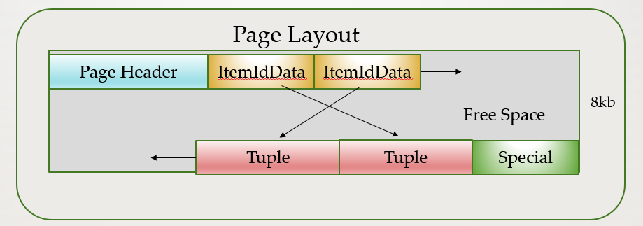
| Item | Description |
|---|---|
| PageHeaderData | 24 bytes long. General information about the page, including free-space pointers. |
| ItemIdData | Array of item identifiers (line pointers) pointing to the actual items. 4 bytes per item. |
| Free space | Unallocated space. New item pointers are allocated from the start of this area, new items from the end. |
| Items (tuples) | The actual rows themselves. |
| Special space | Access-method-specific data (used by indexes). Empty in ordinary tables. |
2. Installing PostgreSQL on Windows and Linux¶
System Requirements¶
Hardware (minimum for a lab system)
- 1 GHz processor
- 2 GB RAM
- 512 MB of free disk space for the software, plus space for your data
Software
- Administrator privileges on Windows
rootorsudoaccess on Linux
Installing PostgreSQL 17 on Windows¶
- Go to https://www.postgresql.org/download/ and choose Windows.
- Click Download the installer.
- Choose the latest PostgreSQL 17 release for Windows x86-64 (for example 17.11). Always install the newest minor release: it contains all security and bug fixes (see Chapter 16).
- Right-click the downloaded setup file and choose Run as administrator.
- Follow the wizard: choose the installation directory, data directory, superuser password, port (default 5432) and components.
- Wait for the installation to complete.
- Open SQL Shell (psql) from the Start menu, or connect from a command prompt:
psql -U <username> -d <database_name> -p <port_number>
Setting Up the Windows Environment¶
- Click Start, search for This PC, right-click it and choose Properties.
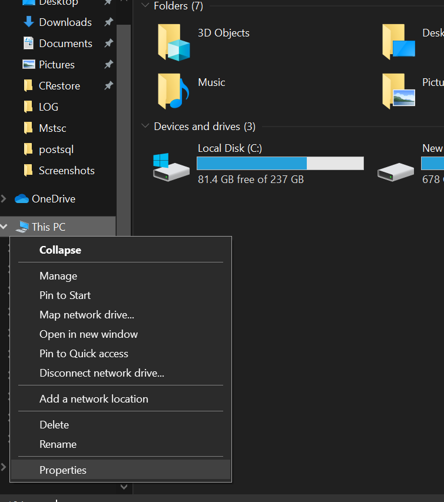
- Click Advanced system settings.
- In System Properties, click Environment Variables.
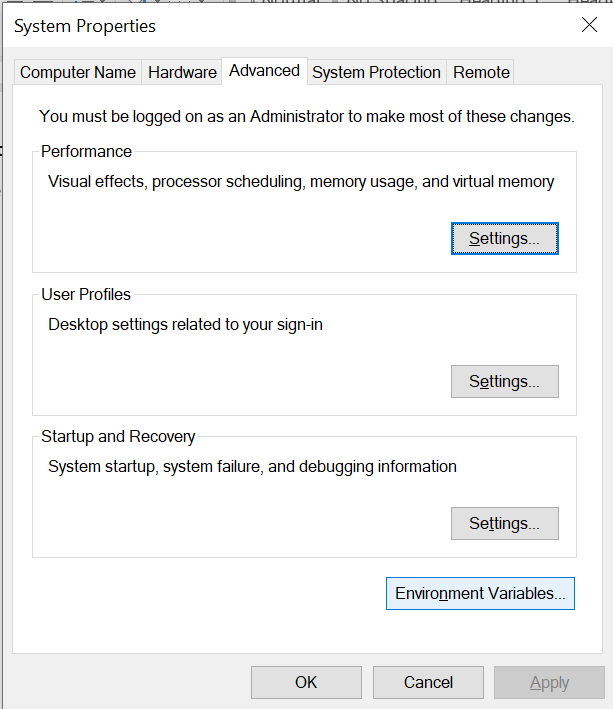
- Under System variables, select Path and click Edit.
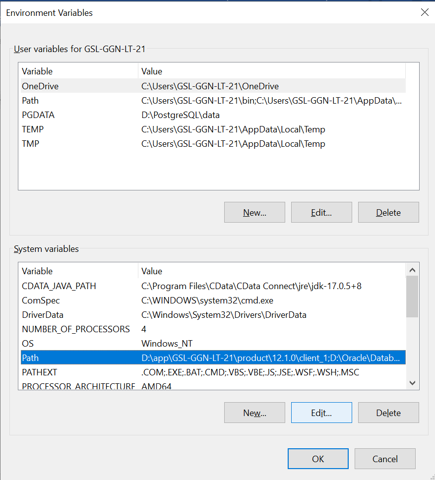
- Click New and add the PostgreSQL
binfolder, for exampleD:\PostgreSQL\17\bin. Click OK. - Back in Environment Variables, click New under System variables.
- Enter
PGDATAas the variable name and the data directory as the value, for exampleD:\PostgreSQL\17\data. - Click OK to save and close all windows. Open a new command prompt for the changes to apply.
Installing PostgreSQL on Linux (Default Directory)¶
These steps use the PostgreSQL (PGDG) YUM repository on Red Hat Enterprise Linux 8. For RHEL 9 (or Rocky/AlmaLinux 9), replace EL-8 with EL-9 in the repository URL; the module-disable step is not needed on RHEL 9.
- Go to https://www.postgresql.org/download/ and choose Linux → Red Hat/Rocky/AlmaLinux.
- In the PostgreSQL Yum Repository section, choose version 17, platform RHEL 8 and architecture x86_64. A setup script is generated.
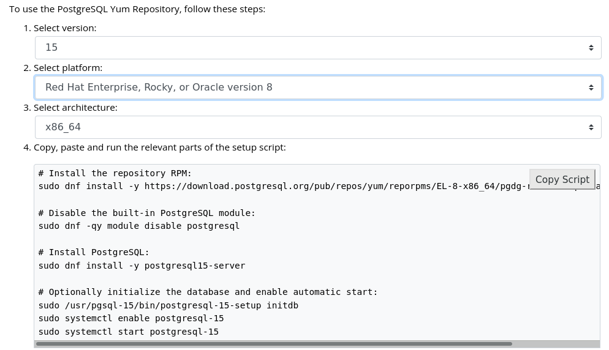
- Install the repository RPM:
sudo dnf install -y https://download.postgresql.org/pub/repos/yum/reporpms/EL-8-x86_64/pgdg-redhat-repo-latest.noarch.rpm
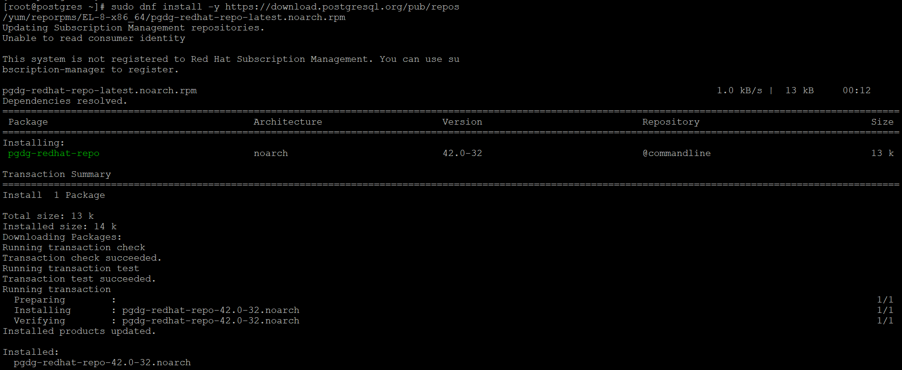
- Disable the built-in PostgreSQL module (RHEL 8 only) and install the server:
sudo dnf -qy module disable postgresql
sudo dnf install -y postgresql17-server
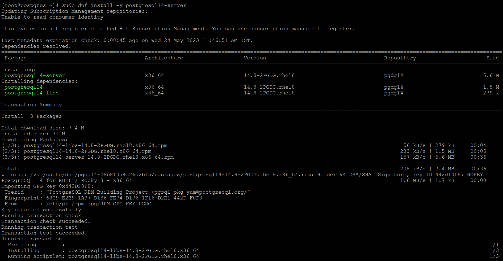
- Initialise the cluster, enable automatic start and start the service.
PGSETUP_INITDB_OPTIONSpasses extra options toinitdb; here it enables data checksums:
sudo PGSETUP_INITDB_OPTIONS="--data-checksums" /usr/pgsql-17/bin/postgresql-17-setup initdb
sudo systemctl enable postgresql-17
sudo systemctl start postgresql-17
sudo systemctl status postgresql-17
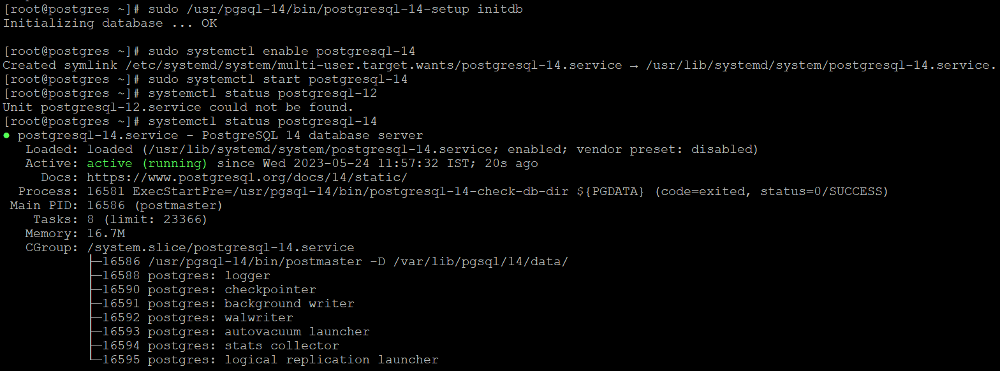
Note: these steps install the binaries in /usr/pgsql-17 and create the data directory at /var/lib/pgsql/17/data.
Setting Up the Linux Environment (Default Directory)¶
- The OS user
postgresis created automatically during installation. Set its password:
sudo passwd postgres
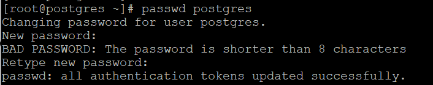
- Switch to the
postgresuser:
su - postgres
- Edit the
postgresuser’s profile:
vi ~/.bash_profile
- Add the following lines:
[ -f /etc/profile ] && source /etc/profile
PGDATA=/var/lib/pgsql/17/data
export PGDATA
# If you want to customize your settings, use the file below.
# It is not overridden by the RPMs.
[ -f /var/lib/pgsql/.pgsql_profile ] && source /var/lib/pgsql/.pgsql_profile
export PATH=/usr/pgsql-17/bin:$HOME/bin:$PATH
- Save the file and load it into the current session:
. ~/.bash_profile
Installing PostgreSQL on Linux (Non-Default Directory)¶
- Add the PGDG repository and install the server exactly as in steps 1–4 of the default installation.
- Create the new data directory, for example
/u01/pgsql/17/data, with the correct owner and permissions:
sudo mkdir -p /u01/pgsql/17/data
sudo chown -R postgres:postgres /u01/pgsql
sudo chmod 700 /u01/pgsql/17/data
- Point the service at the new directory. Use a systemd drop-in file rather than editing
/lib/systemd/system/postgresql-17.servicedirectly, because package updates overwrite that file:
sudo systemctl edit postgresql-17
Add these lines and save:
[Service]
# Location of database directory
Environment=PGDATA=/u01/pgsql/17/data/
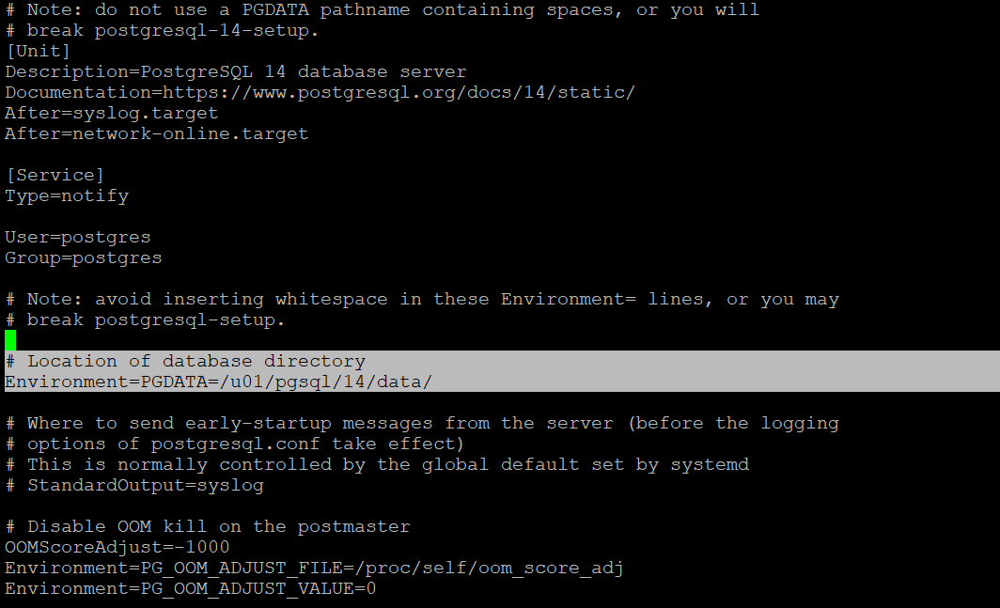
- Reload systemd:
sudo systemctl daemon-reload
- Initialise the cluster, enable automatic start and start the service:
sudo /usr/pgsql-17/bin/postgresql-17-setup initdb
sudo systemctl enable postgresql-17
sudo systemctl start postgresql-17
sudo systemctl status postgresql-17
Setting Up the Linux Environment (Non-Default Directory)¶
Follow the same steps as for the default directory (set the password, su - postgres, edit ~/.bash_profile).
The only difference is the PGDATA value:
[ -f /etc/profile ] && source /etc/profile
PGDATA=/u01/pgsql/17/data
export PGDATA
[ -f /var/lib/pgsql/.pgsql_profile ] && source /var/lib/pgsql/.pgsql_profile
export PATH=/usr/pgsql-17/bin:$HOME/bin:$PATH
Load the profile with . ~/.bash_profile.
3. PostgreSQL Architecture¶
Fundamentals of PostgreSQL Architecture¶
- PostgreSQL is a relational database management system with a client-server architecture.
- It uses a process-per-connection model: each client connection is served by its own server process.
- A set of processes and shared memory structures together form an instance.
- Client programs connect to the instance and request read and write operations.
- The default port is 5432.
Process and Memory Architecture¶
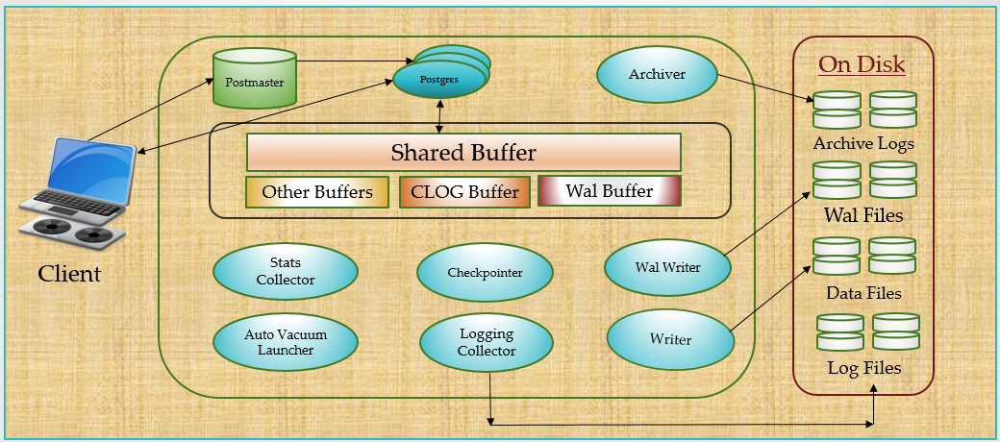
Postmaster (supervisor process)¶
- The postmaster is the first process started when PostgreSQL starts.
- It supervises the other processes and restarts them if they fail.
- It listens on the configured address and port for new connection requests.
- For every new connection it forks a new backend process (named
postgres). The backend authenticates the client usingpg_hba.confand then serves all of that client’s queries.
Background (utility) processes¶
| Process | Role |
|---|---|
| Background writer | Periodically writes dirty buffers from shared buffers to the data files, so backends rarely have to. |
| WAL writer | Flushes the WAL buffers to the WAL files on disk. |
| Checkpointer | Runs a checkpoint every checkpoint_timeout (default 5 minutes) or when max_wal_size is about to be exceeded, writing all dirty buffers to the data files. |
| Autovacuum launcher | Starts autovacuum worker processes that vacuum and analyse tables (if autovacuum = on, the default). |
| Startup process | Replays WAL during crash recovery, and continuously on a standby. |
| Logical replication launcher | Starts the apply workers for logical replication subscriptions. |
| WAL summarizer (PG 17) | When summarize_wal = on, records which blocks each WAL range changed (in pg_wal/summaries). Needed for incremental backups. |
| Slot sync worker (PG 17) | On a standby with sync_replication_slots = on, copies failover-enabled logical slots from the primary. |
| Logger (logging collector) | Writes server messages to the log files (if logging_collector = on). |
| Archiver (optional) | When archive_mode = on, copies completed WAL segments to the archive location. |
| WAL sender / WAL receiver | Used by replication: the sender runs on the primary, the receiver on the standby. |
No statistics collector process since PostgreSQL 15. Activity statistics (table and index access counts, dead rows and so on, shown in the pg_stat_* views and used by autovacuum) are kept in shared memory by each backend and written to pg_stat at shutdown. Planner statistics (data distribution used to choose query plans) are a separate thing: they are gathered by ANALYZE and stored in pg_statistic.
Memory Segments¶
| Area | Scope | Parameter | Used for |
|---|---|---|---|
| Shared buffers | Shared | shared_buffers |
Cache of table and index pages |
| WAL buffers | Shared | wal_buffers |
WAL records not yet written to disk |
| CLOG buffers | Shared | (automatic) | Commit status of transactions (pg_xact) |
| Work memory | Per operation | work_mem |
Sorts and hash tables (ORDER BY, DISTINCT, hash joins, hash aggregates) |
| Maintenance work memory | Per operation | maintenance_work_mem |
VACUUM, CREATE INDEX, ALTER TABLE ADD FOREIGN KEY |
| SLRU buffers (PG 17) | Shared | transaction_buffers, subtransaction_buffers, multixact_*_buffers, … |
Caches for commit status, subtransactions, multixacts and more; sizes are configurable from PG 17 |
| Temp buffers | Per session | temp_buffers |
Pages of temporary tables only |
Shared buffers¶
- Backends never read or write data files directly; all reads and changes go through the shared buffer area.
- A page changed in memory but not yet written to disk is called a dirty page.
- Dirty pages are written to the data files by the background writer and the checkpointer.
- Size is set by
shared_buffersinpostgresql.conf(restart required).
WAL buffers¶
- Also called transaction log buffers.
- WAL (write-ahead log) records describe every change to the data and are sufficient to reconstruct the data during recovery.
- WAL is written to a series of 16 MB files called WAL segments in
pg_wal. - WAL buffers are flushed to the WAL segments by the WAL writer and at every transaction commit.
- Size is set by
wal_buffers.
CLOG and other buffers¶
- CLOG (“commit log”, stored in
pg_xact) records the status of every transaction: in progress, committed or aborted. CLOG buffers cache these pages in memory. - Work memory (
work_mem) is used by a single sort or hash operation (hash operations may usework_mem × hash_mem_multiplier, default 2.0). A complex query can use several multiples of it at once. - Maintenance work memory (
maintenance_work_mem) is used by maintenance commands. - Temp buffers (
temp_buffers) cache the pages of temporary tables created by a session. Large sorts and hashes that exceedwork_memspill to temporary files, not to temp buffers.
Physical Files¶
- Data files: store table and index data.
- WAL files: every change is written here first, before the change is considered committed.
- Log files: server messages (stderr, csvlog or syslog output).
- Archived WAL files (optional): copies of WAL segments kept for point-in-time recovery and standby servers.
Parameters related to memory and WAL: shared_buffers, wal_buffers, work_mem, maintenance_work_mem, temp_buffers, max_wal_size.
4. Database Clusters¶
What Is a Database Cluster?¶
- A database cluster is a collection of databases managed by a single PostgreSQL instance (one postmaster, one port, one data directory).
initdbcreates a new cluster.- Creating a cluster means creating the data directory and the files inside it.
- The storage area must be initialised before the server can be started.
- Default data directory locations (not mandatory):
- Linux (PGDG packages):
/var/lib/pgsql/17/data - Windows:
C:\Program Files\PostgreSQL\17\data
initdb¶
initdbis the command-line utility that initialises a new cluster: it creates the directory structure, the system catalogs and thetemplate0,template1andpostgresdatabases.- Run it as the OS user that will own the server process (normally
postgres), never asroot. - It can be run directly, or through
pg_ctl initdb.
# Linux
initdb -D /var/lib/pgsql/17/data -U postgres -W -E UTF8 --data-checksums
pg_ctl initdb -D /var/lib/pgsql/17/data -o "-U postgres -W -E UTF8 --data-checksums"
:: Windows
initdb -D "D:\PostgreSQL\17\data" -U postgres -W -E UTF8 --data-checksums
pg_ctl initdb -D "D:\PostgreSQL\17\data" -o "-U postgres -W -E UTF8 --data-checksums"
| Option | Meaning |
|---|---|
-D |
Data directory location |
-U |
Name of the database superuser for the new cluster |
-W |
Prompt for the superuser’s password |
-E |
Default encoding (use UTF8) |
-k, --data-checksums |
Enable data page checksums to detect storage corruption. Recommended; off by default in PG 17 (on by default from PG 18). Also lets pg_rewind work without wal_log_hints. |
--locale-provider |
libc (default), icu, or builtin (new in PG 17, e.g. --locale-provider=builtin --builtin-locale=C.UTF-8 for fast, OS-independent sorting). |
Starting and Stopping a Cluster¶
# Linux (systemd service)
sudo systemctl start postgresql-17
sudo systemctl stop postgresql-17
# Linux (as the postgres user)
pg_ctl start -D /var/lib/pgsql/17/data
pg_ctl stop -D /var/lib/pgsql/17/data -m fast
:: Windows
pg_ctl start -D "C:\Program Files\PostgreSQL\17\data"
pg_ctl stop -D "C:\Program Files\PostgreSQL\17\data" -m smart
pg_ctl stop -D "C:\Program Files\PostgreSQL\17\data" -m fast
pg_ctl stop -D "C:\Program Files\PostgreSQL\17\data" -m immediate
If PGDATA is set, -D can be omitted.
Types of Shutdown¶
| Mode | Behaviour |
|---|---|
| smart | Refuses new connections and waits for all existing sessions to end, then shuts down. |
| fast (default) | Refuses new connections, rolls back open transactions, disconnects clients and shuts down cleanly. |
| immediate | Aborts all processes without a clean shutdown. Crash recovery runs at the next start. |
Reload vs Restart¶
- After changing server parameters, the configuration must be reloaded or the server restarted for the change to take effect.
- A reload re-reads the configuration files without stopping the server. Most parameters take effect this way.
- Some parameters (for example
shared_buffers,max_connections,listen_addresses,wal_level) only take effect after a restart. They are marked# (change requires restart)inpostgresql.conf, and havecontext = 'postmaster'inpg_settings. - A restart shuts down all activity, releases resources, closes all files and starts again with the new configuration.
# Reload
sudo systemctl reload postgresql-17 # Linux
pg_ctl reload -D "D:\PostgreSQL\17\data" # Windows (or Linux as postgres)
# Restart
sudo systemctl restart postgresql-17 # Linux
pg_ctl restart -D "D:\PostgreSQL\17\data" # Windows (or Linux as postgres)
From psql (any platform), a reload can also be triggered with:
SELECT pg_reload_conf();
pg_controldata¶
pg_controldata displays control information about a cluster: version, cluster state, latest checkpoint location, WAL settings and more. It works even when the server is stopped.
/usr/pgsql-17/bin/pg_controldata -D /var/lib/pgsql/17/data # Linux
pg_controldata -D "D:\PostgreSQL\17\data" # Windows
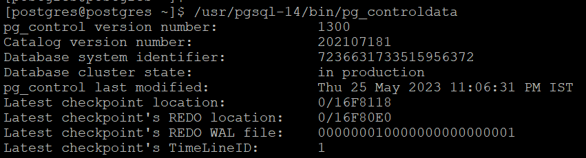
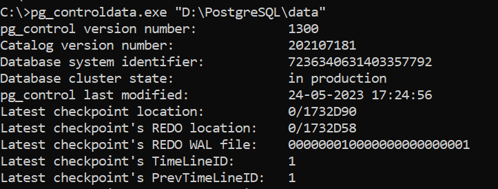
5. Directory Layout¶
Installation Directory Layout¶
- Linux (PGDG packages): binaries in
/usr/pgsql-17, data in/var/lib/pgsql/17/data. Source builds default to/usr/local/pgsql. - Windows:
C:\Program Files\PostgreSQL\<version>by default.
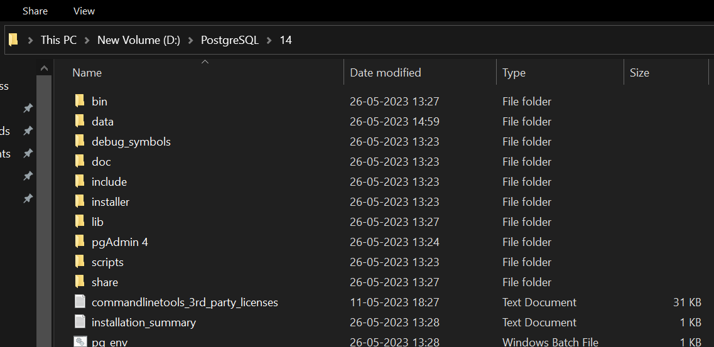
| Folder | Contents |
|---|---|
| bin | Programs (psql, initdb, pg_ctl, createdb, createuser, pg_dump and others) |
| data | Data directory (Windows default) |
| doc | Documentation |
| include | C header files |
| installer | Installer files |
| scripts | Helper scripts such as runpsql and server-control scripts |
| share | Sample configuration files, time zone data, extension files |
| pgAdmin 4 | pgAdmin files |
Data Directory Layout¶
| Item | Description |
|---|---|
base |
One subdirectory per database, named after the database OID |
global |
Cluster-wide tables such as pg_database, pg_authid and pg_tablespace |
pg_commit_ts |
Transaction commit timestamps (when track_commit_timestamp = on) |
pg_dynshmem |
Files used by the dynamic shared memory subsystem |
pg_logical |
Status data for logical decoding |
pg_multixact |
Multitransaction status data (used for shared row locks) |
pg_notify |
LISTEN/NOTIFY status data |
pg_replslot |
Replication slot data |
pg_serial |
Information about committed serializable transactions |
pg_snapshots |
Exported snapshots |
pg_stat |
Activity statistics saved at clean shutdown and reloaded at startup |
pg_stat_tmp |
Temporary files for extensions such as pg_stat_statements (no longer used by the server itself since PG 15) |
pg_subtrans |
Subtransaction status data |
pg_tblspc |
Symbolic links to tablespaces |
pg_twophase |
State files for prepared transactions |
pg_wal |
WAL (write-ahead log) files. pg_wal/summaries holds WAL summaries for incremental backup (PG 17). |
pg_xact |
Transaction commit status data (CLOG) |
log |
Server log files (default log_directory) |
current_logfiles |
Records the log file(s) currently being written by the logging collector |
postgresql.conf |
Main configuration file |
postgresql.auto.conf |
Parameters set with ALTER SYSTEM |
pg_hba.conf |
Client authentication rules |
pg_ident.conf |
User name maps (OS user → database user) |
postmaster.opts |
Command-line options the server was last started with |
postmaster.pid |
Lock file with the postmaster PID, data directory, start time, port, socket directory, listen address and shared memory ID. Not present after shutdown. |
PG_VERSION |
Major version number of PostgreSQL |
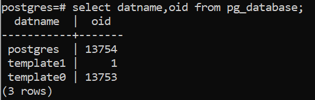
The base Directory¶
- Each database is a subdirectory named after its object identifier (OID).
template1always has OID 1. Since PostgreSQL 15,template0always has OID 4 andpostgreshas OID 5.- To find database OIDs:
SELECT oid, datname FROM pg_database;
6. Configuration Files¶
postgresql.conf¶
postgresql.confholds the parameters that configure the server and control its performance.initdbcreates a default copy in the data directory.- The file has one
name = valueparameter per line; lines starting with#are comments. - Parameters that need a restart are marked
# (change requires restart).
Catalog Views for Viewing Settings¶
pg_settingsshows the current run-time value of every parameter. It is an alternative to theSHOWcommand, with extra columns such asunit,context(when a change takes effect) andsource.pg_file_settingssummarises the contents of the configuration files. It is useful to check whether planned changes in the files are valid before reloading. Eachname = valueentry has anappliedcolumn and, if it cannot be applied, anerrorcolumn.- In short:
pg_settingsshows what the server is using now;pg_file_settingsshows what is written in the files.
SELECT name, setting, unit, context FROM pg_settings;
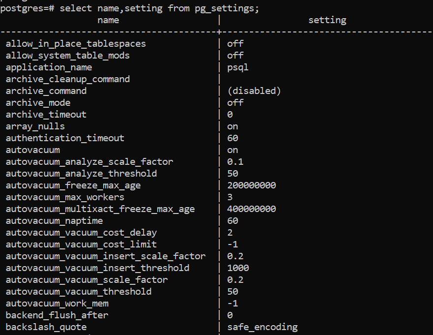
To check a single parameter, for example archive_mode, use either method:
SELECT name, setting FROM pg_settings WHERE name = 'archive_mode';
SHOW archive_mode;
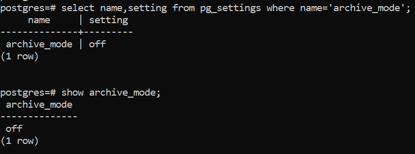
Changing a Parameter in postgresql.conf¶
- Check the current value.
- Back up the file before editing it.
- Remove the leading
#from the parameter if it is commented out. - Check whether the parameter needs a restart.
- Set the new value.
- Reload or restart PostgreSQL as required.
- Verify the value with
SHOWorpg_settings.
Example: change shared_buffers from 200 MB to 250 MB and work_mem from 10 MB to 20 MB.
Step 1. Check the current values.
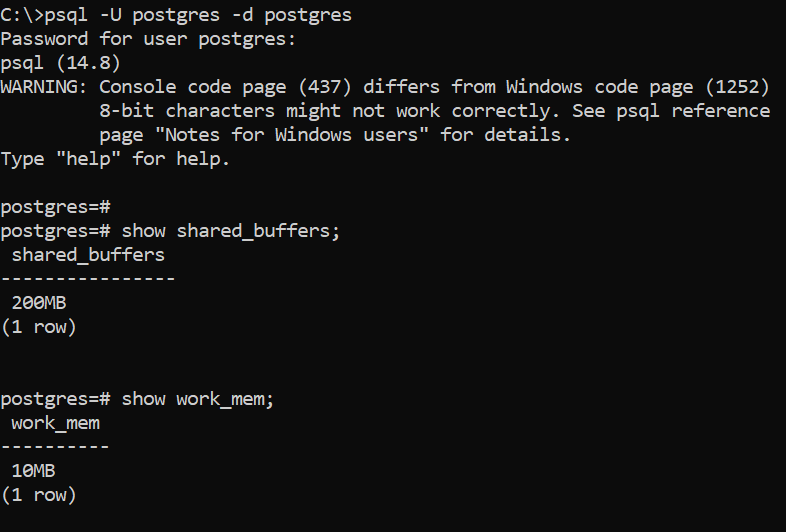
Step 2. Open <data directory>\postgresql.conf and edit both parameters.
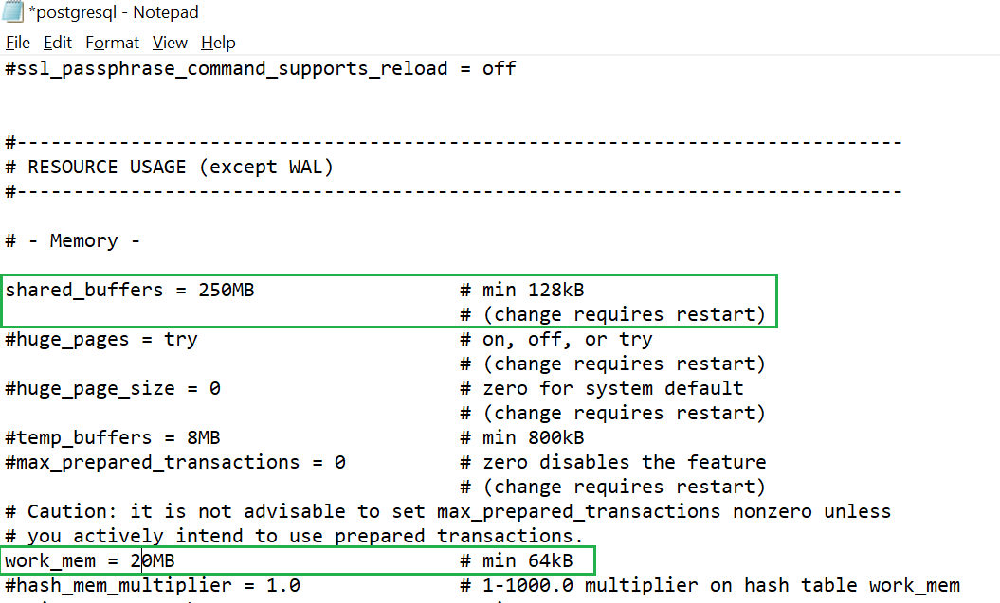
Note: the file shows that shared_buffers requires a restart, while work_mem does not.
Step 3. Save the file and reload the configuration from psql:
SELECT pg_reload_conf();
The function returns true if the reload signal was sent. Parameters that do not need a restart (here work_mem) take effect immediately for new and existing sessions.
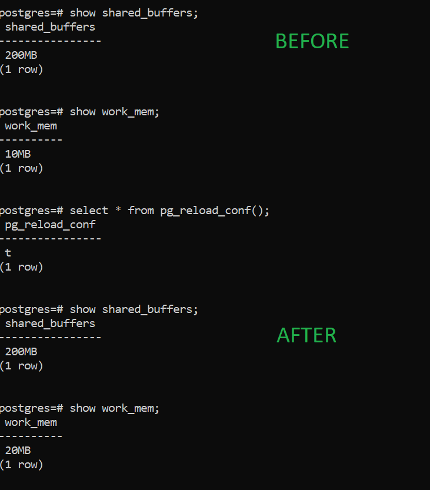
Step 4. shared_buffers still shows the old value because it requires a restart. Restart the server:
pg_ctl restart -D "D:\PostgreSQL\17\data"
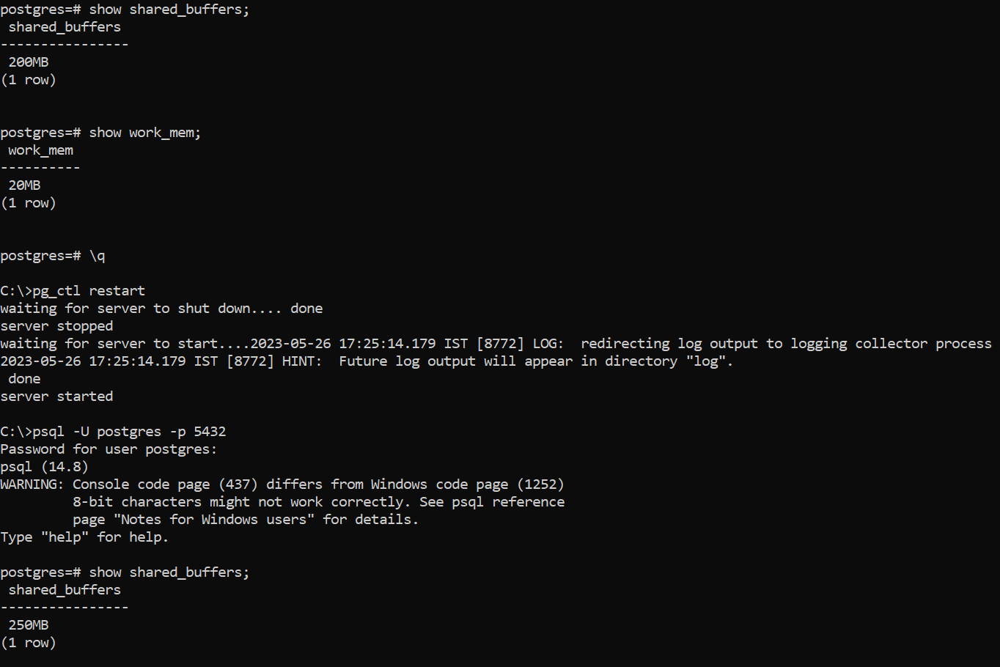
postgresql.auto.conf¶
- This file holds settings made with the
ALTER SYSTEMcommand. Do not edit it by hand. - Values in
postgresql.auto.confoverride the same parameters inpostgresql.conf. ALTER SYSTEMprovides a SQL interface for changing server-wide defaults.
ALTER SYSTEM SET configuration_parameter = 'value';
ALTER SYSTEM RESET configuration_parameter;
ALTER SYSTEM RESET ALL;
Example: change shared_buffers and work_mem with ALTER SYSTEM.
Step 1. Set the parameters:
ALTER SYSTEM SET shared_buffers = '250MB';
ALTER SYSTEM SET work_mem = '20MB';
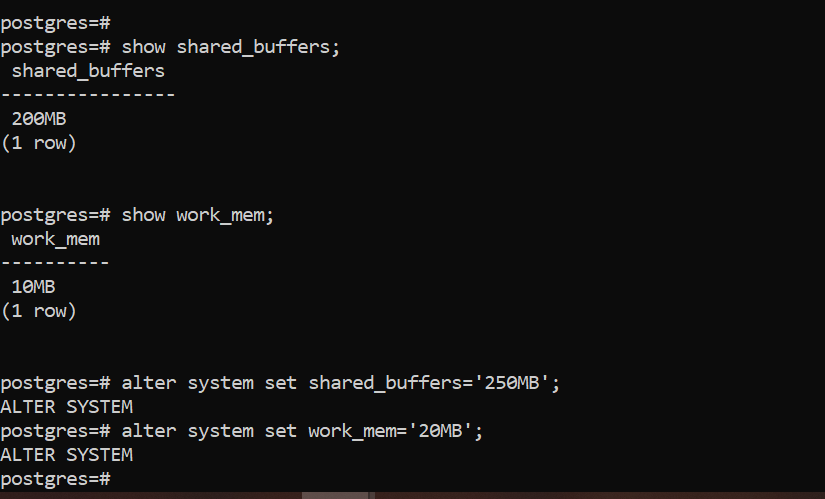
Step 2. Reload the configuration:
SELECT pg_reload_conf();
Step 3. Open postgresql.conf. It is unchanged, because ALTER SYSTEM writes only to postgresql.auto.conf.
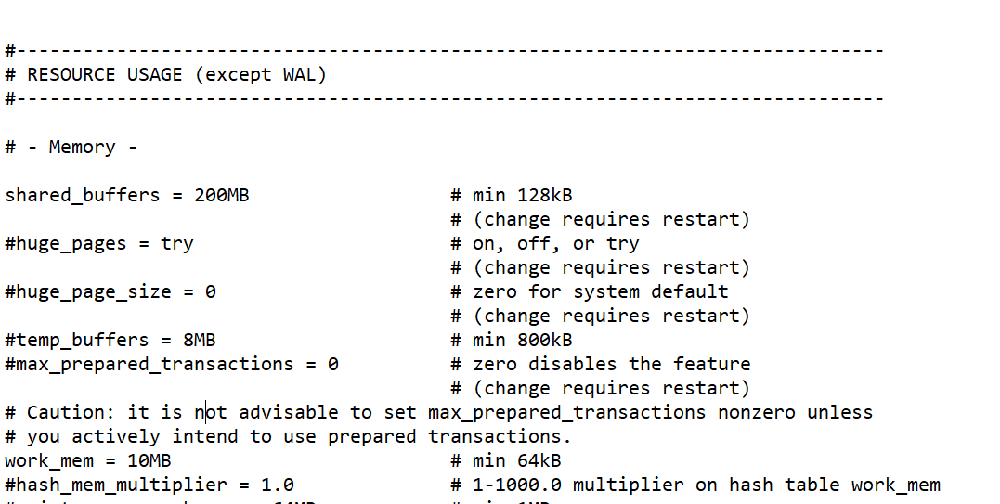
Step 4. Query pg_file_settings to see whether the planned changes will work:
SELECT sourcefile, name, setting, applied, error FROM pg_file_settings;
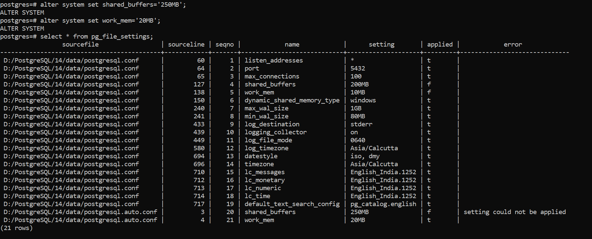
The last two rows show shared_buffers and work_mem from postgresql.auto.conf. The applied column shows whether the value is in effect. shared_buffers shows setting could not be applied because it still needs a restart.
Step 5. To roll back one or all ALTER SYSTEM changes:
ALTER SYSTEM RESET shared_buffers;
ALTER SYSTEM RESET ALL;
Then reload (or restart, for restart-only parameters).
Note: when the same parameter appears in both files, PostgreSQL uses the value from postgresql.auto.conf, because that file is read last.
PostgreSQL 17 – allow_alter_system: if configuration is managed by an external tool (Ansible, Patroni, a cloud control plane), set allow_alter_system = off in postgresql.conf so that ALTER SYSTEM is refused. This is a guard against accidental changes, not a security boundary: superusers can still change files in other ways.
pg_ident.conf¶
pg_ident.conf maps external (operating system or certificate) user names to PostgreSQL user names.
- The OS user that starts a connection is not necessarily the same as the database user.
- A map is used together with an authentication method in
pg_hba.conf(for examplepeer,ident,certorgss) by addingmap=<mapname>to thepg_hba.confline. - The file is read at startup and on every reload (
pg_ctl reloadorSELECT pg_reload_conf();). - From PostgreSQL 16, check the loaded mappings and any errors with
SELECT * FROM pg_ident_file_mappings;.
Sample
# MAPNAME SYSTEM-USERNAME PG-USERNAME
sales admin sales
sales sagar sales
test sagar postgres
- MAPNAME is any name; it is referenced from
pg_hba.conf. - SYSTEM-USERNAME is the user name detected for the client.
- PG-USERNAME is the PostgreSQL user the client may connect as.
- With map
sales, OS usersadminandsagarmay connect as database usersales. With maptest, OS usersagarmay connect aspostgres.
pg_hba.conf¶
- Controls client authentication (HBA = host-based authentication).
- When a connection request arrives, PostgreSQL reads the lines from top to bottom and uses the first line that matches the connection type, database, user and client address.
- If no line matches, the connection is rejected.
- The file controls which hosts may connect, how clients authenticate, which database users they may use and which databases they may access.
- Changes need only a reload, not a restart.
- From PostgreSQL 16, database and user columns accept regular expressions (prefixed with
/), and the file can pull in other files withinclude,include_if_existsandinclude_dir.
Sample
# TYPE DATABASE USER ADDRESS METHOD
local all all peer
host all all 127.0.0.1/32 scram-sha-256
host all all ::1/128 scram-sha-256
hostssl sales sales 192.168.4.0/24 scram-sha-256
host all all 10.10.0.15/32 reject
host replication repuser 192.168.4.153/32 scram-sha-256
Column 1 – Connection type¶
| Type | Meaning |
|---|---|
local |
Connections through a Unix-domain socket on the same machine. No address column. (Not used on Windows.) |
host |
TCP/IP connections, with or without SSL. The server must listen on the address (listen_addresses). |
hostssl |
TCP/IP connections that use SSL only. |
hostnossl |
TCP/IP connections that do not use SSL. |
hostgssenc |
TCP/IP connections that use GSSAPI encryption. |
hostnogssenc |
TCP/IP connections that do not use GSSAPI encryption. |
Column 2 – Database¶
all– matches all databases.sameuser– the database name must equal the user name.samerole– the user must be a member of a role with the same name as the database.replication– matches physical replication connections (logical replication connections match the database name instead).- A database name, or a comma-separated list of names.
Column 3 – User¶
- The database user name (not the OS user).
all, a user name, a group (role) name prefixed with+, or a comma-separated list.
Note: database and user names that contain spaces, commas, quotes or other special characters must be quoted. Quoting a keyword such as "all", "sameuser" or "replication" makes it match a database or user with that literal name.
Column 4 – Address¶
- A host name, or an IP address with a CIDR mask, for example
192.168.4.10/32(one host) or192.168.4.0/24(a whole subnet). - Alternatively, an IP address and a netmask in two columns; for a single host the netmask is
255.255.255.255. locallines have no address column.
Column 5 – Authentication method¶
| Method | Description |
|---|---|
trust |
Allows the connection without a password. Use only on fully trusted machines. |
reject |
Always rejects the connection. Useful to block specific hosts or users ahead of broader rules. |
scram-sha-256 |
Challenge-response password authentication. Recommended, and the default password_encryption since PostgreSQL 14. |
md5 |
Older hashed-password method. Still works in PG 17, but is weaker than SCRAM (a timing side-channel was fixed in 17.10, CVE-2026-6478) and is deprecated from PG 18. Migrate users to SCRAM (see note below). |
password |
Sends the password in clear text. Avoid unless the connection is SSL-encrypted. |
peer |
local only: uses the OS user name of the client process. |
ident |
Uses an ident server on the client host to get the OS user name (TCP/IP only). |
gss, sspi |
Kerberos (GSSAPI) and Windows single sign-on. |
ldap, radius, pam, cert, bsd |
External authentication services and client certificates. |
ident, peer, cert and gss can use a user name map from pg_ident.conf via the map= option.
Moving users from MD5 to SCRAM: make sure password_encryption = 'scram-sha-256' (the default), have each user set their password again (\password username in psql), then change md5 to scram-sha-256 in pg_hba.conf and reload. Find users still on MD5 with:
SELECT rolname FROM pg_authid WHERE rolpassword LIKE 'md5%';
Steps to Allow a Remote Client¶
- Back up
pg_hba.confandpostgresql.conf. - In
postgresql.conf, setlisten_addresses = '*'(or a specific server IP). This change requires a restart. - In
pg_hba.conf, add a line for the client, for examplehost all all 192.168.4.25/32 scram-sha-256. - Restart PostgreSQL if
listen_addresseschanged; otherwise a reload is enough. - Check the file for errors:
SELECT rule_number, file_name, line_number, type, database, user_name,
address, auth_method, error
FROM pg_hba_file_rules;
- Connect from the client:
psql -h <server_host> -U postgres -d postgres
Depending on the authentication method, the client may or may not be prompted for a password.
7. Databases, Users, Schemas and Privileges¶
Creating a Database¶
- A database is an organised collection of structured data.
- The PostgreSQL
binfolder contains command-line utilities that can run database tasks without opening psql, for examplecreatedb,dropdb,createuseranddropuser. - The same tasks can be done with SQL from psql.
From psql:
CREATE DATABASE samson OWNER postgres;
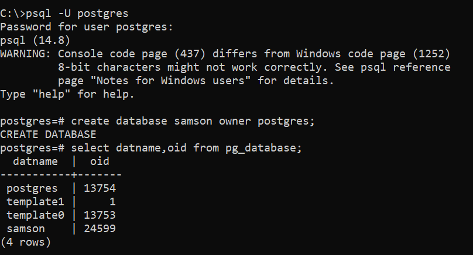
From the command line:
createdb -O postgres -U postgres samson
createdb --help
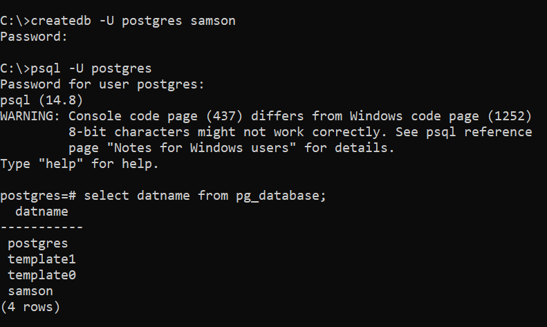
\lor\l+in psql lists all databases.- The
pg_databasecatalog also holds database information.
Dropping a Database¶
- You cannot drop the database you are connected to.
- Only a superuser or the database owner can drop a database.
scott=# DROP DATABASE nano;
ERROR: cannot drop the currently open database
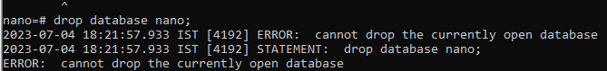
From psql (connected to a different database):
DROP DATABASE nano;
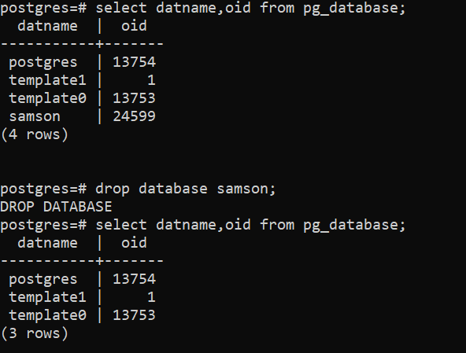
From the command line:
dropdb nano
dropdb --help
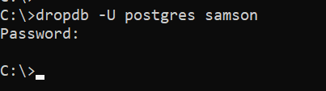
Creating Users¶
- Database users (roles) are completely separate from operating system users.
- User names must be unique; names starting with
pg_are reserved. - The
postgressuperuser is created during installation and has all privileges. - Only a superuser or a role with the
CREATEROLEattribute can create users. Since PostgreSQL 16, aCREATEROLEuser can only manage roles it hasADMIN OPTIONon (by default, the roles it created itself), and cannot grant attributes it does not have. - Roles are global to the cluster: one role can connect to any database in the instance, subject to
pg_hba.confand theCONNECTprivilege. CREATE USERis the same asCREATE ROLEwith theLOGINattribute.
From psql (creates superuser scott):
CREATE USER scott WITH LOGIN SUPERUSER PASSWORD 'scott';
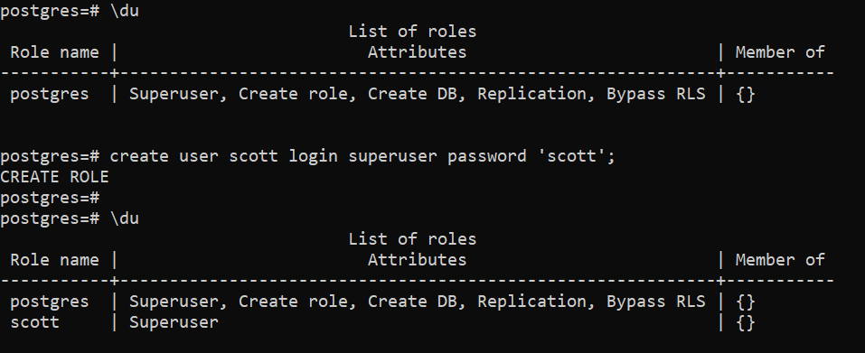
From the command line:
createuser -U postgres -P -S scott
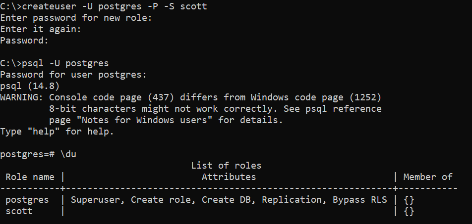
| Option | Meaning |
|---|---|
-U |
User name to connect as (not the user being created) |
-P |
Prompt for a password for the new role |
-S |
The new role is not a superuser (default) |
scott |
The role to create |
Interactive mode:
$ createuser --interactive joe
Shall the new role be a superuser? (y/n) n
Shall the new role be allowed to create databases? (y/n) y
Shall the new role be allowed to create more new roles? (y/n) y
Use createuser --help for all options.
Dropping Users¶
DROP USER username; -- from psql
dropuser username # from the command line
A user that owns objects or holds privileges cannot be dropped:
postgres=# DROP USER test1;
ERROR: role "test1" cannot be dropped because some objects depend on it
Transfer ownership and remove the privileges first. Run the first two commands in every database where the user owns objects:
REASSIGN OWNED BY test1 TO postgres;
DROP OWNED BY test1; -- removes remaining privileges
DROP ROLE test1;
Schemas and Their Benefits¶
- A schema is a namespace that contains named objects: tables, views, data types, functions and operators.
- One database can contain many schemas.
- Schemas separate the data of different applications and organise objects into logical groups.
- Objects in different schemas can have the same name without colliding.
- Many users can share one database without interfering with each other.
- Schemas belong to a database, not to the cluster, so the same schema name can exist in different databases.
Creating and Dropping Schemas¶
CREATE SCHEMA schema_name; -- owned by the current user
CREATE SCHEMA schema_name AUTHORIZATION username; -- owned by username
The owner has all privileges on the schema and can create objects in it.
DROP SCHEMA schema_name; -- fails if the schema contains objects
DROP SCHEMA schema_name CASCADE; -- also drops all objects in the schema
Schema Search Path¶
search_pathsets the order in which schemas are searched when a query names an object without a schema.- PostgreSQL uses the first matching object it finds.
- The default is
"$user", public: first a schema with the same name as the current user (if it exists), thenpublic. search_pathcan be set at session, role, database or cluster level.
SHOW search_path;
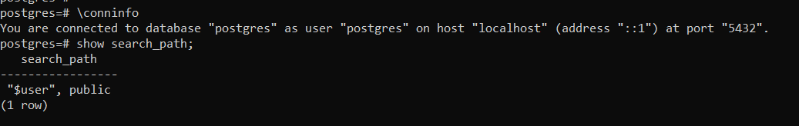
-- Session level
SET search_path TO test1, public;
-- Role level
ALTER ROLE app_user SET search_path TO main, ginview, public;
-- Database level
ALTER DATABASE appdb SET search_path TO main, ginssot, ginview, ginarchive, gateway, public;
The public Schema¶
publicis created automatically in every new database.- Objects created without a schema name go into the first schema in
search_paththat exists, normallypublic. - Since PostgreSQL 15 (so in PostgreSQL 17), ordinary users cannot create objects in
publicby default. Only the database owner can, becausepublicis owned by the predefined rolepg_database_owner. Everyone still hasUSAGEon it. - Databases upgraded with
pg_upgradefrom PostgreSQL 14 or older keep their old, open permissions. Lock them down manually:
REVOKE CREATE ON SCHEMA public FROM PUBLIC;
ALTER SCHEMA public OWNER TO pg_database_owner;
- To let an application user create tables in
publicagain, grant it explicitly:GRANT CREATE ON SCHEMA public TO app_user;(or, better, give the application its own schema).
CREATE TABLE employee (id int); -- created in public
CREATE TABLE nano.employee (id int); -- created in schema nano
Privileges¶
- A privilege is the right to run a particular kind of SQL statement or to access another user’s object.
- PostgreSQL has two kinds:
- Role attributes (cluster level):
SUPERUSER,CREATEDB,CREATEROLE,LOGIN,REPLICATION,BYPASSRLS. They are set by a superuser (or aCREATEROLErole) withCREATE ROLEorALTER ROLE. - Object privileges:
SELECT,INSERT,UPDATE,DELETE,TRUNCATE,REFERENCES,TRIGGER,CREATE,CONNECT,TEMPORARY,EXECUTE,USAGE,SETandALTER SYSTEMon parameters (PG 15), andMAINTAINon tables (PG 17: allows VACUUM, ANALYZE, CLUSTER, REINDEX, REFRESH MATERIALIZED VIEW and LOCK TABLE). - Predefined roles grant ready-made capabilities, for example
pg_read_all_data,pg_monitor,pg_maintain(PG 17). See Chapter 17. They are granted by the object owner, a superuser, or a role holding the privilegeWITH GRANT OPTION.
Granting and Revoking¶
Object-level grants
-- Allow use of a schema
GRANT USAGE ON SCHEMA schema_name TO username;
-- DML on all existing tables in a schema
GRANT SELECT, INSERT, UPDATE, DELETE ON ALL TABLES IN SCHEMA schema_name TO username;
-- All privileges on all existing tables and sequences
GRANT ALL PRIVILEGES ON ALL TABLES IN SCHEMA schema_name TO username;
GRANT ALL PRIVILEGES ON ALL SEQUENCES IN SCHEMA schema_name TO username;
-- Column-level access
GRANT SELECT (col1), UPDATE (col1) ON mytable TO username;
-- Connect to a database
GRANT CONNECT ON DATABASE database_name TO username;
-- PG 17: allow a maintenance user to VACUUM/ANALYZE/REINDEX a table without owning it
GRANT MAINTAIN ON TABLE big_table TO dba_ops;
-- ...or on every table in the cluster
GRANT pg_maintain TO dba_ops;
Important: ON ALL TABLES IN SCHEMA only affects tables that exist now. For tables created later, set default privileges (they apply to objects created by the role running the command, or the role named in FOR ROLE):
ALTER DEFAULT PRIVILEGES IN SCHEMA schema_name
GRANT SELECT, INSERT, UPDATE, DELETE ON TABLES TO username;
Role attributes
ALTER USER username CREATEDB; -- allow creating databases
ALTER USER username WITH SUPERUSER; -- make superuser
ALTER USER username WITH NOSUPERUSER; -- remove superuser
Revoking
REVOKE DELETE, UPDATE ON products FROM username; -- specific privileges
REVOKE ALL ON products FROM username; -- all privileges
REVOKE SELECT ON products FROM PUBLIC; -- from all users
8. psql Commands¶
Connecting with psql¶
psql is the terminal-based front end to PostgreSQL. It lets you run queries interactively and see the results.
# Specific database and user (-W forces a password prompt)
psql -d database -U user -W
# Database on another host
psql -h host -p 5432 -d database -U user -W
# Require an SSL-encrypted connection
psql "host=host dbname=db user=user sslmode=require"
sslmode controls whether SSL is used (disable, prefer, require, verify-ca, verify-full). It is not an authentication method.
Useful First Queries¶
SELECT version();
SELECT current_database();
SELECT current_user;
SELECT current_date;
SHOW data_directory;
SHOW port;
SELECT oid, datname, dattablespace FROM pg_database;
SELECT usename FROM pg_user;
SELECT datname AS database_name,
pg_database_size(datname)/1024/1024 AS size_in_mb
FROM pg_database
ORDER BY size_in_mb;
SELECT name, setting FROM pg_settings WHERE name LIKE '%autovacuum%';
psql Meta-Commands¶
| Command | Purpose |
|---|---|
\c dbname [user] |
Connect to another database (optionally as another user) |
\conninfo |
Show current connection information |
\l / \l+ |
List databases |
\dn / \dn+ |
List schemas |
\dt / \dt+ |
List tables |
\d table_name |
Describe a table |
\dv |
List views |
\ds |
List sequences |
\df |
List functions |
\di |
List indexes |
\du |
List roles and their attributes |
\drg |
List role memberships (grants of roles to roles) – PG 16 |
\dconfig [pattern] |
List server parameters, e.g. \dconfig *wal* – PG 15 |
\dP |
List partitioned tables and indexes |
\watch [seconds] |
Re-run the current query every N seconds (stop with Ctrl+C) |
\bind v1 v2 … |
Run the next query with bind parameters, e.g. SELECT $1 \bind 42 \g – PG 16 |
\db |
List tablespaces |
\dx |
List installed extensions |
\x |
Toggle expanded (vertical) output |
\a |
Toggle between aligned and unaligned output |
\H |
Toggle HTML output format |
\timing |
Turn display of query execution time on or off |
\g |
Execute the current query buffer (or repeat the last query) |
\s [file] |
Show command history, or save it to a file |
\e |
Edit the query buffer in an external editor |
\ef func |
Edit a function definition in an editor |
\i file.sql |
Execute commands from a file |
\o [file] |
Send query output to a file; \o alone switches back to the screen |
\w file |
Write the current query buffer to a file |
\! command |
Run an OS command, e.g. \! cls (Windows), \! clear or \! df -h (Linux) |
\? |
Help on psql meta-commands |
\h [SQL command] |
Help on SQL syntax |
\q |
Quit psql |
To reload the server configuration from psql, use the SQL function SELECT pg_reload_conf();.
psql File Operations¶
Run SQL statements from a file:
psql -d test1 -U test1 -f test1.sql # from the OS command line
test1=> \i test1.sql -- from inside psql
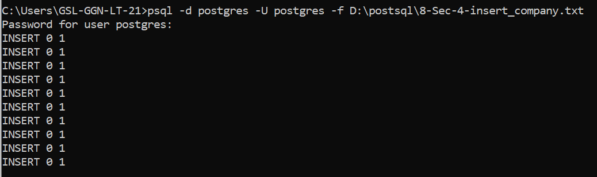
Send query output to a file:
postgres=# \o output.txt
postgres=# SELECT * FROM your_table;
postgres=# \o
\o without a file name switches output back to the screen.
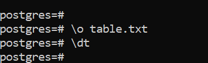
Autocommit¶
- By default, psql runs every statement in its own transaction and commits it automatically.
- Turn autocommit off for the current session (the variable name must be in capitals):
postgres=# \set AUTOCOMMIT off
- With autocommit off, changes must be ended with
COMMIT;or undone withROLLBACK;. - The setting applies only to the current session; new sessions start with autocommit on.
- Alternatively, wrap statements in an explicit
BEGIN; … COMMIT;block.
9. System Catalogs and Time Zones¶
Common System Catalogs and Views¶
| Name | Description |
|---|---|
pg_database |
Databases in the cluster |
pg_stat_database |
Activity statistics per database |
pg_stat_activity |
One row per server process: current query, state, wait events |
pg_stat_io |
I/O statistics by backend type, object and context (PG 16) |
pg_stat_checkpointer |
Checkpoint counts and timings (PG 17; previously in pg_stat_bgwriter) |
pg_stat_wal |
WAL generation statistics (PG 14) |
pg_wait_events |
Description of every wait event, to join with pg_stat_activity (PG 17) |
pg_tablespace |
Tablespaces |
pg_roles / pg_user |
Roles and users (safe to query) |
pg_shadow |
Users including password hashes (superuser only) |
pg_available_extensions |
Extensions available for installation |
pg_operator |
Operators |
pg_stats |
Planner statistics (readable view of pg_statistic) |
pg_locks |
Locks currently held or awaited |
pg_tables |
Tables in the current database |
pg_indexes |
Indexes in the current database |
pg_views |
Views in the current database |
pg_settings |
Server parameters |
pg_timezone_names |
Time zone names |
pg_user_mappings |
User mappings for foreign servers (foreign data wrappers) |
Useful Catalog Queries¶
SELECT * FROM pg_database; -- databases
SELECT * FROM pg_stat_database; -- database statistics
SELECT * FROM pg_stat_activity; -- sessions and running queries
SELECT * FROM pg_tablespace; -- tablespaces
SELECT * FROM pg_available_extensions; -- available extensions
SELECT * FROM pg_roles; -- roles
SELECT * FROM pg_stats; -- planner statistics
SELECT * FROM pg_timezone_names; -- time zones
SELECT * FROM pg_locks; -- locks
SELECT * FROM pg_tables; -- tables
SELECT * FROM pg_indexes; -- indexes
SELECT * FROM pg_views; -- views
SELECT * FROM pg_settings WHERE name = 'max_connections';
SELECT current_schema(); -- current schema
SELECT current_user; -- current user
SELECT current_database(); -- current database
SELECT current_setting('max_connections'); -- current value of a parameter
SELECT pg_backend_pid(); -- PID of this session's backend
SELECT pg_postmaster_start_time(); -- server start time
SELECT version(); -- PostgreSQL version
SELECT pg_is_in_recovery(); -- true on a standby
SELECT * FROM pg_stat_checkpointer; -- checkpoint statistics (PG 17)
-- What are sessions waiting for? (PG 17 adds descriptions)
SELECT a.pid, a.wait_event_type, a.wait_event, w.description
FROM pg_stat_activity a
JOIN pg_wait_events w ON w.type = a.wait_event_type AND w.name = a.wait_event;
Date, Time and Time Zones¶
-- Current date and time with time zone
SELECT now() AS current;
-- Current date and time without time zone
SELECT now()::timestamp;
-- One hour from now
SELECT now() + interval '1 hour' AS an_hour_later;
-- Same time tomorrow
SELECT now() + interval '1 day' AS this_time_tomorrow;
-- Two and a half hours ago
SELECT now() - interval '2 hours 30 minutes' AS two_hours_30_min_ago;
Working with time zones:
SHOW timezone; -- session time zone
SET timezone = 'Asia/Kolkata'; -- change for this session
SELECT now() AT TIME ZONE 'UTC'; -- convert to another zone
SELECT name, utc_offset FROM pg_timezone_names WHERE name LIKE 'Asia/K%';
The server default is set with the timezone parameter in postgresql.conf. It can also be set per database or role with ALTER DATABASE … SET timezone or ALTER ROLE … SET timezone.
10. CRUD Operations and Database Objects¶
What Is CRUD?¶
CRUD stands for the four basic data operations:
- Create – add new rows.
- Read – retrieve, search or view rows.
- Update – change existing rows.
- Delete – remove rows.
Create¶
CREATE creates database objects; INSERT adds rows.
CREATE TABLE table_name (
column1 datatype [NULL | NOT NULL],
column2 datatype [NULL | NOT NULL],
CONSTRAINT constraint_name UNIQUE (column1, column2)
);
INSERT INTO table_name (column1, column2) VALUES (value1, value2);
Data Types¶
- Character:
char(n),varchar(n),text - Numeric:
smallint,integer,bigint,numeric(p,s),real,double precision - Boolean:
boolean - Date/time:
date,time,timestamp,timestamptz,interval - Arrays of any type, e.g.
integer[],text[] - JSON:
jsonandjsonb(binary, indexable). PostgreSQL 16–17 add the SQL-standard JSON functions (IS JSON,JSON_OBJECT,JSON_EXISTS,JSON_VALUE,JSON_QUERYandJSON_TABLE); see Chapter 16. - Special types:
uuid, network addresses (inet,cidr), geometric types and more
Constraints¶
- Constraints are rules on table columns that prevent invalid data from being entered.
- They ensure the accuracy and reliability of the data.
- Constraints can be defined at column level (one column) or table level (one or more columns).
- They can be created with
CREATE TABLEor added later withALTER TABLE.
| Constraint | Description |
|---|---|
NOT NULL |
The column cannot contain NULL. |
UNIQUE |
All values in the column (or column group) are different. |
PRIMARY KEY |
Uniquely identifies each row; implies UNIQUE and NOT NULL. |
FOREIGN KEY |
Values must exist in the referenced column of another table. |
CHECK |
Values must satisfy a condition. |
EXCLUDE |
No two rows may satisfy a given operator comparison (e.g. overlapping ranges). |
Built-in Functions and Operators¶
| Category | Examples |
|---|---|
| Aggregate functions | avg(), count(), max(), min(), sum() |
| String functions | chr(), concat(), format(), initcap(), lower(), upper(), ltrim(), rtrim(), substring() |
| Date and time functions | age(timestamp), now(), current_date, current_time, current_timestamp, transaction_timestamp() |
| Comparison operators | <, >, <=, >=, =, <> (or !=) |
| Mathematical functions and operators | +, -, *, /, abs(x), ceil(), floor(), mod(y, x), round() |
Read (SELECT) and Column Aliases¶
SELECT * FROM employee; -- all columns
SELECT emp_name FROM employee; -- one column
SELECT DISTINCT dept FROM employee; -- distinct values
SELECT * FROM employee ORDER BY salary DESC; -- sort
SELECT * FROM employee WHERE dept = 'HR'; -- filter
SELECT dept, count(*) FROM employee GROUP BY dept; -- group
SELECT emp_name AS name FROM employee; -- column alias
SELECT e.emp_name FROM employee AS e; -- table alias
Update¶
UPDATEchanges the specified columns in all rows that satisfy the condition.- Only the columns being changed need to appear in the
SETclause; other columns keep their values. - You need the
UPDATEprivilege on the table, or at least on the columns being updated.
UPDATE films SET kind = 'Dramatic' WHERE kind = 'Drama';
UPDATE weather
SET temp_lo = temp_lo + 1, temp_hi = temp_lo + 15, prcp = DEFAULT
WHERE city = 'San Francisco' AND date = '2003-07-03';
Warning: without a WHERE clause, every row in the table is updated.
Delete¶
DELETEremoves the rows that satisfy theWHEREclause.- Without a
WHEREclause it removes every row, leaving a valid but empty table.
DELETE FROM films
USING producers
WHERE films.producer_id = producers.id AND producers.name = 'foo';
DELETE FROM films
WHERE producer_id IN (SELECT id FROM producers WHERE name = 'foo');
DELETE FROM films; -- all rows
DELETE vs TRUNCATE¶
| DELETE | TRUNCATE |
|---|---|
Removes rows one at a time; can use WHERE |
Removes all rows at once; no WHERE |
| Space is reused only after VACUUM | Space is released immediately |
Fires ON DELETE triggers |
Does not fire ON DELETE triggers |
| Takes row-level locks | Takes an ACCESS EXCLUSIVE lock on the table |
| Transactional | Also transactional in PostgreSQL (can be rolled back) |
Both keep the table definition (columns, indexes, constraints). Only DROP TABLE removes the table itself.
Transactions¶
- A transaction is a unit of work: a sequence of statements that succeed or fail together.
- Transaction control ensures data integrity and consistency.
- A transaction starts with
BEGIN(orSTART TRANSACTION). COMMITsaves all changes made in the transaction.ROLLBACKundoes all changes not yet committed.SAVEPOINTmarks a point you can roll back to without abandoning the whole transaction.
BEGIN;
UPDATE accounts SET balance = balance - 100 WHERE id = 1;
SAVEPOINT before_credit;
UPDATE accounts SET balance = balance + 100 WHERE id = 2;
-- ROLLBACK TO before_credit; -- undo only the second update
COMMIT;
Views¶
- A view is a named query that behaves like a logical table over one or more underlying tables.
- It simplifies complex queries: users query the view with a simple
SELECT. - It provides a stable interface even if the underlying tables change.
- A normal view stores no data; the query runs each time the view is used. (A materialized view stores the result and is refreshed with
REFRESH MATERIALIZED VIEW.)
CREATE VIEW view_name AS query;
Sequences¶
- A sequence is a special object that generates unique numbers, typically for key columns.
CREATE SEQUENCEcreates and initialises a sequence generator.- The functions
nextval(),currval()andsetval()operate on a sequence.
CREATE SEQUENCE order_seq START 101;
SELECT nextval('order_seq');
-- Modern alternative: an identity column creates and owns its sequence
CREATE TABLE orders (order_id bigint GENERATED ALWAYS AS IDENTITY PRIMARY KEY);
Indexes and Index Types¶
- Indexes are mainly used to improve query performance: they let the server find rows without reading the whole table.
CREATE INDEXbuilds an index on one or more columns (multicolumn indexes are supported by B-tree, GiST, GIN and BRIN).
CREATE INDEX title_idx ON films (title);
CREATE UNIQUE INDEX code_uidx ON films (code);
-- On busy production tables, build without blocking writes:
CREATE INDEX CONCURRENTLY title_idx ON films (title);
| Index type | Best for |
|---|---|
| B-tree (default) | Equality and range queries on sortable data (=, <, >, BETWEEN, ORDER BY). |
| Hash | Equality (=) comparisons only. |
| GIN (Generalized Inverted Index) | Values that contain many elements: arrays, jsonb, full-text search. |
| GiST (Generalized Search Tree) | Geometric data, ranges, full-text search, nearest-neighbour searches. |
| SP-GiST | Non-balanced structures such as quadtrees, k-d trees and radix trees. |
| BRIN (Block Range Index) | Very large tables whose values follow the physical row order (e.g. timestamps); stores a summary per block range. |
11. Table Inheritance and Partitioning¶
Table Inheritance¶
- A child table inherits all the columns of its parent table and can add columns of its own.
- A query on the parent returns rows from the parent and all its children.
- The
ONLYkeyword restricts a query to the named table. UPDATEorDELETEon the parent withoutONLYalso affects rows in the child tables.- Children inherit columns,
CHECKconstraints andNOT NULLconstraints. Indexes, primary keys, unique constraints and foreign keys are not inherited and must be created on each child.
Example¶
a) Create a table called orders with five columns.
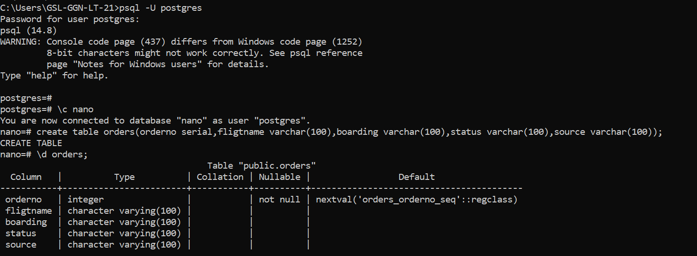
b) Create online_bookings, which inherits from orders. orders is the parent; online_bookings is the child.
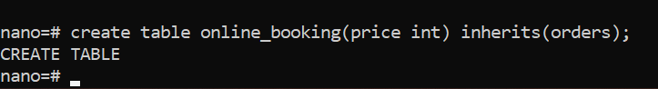
c) Create agent_bookings, which also inherits from orders.
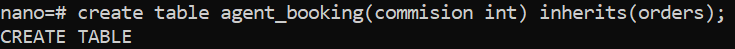
d) Insert one row into the parent table orders.
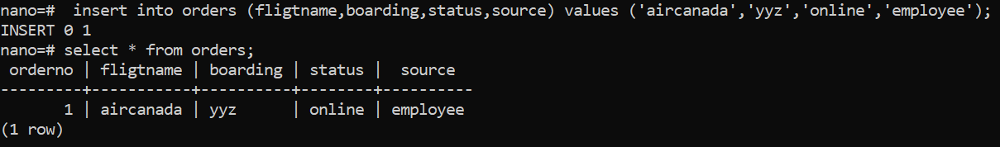
e) Insert two rows into the child table online_bookings.
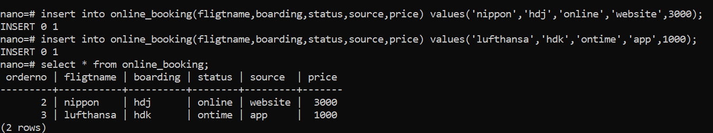
f) Insert two rows into agent_bookings.
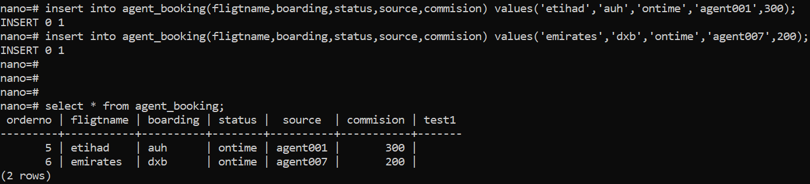
g) Query orders.
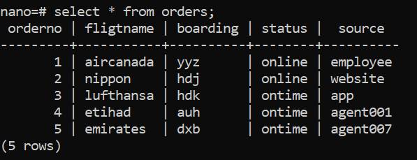
orders returns its own row plus the rows of both child tables. Querying a child table returns only the child’s rows. The child inherits the structure, not the parent’s data.
h) To see only the rows stored in orders itself, use ONLY:
SELECT * FROM ONLY orders;
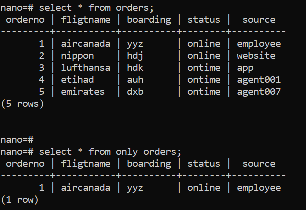
i) UPDATE orders SET status = 'offline'; changes rows in orders and its children.
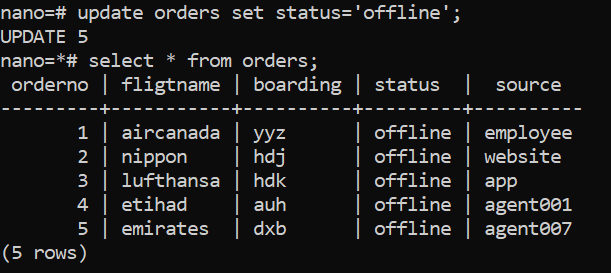
j) To change only the parent’s rows:
UPDATE ONLY orders SET status = 'offline';
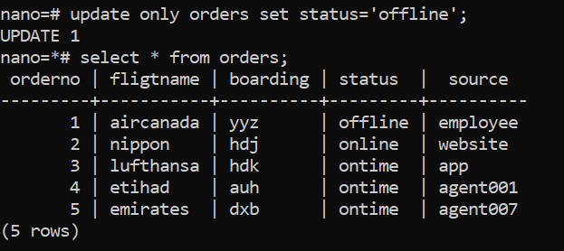
Table Partitioning¶
- Partitioning splits one large logical table into smaller physical pieces called partitions.
- Benefits for large tables: queries scan only the relevant partitions (partition pruning), old data can be removed quickly by dropping or detaching a partition, and maintenance runs on smaller pieces.
- From PostgreSQL 10, partitioning is declarative. PostgreSQL 17 supports three methods:
- RANGE – e.g. by date
- LIST – by explicit values, e.g. region
- HASH – spreads rows evenly by a hash of the key (PostgreSQL 11+)
- Declarative partitioning is the recommended method. The older inheritance-plus-trigger method is shown afterwards for reference.
- PostgreSQL 17 also allows identity columns and exclusion constraints on partitioned tables.
Declarative partitioning (recommended)¶
CREATE TABLE bookings (
booking_id varchar(10),
airline varchar(30),
booking_date date NOT NULL
) PARTITION BY RANGE (booking_date);
-- The lower bound is inclusive, the upper bound is exclusive
CREATE TABLE bookings_2020_01 PARTITION OF bookings
FOR VALUES FROM ('2020-01-01') TO ('2020-02-01');
CREATE TABLE bookings_2020_02 PARTITION OF bookings
FOR VALUES FROM ('2020-02-01') TO ('2020-03-01');
-- Optional: catch rows that match no other partition
CREATE TABLE bookings_default PARTITION OF bookings DEFAULT;
-- An index on the parent is created on every partition automatically
CREATE INDEX ON bookings (booking_date);
INSERT INTO bookings VALUES ('dxb102', 'emirates', '2020-01-10'); -- goes to bookings_2020_01
INSERT INTO bookings VALUES ('dxb103', 'lufthansa', '2020-02-23'); -- goes to bookings_2020_02
Other methods and partition maintenance:
-- LIST partitioning
CREATE TABLE sales (region text, amount numeric) PARTITION BY LIST (region);
CREATE TABLE sales_north PARTITION OF sales FOR VALUES IN ('Delhi', 'Punjab');
-- HASH partitioning
CREATE TABLE events (id bigint, payload jsonb) PARTITION BY HASH (id);
CREATE TABLE events_p0 PARTITION OF events FOR VALUES WITH (MODULUS 4, REMAINDER 0);
-- Remove old data quickly / add an existing table as a partition
ALTER TABLE bookings DETACH PARTITION bookings_2020_01;
ALTER TABLE bookings ATTACH PARTITION bookings_2020_01
FOR VALUES FROM ('2020-01-01') TO ('2020-02-01');
Legacy method: inheritance with a trigger¶
Before PostgreSQL 10, partitioning was built with inheritance, CHECK constraints and a trigger that routes each row to the right child.
a) Create the parent table bookings (without PARTITION BY).
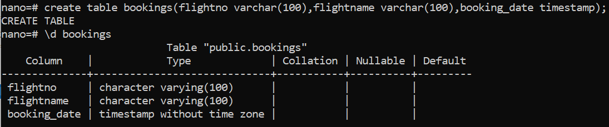
b) Create child tables that inherit from bookings:
CREATE TABLE jan_bookings (
CHECK (booking_date >= DATE '2020-01-01' AND booking_date <= DATE '2020-01-31')
) INHERITS (bookings);
CREATE TABLE feb_bookings (
CHECK (booking_date >= DATE '2020-02-01' AND booking_date <= DATE '2020-02-29')
) INHERITS (bookings);
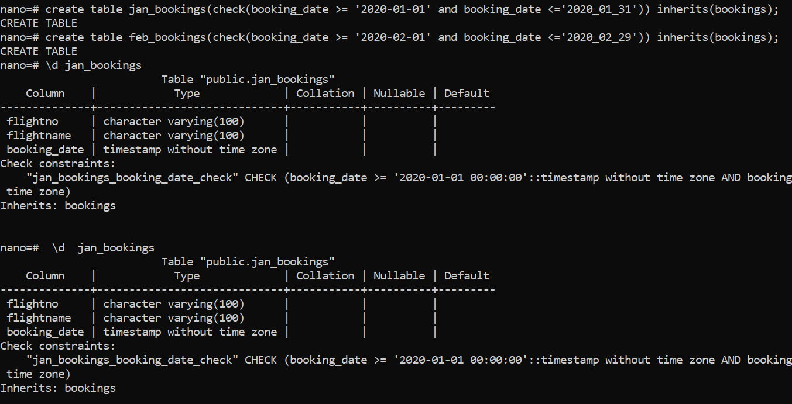
c) Create an index on each child table:
CREATE INDEX jan_idx ON jan_bookings USING btree (booking_date);
CREATE INDEX feb_idx ON feb_bookings USING btree (booking_date);
d) Create a trigger function that sends each new row to the correct child:
CREATE OR REPLACE FUNCTION on_insert() RETURNS trigger
AS $$
BEGIN
IF (NEW.booking_date >= DATE '2020-01-01' AND NEW.booking_date <= DATE '2020-01-31') THEN
INSERT INTO jan_bookings VALUES (NEW.*);
ELSIF (NEW.booking_date >= DATE '2020-02-01' AND NEW.booking_date <= DATE '2020-02-29') THEN
INSERT INTO feb_bookings VALUES (NEW.*);
ELSE
RAISE EXCEPTION 'Enter valid booking date';
END IF;
RETURN NULL;
END;
$$ LANGUAGE plpgsql;
The function inserts January dates into jan_bookings and February dates into feb_bookings; further months can be added the same way. Any other date raises an error. RETURN NULL stops the row from also being stored in the parent.
e) Create the trigger on the parent:
CREATE TRIGGER booking_entry
BEFORE INSERT ON bookings
FOR EACH ROW EXECUTE FUNCTION on_insert();
f) Insert some rows into bookings:
INSERT INTO bookings VALUES ('dxb102', 'emirates', '2020-01-10'); -- 1
INSERT INTO bookings VALUES ('dxb103', 'lufthansa', '2020-02-23'); -- 2
INSERT INTO bookings VALUES ('dxb104', 'british', '2020-02-08'); -- 3
INSERT INTO bookings VALUES ('dxb105', 'nipon', '2020-01-19'); -- 4
INSERT INTO bookings VALUES ('dxb105', 'nipon', '2020-03-19'); -- 5
Result: rows 1 and 4 go to jan_bookings; rows 2 and 3 go to feb_bookings; row 5 raises an error because March is not handled by the function.
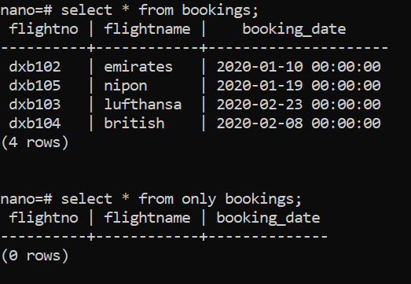
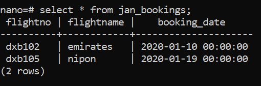
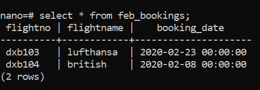
Copying a Table¶
CREATE TABLE … AS TABLEcopies a table’s columns and, optionally, its data.- Unlike inheritance, the copy has no relationship with the original table.
- It copies only column names and data types. It does not copy indexes, constraints (including
NOT NULL), defaults or triggers.
-- Structure and data
CREATE TABLE new_table AS TABLE existing_table;
-- Structure only
CREATE TABLE new_table AS TABLE existing_table WITH NO DATA;
-- Full structure including defaults, constraints and indexes (no data)
CREATE TABLE new_table (LIKE existing_table INCLUDING ALL);
12. Tablespaces¶
Tablespaces and Their Advantages¶
- A tablespace maps a logical name to a directory on disk where PostgreSQL stores data files.
- It lets you control the physical disk layout of a cluster.
- Typical uses:
- Spread data across several disks or volumes to balance I/O.
- Put heavily used tables and indexes on fast storage and archive data on cheaper, slower storage.
- Add space when the main volume is full.
Default Tablespaces¶
- Every cluster has two tablespaces out of the box:
pg_default– stores user data. Its location is<data directory>/base.pg_global– stores cluster-wide system catalogs. Its location is<data directory>/global.pg_defaultis the default tablespace oftemplate0andtemplate1, so new databases use it unlessCREATE DATABASE … TABLESPACEsays otherwise.
Creating a Tablespace¶
The directory must already exist, be empty and be owned by the OS user that runs PostgreSQL.
-- Windows
CREATE TABLESPACE hrd LOCATION 'D:\PostgreSQL\17\tablespace\hrd';
-- Linux
CREATE TABLESPACE hrd LOCATION '/u01/pgsql/tbs/hrd';
Create a table in the new tablespace and check where it is:
CREATE TABLE test1 (studid int, stuname varchar(50)) TABLESPACE hrd;
SELECT tablename, tablespace FROM pg_tables WHERE tablespace = 'hrd';
SELECT tablename, tablespace FROM pg_tables WHERE tablename = 'test1';
Moving a Table to Another Tablespace¶
ALTER TABLE test1 SET TABLESPACE pg_default;
Note: moving a table rewrites it and holds an ACCESS EXCLUSIVE lock for the whole operation, so plan it outside business hours. Indexes do not move with the table; move them with ALTER INDEX index_name SET TABLESPACE ….
-- Confirm the move (tablespace is NULL when the table is in the database default)
SELECT tablename, tablespace FROM pg_tables WHERE tablename = 'test1';
-- Physical file of the table, relative to the data directory
SELECT pg_relation_filepath('test1');
-- Physical location of each tablespace
SELECT spcname, pg_tablespace_location(oid) FROM pg_tablespace;
Dropping a Tablespace¶
- A tablespace can only be dropped when it is empty in every database of the cluster.
- Dropping it removes its directory contents and its symbolic link in
pg_tblspc.
-- Find objects in the tablespace (repeat in each database)
SELECT tablename FROM pg_tables WHERE tablespace = 'hrd';
SELECT indexname FROM pg_indexes WHERE tablespace = 'hrd';
DROP TABLESPACE hrd;
-- Confirm
SELECT spcname FROM pg_tablespace;
Temporary Tablespaces¶
- PostgreSQL writes temporary files when a sort or hash exceeds
work_mem, and stores temporary tables and their indexes on disk. temp_tablespaceslets you place these on a dedicated (ideally fast) volume.- Temporary files are deleted when no longer needed, and any leftovers are removed at server start.
CREATE TABLESPACE temp01 OWNER postgres LOCATION '/u01/pgsql/tbs/temp01';
Set temp_tablespaces = 'temp01' in postgresql.conf and reload, or set it per session with SET temp_tablespaces = 'temp01';. PostgreSQL creates a subdirectory inside the location the first time a temporary file is written.
13. Backup and Restore¶
Backup Types¶
- A backup is a copy of data that can be used to rebuild the database after a failure.
- Backups are either logical or physical.
- Logical backups are SQL statements (or an archive of them) that recreate a cluster, database or table.
- Physical backups are copies of the files PostgreSQL uses: the data directory, WAL files and archived WAL.
- Physical backups are taken either offline (server stopped) or online (server running).
| Logical (pg_dump, pg_dumpall) | Physical (file copy, pg_basebackup) | |
|---|---|---|
| Granularity | Cluster, database, schema or table | Whole cluster only |
| Point-in-time recovery | No | Yes, with WAL archiving |
| Across major versions | Yes | No |
| Speed for large databases | Slower | Faster |
Logical Backup¶
- Produces a consistent snapshot of a database as of the moment the dump started, without blocking normal reads and writes.
- Output formats: plain SQL text (default), custom, directory and tar.
- Well suited to small and medium databases, migrations and copying individual objects.
- Utilities:
pg_dump(one database) andpg_dumpall(whole cluster). - Use
pg_dump --helpto see all options.
pg_dump¶
# Linux – plain SQL file
pg_dump -U postgres -d nano -f /backup/nano_backup.sql
# Windows – plain SQL file
pg_dump -U postgres -d nano -f D:\user_backup\nano_backup.sql
# Custom format (compressed, restorable with pg_restore)
pg_dump -U postgres -Fc -d dvdrental -f D:\user_backup\dvdrental.dump
# Directory format with 4 parallel jobs
pg_dump -U postgres -Fd -j 4 -d dvdrental -f /backup/dvdrental_dir
# PG 17: choose objects with a filter file
pg_dump -U postgres -Fc -d dvdrental --filter=/backup/filter.txt -f /backup/dvdrental.dump
A filter file has one rule per line, for example:
include table public.payment*
exclude table_data public.audit_log
exclude schema staging
| -F value | Format | Restore with |
|---|---|---|
p |
Plain SQL text (default); readable in any editor | psql |
c |
Custom, compressed archive | pg_restore |
d |
Directory, one file per table; supports parallel dump and restore | pg_restore |
t |
Tar archive | pg_restore |
Restoring a Plain-Text pg_dump with psql¶
- A plain-text dump does not create the database by default, so create an empty database first (or dump with
-Cto includeCREATE DATABASE). - Restore plain-text dumps with
psql. Restore custom, directory and tar dumps withpg_restore.
psql version for plain dumps: since the August 2025 minor releases (17.6, 16.10, …), pg_dump writes \restrict and \unrestrict lines into plain-text dumps to block malicious meta-commands (CVE-2025-8714). An older psql cannot read these lines, so always restore plain dumps with a current psql (17.6 or later).
Example: back up and restore dvdrental in plain-text format
Step 1. List the databases. We will back up dvdrental.
Step 2. Take the backup:
pg_dump -U postgres -d dvdrental -f D:\user_backup\dvdrental_backup.sql
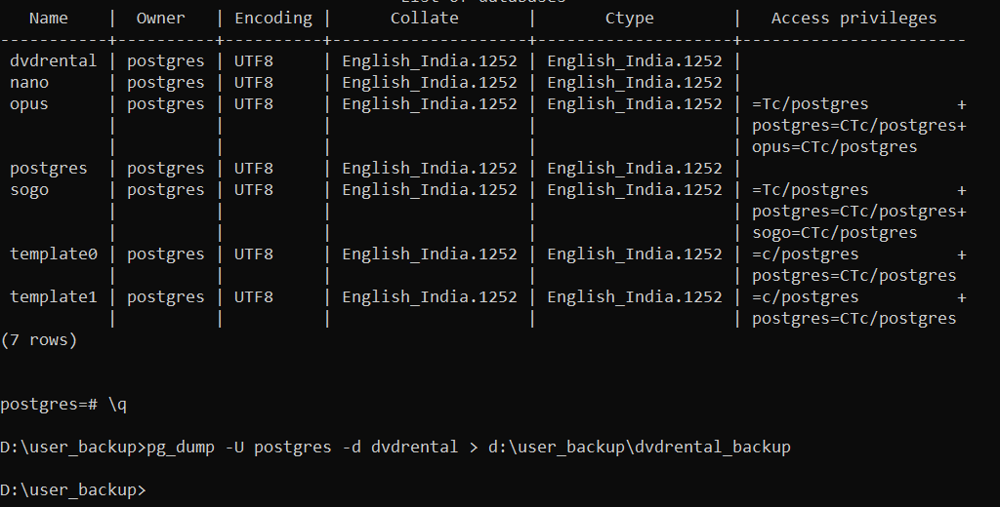
Step 3. Drop dvdrental.
Step 4. Create an empty database with the same name.
Step 5. Restore the plain-text backup with psql:
psql -U postgres -d dvdrental -f D:\user_backup\dvdrental_backup.sql
Restoring with pg_restore¶
pg_restorerestores dumps in custom, directory or tar format.- Plain-text dumps, including all
pg_dumpalloutput, cannot be restored withpg_restore; usepsql.
Example: back up and restore dvdrental in custom format
Step 1. Take a custom-format backup:
pg_dump -U postgres -Fc -d dvdrental -f D:\Pg_dump\dvdrental_backup.dump
Step 2. Drop dvdrental and create an empty database with the same name.
Step 3. Restore with pg_restore:
pg_restore -U postgres -d dvdrental D:\Pg_dump\dvdrental_backup.dump
Restoring a single table. pg_restore can restore one table from a full custom-format dump, which helps when a table is dropped or damaged by mistake:
pg_restore -U postgres -d dvdrental -t august test1.dump
Tip: -t restores the table definition and data but not its indexes. Use pg_restore -l to list the archive contents and -L with an edited list to choose exactly which objects to restore. -j N runs the restore in parallel. In PG 17, --transaction-size=N commits every N objects, which speeds up restores of databases with very many objects (and is what pg_upgrade uses internally). pg_restore --filter is also available.
pg_dumpall¶
- Extracts the whole cluster into one plain-text SQL script: every database plus global objects (roles and tablespaces), which
pg_dumpdoes not include.
pg_dumpall -U postgres -f /backup/clusterall.sql # Linux
pg_dumpall -U postgres -f "D:\user_backup\allbackup.sql" # Windows
pg_dumpall -U postgres --globals-only -f globals.sql # roles and tablespaces only (-g)
- The output is a plain SQL script; view it with any editor.
- A single database cannot be restored from it with a tool; you would have to extract that part of the script by hand.
Recommended practice: combine pg_dumpall --globals-only (roles and tablespaces) with a separate pg_dump -Fc for each database. This gives compressed, flexible per-database backups that can be restored selectively and in parallel.
pg_dump vs pg_dumpall¶
| pg_dump | pg_dumpall |
|---|---|
Backs up one database. If several -d options are given, only the last one is used. |
Backs up all databases in the cluster plus roles and tablespaces. Database-selection options do not limit it. |
Formats: plain (-Fp), custom (-Fc), directory (-Fd), tar (-Ft). |
Plain SQL text only. |
| Does not include roles or tablespaces. | Includes global objects. -g / --globals-only dumps only those. |
| One restore per database backup file. | One script restores the whole cluster. |
Restore plain dumps with psql; other formats with pg_restore. |
Restore with psql only. |
Example: pg_dumpall Backup and Restore¶
Step 1. Back up the whole cluster with pg_dumpall.
pg_dumpall connects to each database in turn, so it asks for the password once per database. Avoid this by setting the password for the session, or better, by using a password file:
:: Windows (current command prompt only)
set PGPASSWORD=postgres
# Linux (current shell only)
export PGPASSWORD=postgres
Safer alternative: store credentials in %APPDATA%\postgresql\pgpass.conf (Windows) or ~/.pgpass with permission 0600 (Linux), one line per server: hostname:port:database:username:password.
pg_dumpall -U postgres -f "D:\user_backup\cluster_backup.sql"
Step 2. Initialise a new, empty cluster and start it:
initdb -D "D:\PostgreSQL\17\data" -U postgres -W -E UTF8
pg_ctl start -D "D:\PostgreSQL\17\data"
Step 3. Restore the backup into the new cluster with psql:
psql -U postgres -d postgres -f "D:\user_backup\cluster_backup.sql"
Compressing and Splitting Dump Files¶
Compression
- Plain dumps of large databases can be very large.
- On Linux, pipe the output through a compression tool such as
gzip:
pg_dump -d test1 | gzip > /backup/test1backup.sql.gz
gunzip -c /backup/test1backup.sql.gz | psql -d test1 # restore
- On any platform, the custom (
-Fc) and directory (-Fd) formats are already compressed; set the level with-Z 0–9.
Splitting
Split a dump into smaller files for easier handling:
pg_dumpall | split -b 1G - /backup/all_database_backup_split_
cat /backup/all_database_backup_split_* | psql -d postgres # restore
|(pipe) sends the output ofpg_dumpallto the input ofsplit.splitis a Unix/Linux utility that splits its input into several files.-b 1Gsets the maximum size of each piece (for example1k,100M,1G).-tellssplitto read from standard input; the last argument is the file-name prefix.
File System Backup (Offline)¶
- The server must be shut down to take a usable copy, and must also be stopped before restoring.
- Only the whole cluster can be backed up and restored; restoring a single database or table is not possible.
- A consistent storage snapshot (taken by the volume or cloud provider) can be used in the same way.
Windows example
Step 1. Check whether the server is running:
pg_ctl status -D "D:\PostgreSQL\17\data"
Step 2. Stop the server:
pg_ctl stop -D "D:\PostgreSQL\17\data"
Step 3. Archive the data directory with tar (built into Windows 10 and later):
tar -czvf D:\data_backup.tar.gz -C "D:\PostgreSQL\17" data
| Option | Meaning |
|---|---|
c |
Create a new archive |
z |
Compress with gzip |
v |
Verbose: list each file as it is processed |
f |
The next argument is the archive file name |
-C dir |
Change to dir first, so the archive holds the relative path data |
Restore (offline)
Step 4. On the target server, install the same PostgreSQL major version and make sure the service is stopped. Rename or remove any existing data folder.
Step 5. Copy the archive to the server and extract it:
tar -xzvf D:\data_backup.tar.gz -C "D:\PostgreSQL\17"
| Option | Meaning |
|---|---|
x |
Extract files from the archive |
z |
Decompress with gzip |
v |
Verbose |
f |
The next argument is the archive file |
-C dir |
Extract into dir |
Step 6. Check that the extracted folder matches PGDATA and that the service account has full control of it, then start the server:
pg_ctl start -D "D:\PostgreSQL\17\data"
Linux example
# Backup (as postgres)
pg_ctl stop -D /var/lib/pgsql/17/data
tar -czvf /backup/data_backup.tar.gz -C /var/lib/pgsql/17 data
pg_ctl start -D /var/lib/pgsql/17/data
# Restore on the new server (as postgres, service stopped)
mv /var/lib/pgsql/17/data /var/lib/pgsql/17/data_old # if a data directory exists
tar -xzvf /backup/data_backup.tar.gz -C /var/lib/pgsql/17
chmod 700 /var/lib/pgsql/17/data
pg_ctl start -D /var/lib/pgsql/17/data
Continuous Archiving¶
- Continuous archiving copies each completed WAL segment to a separate, safe location.
- Together with a base backup, archived WAL allows point-in-time recovery (PITR) and can feed standby servers.
- It is enabled with
wal_level,archive_modeandarchive_commandinpostgresql.conf.
Steps to set up continuous archiving¶
Step 1. Check whether archiving is on:
SHOW archive_mode;
Step 2. Create the archive folder, for example D:\archivedir (Windows) or /backup/arch owned by postgres (Linux).
Step 3. Edit postgresql.conf:
wal_level = replica # default since PostgreSQL 10
archive_mode = on # on, off or always (change requires restart)
# Windows
archive_command = 'copy "%p" "D:\\archivedir\\%f"'
# Linux – do not overwrite an existing file
archive_command = 'test ! -f /backup/arch/%f && cp %p /backup/arch/%f'
%p is replaced by the path of the WAL file to archive and %f by its file name. The command must return success (exit code 0) only when the file has been archived safely.
Since PostgreSQL 15, an archive module can be used instead of a shell command by setting archive_library (for example the bundled basic_archive module, or a module from a backup tool). Set either archive_command or archive_library, not both.
Step 4. Restart PostgreSQL (archive_mode needs a restart):
Step 5. Check archiving:
SHOW archive_mode;
SELECT pg_switch_wal(); -- force a segment switch to test
SELECT archived_count, last_archived_wal, failed_count, last_failed_wal
FROM pg_stat_archiver;
To stop archiving: set archive_mode = off and restart. Leave wal_level at replica; it is also required for replication and pg_basebackup.
Online Low-Level API Backup¶
pg_basebackup (next section) is the simplest way to take an online backup. The low-level API is used when you copy the files with your own tools, such as storage snapshots or rsync. Since PostgreSQL 15 only the non-exclusive method exists, and the functions are named pg_backup_start() and pg_backup_stop(). (pg_start_backup(), pg_stop_backup() and pg_is_in_backup() no longer exist.)
Prerequisite: continuous archiving is working.
Step 1. Connect with psql as a superuser (or a role granted EXECUTE on these functions) and keep this session open until step 3:
SELECT pg_backup_start(label => 'weekly_backup', fast => false);
fast => false waits for the next regular checkpoint; true forces an immediate checkpoint (quicker, but causes an I/O spike).
Step 2. In another terminal, copy the data directory with any tool (tar, rsync, a storage snapshot). Leave out the contents of pg_wal/ and pg_replslot/, postmaster.pid, postmaster.opts, pgsql_tmp* and pg_internal.init files. Keep tablespace symlinks as links.
Step 3. In the same psql session, finish the backup:
SELECT * FROM pg_backup_stop(wait_for_archive => true);
The function waits until the last WAL segment needed is archived and returns three values: the end LSN, the labelfile and the spcmapfile.
Step 4. Save the labelfile value byte for byte as a file named backup_label in the root of the backup copy, and the spcmapfile value as tablespace_map if it is not empty. Without backup_label the backup cannot be restored.
If the session from step 1 disconnects, the backup is aborted and the copy is not usable. Run the steps from a script or a screen/tmux session.
pg_basebackup (Online)¶
- Takes a base backup of a running cluster over a replication connection.
- The result can be used for PITR or to build a standby server.
- It starts and stops backup mode automatically.
- It always backs up the entire cluster; it cannot back up a single database or object.
- The target directory must be empty or must not exist.
- The connecting user needs the
REPLICATIONattribute (or superuser), andpg_hba.confmust allow areplicationconnection.
pg_basebackup -D <backup_directory> -Ft -z -P -Xs
| Option | Meaning |
|---|---|
-D |
Target directory |
-Fp / -Ft |
Plain (a copy of the data directory) or tar format |
-z |
Compress the tar files with gzip (tar format only) |
-P |
Show progress |
-Xs |
Stream the WAL generated during the backup over a second connection, so the backup is self-contained and consistent on its own |
-R |
Write the configuration for a standby (standby.signal and primary_conninfo) |
-C -S name |
Create a replication slot name and use it |
--compress=… |
Compression method, level and location (PG 15+), e.g. --compress=server-zstd:level=5 or --compress=client-lz4 |
-i, --incremental=manifest |
Take an incremental backup relative to an earlier backup (PG 17, see below) |
--checkpoint=fast |
Start immediately instead of waiting for the next checkpoint |
:: Windows – tar
pg_basebackup -h localhost -p 5432 -U postgres -D "C:\basebackup" -Ft -z -P -Xs
:: Windows – plain
pg_basebackup -U postgres -D "D:\user_backup\bkp" -Fp -P -Xs
# Linux – tar
pg_basebackup -U postgres -p 5432 -D /backup/bkp2 -Ft -z -P -Xs
# Linux – plain
pg_basebackup -U postgres -D /backup/bkp -Fp -P -Xs
With -Ft -Xs, the backup directory contains base.tar(.gz) (the data directory), pg_wal.tar(.gz) (the WAL streamed during the backup) and backup_manifest. Check a backup with:
pg_verifybackup /backup/bkp # plain-format backups (tar format supported from PG 18)
Incremental Backup (PostgreSQL 17)¶
PostgreSQL 17 can take incremental base backups that copy only the blocks changed since an earlier backup. This cuts backup time and storage for large, mostly static databases.
Step 1. Enable WAL summarisation on the server (reload is enough):
ALTER SYSTEM SET summarize_wal = on;
SELECT pg_reload_conf();
The WAL summarizer process writes summaries to pg_wal/summaries; they are kept for wal_summary_keep_time (default 10 days).
Step 2. Take a normal full backup:
pg_basebackup -U postgres -D /backup/full_sun -Fp -P -Xs --checkpoint=fast
Step 3. Later, take incremental backups based on the previous backup’s manifest:
pg_basebackup -U postgres -D /backup/incr_mon -Fp -P -Xs \
--incremental=/backup/full_sun/backup_manifest
pg_basebackup -U postgres -D /backup/incr_tue -Fp -P -Xs \
--incremental=/backup/incr_mon/backup_manifest
Step 4. To restore, combine the chain (full first, then each incremental in order) into a new full backup with pg_combinebackup, then restore it as usual (recovery.signal + restore_command for PITR):
pg_combinebackup /backup/full_sun /backup/incr_mon /backup/incr_tue \
-o /var/lib/pgsql/17/data
chmod 700 /var/lib/pgsql/17/data
Keep the whole chain. An incremental backup is useless without the full backup and every incremental before it. PostgreSQL does not track these dependencies; your backup scripts must. WAL archiving is still required for PITR. pg_walsummary can display the contents of WAL summary files for troubleshooting.
Restoring an Online Backup and Point-in-Time Recovery¶
Overview (PostgreSQL 12 and later)
- WAL archiving must be enabled (
archive_mode,archive_command). - Take a base backup with
pg_basebackup. - To recover: stop the server and move the damaged data directory aside.
- Restore the base backup into an empty data directory (extract it if it is in tar format). Make sure the directory is owned by the service account and, on Linux, has permission
700. - In
postgresql.conf, setrestore_commandso PostgreSQL can fetch archived WAL. - For PITR, also set one recovery target, for example
recovery_target_time. Without a target, recovery replays all available archived WAL. - Create an empty file named
recovery.signalin the data directory. - Start the server and check the log.
PostgreSQL 12 change: recovery.conf no longer exists. Recovery parameters go in postgresql.conf (or postgresql.auto.conf), and the empty recovery.signal file tells the server to start in targeted recovery. Any contents of recovery.signal are ignored.
Recovery target parameters¶
Only one of the first five can be set at a time.
| Parameter | Recovery stops… |
|---|---|
recovery_target = 'immediate' |
As soon as a consistent state is reached (the end of the base backup). |
recovery_target_time |
At the given timestamp. |
recovery_target_xid |
At the given transaction ID. |
recovery_target_lsn |
At the given WAL location (LSN). |
recovery_target_name |
At a named restore point created with pg_create_restore_point('name'). |
recovery_target_inclusive |
on (default): stop just after the target; off: just before it. |
recovery_target_action |
What happens at the target: pause (default), promote or shutdown. |
Example: pg_basebackup, restore and PITR on Windows¶
Step 1. Make sure the cluster is archiving. Table root1 has 150 rows before the backup.
Step 2. Take an online backup into an empty directory:
pg_basebackup -U postgres -D "D:\pg_dump" -Ft -P -Xs
The backup files are created in D:\pg_dump.
Step 3. Insert rows into root1 (now 250 rows) and force a WAL switch so the change is archived (12:22):
SELECT pg_switch_wal();
Step 4. Insert more rows (now 350) and switch WAL again (12:24).
Step 5. Stop the server:
pg_ctl stop -D "D:\PostgreSQL\17\data"
Step 6. Rename the data folder (for example to data_old) and create a new, empty data folder with the same permissions.
Step 7. Restore the base backup. For a plain backup, copy its contents into data. For a tar backup, extract it:
tar -xvf D:\pg_dump\base.tar -C "D:\PostgreSQL\17\data"
tar -xzvf base.tar.gz -C /var/lib/pgsql/17/data # Linux equivalent
Step 8. Set these parameters in postgresql.conf:
# Windows
restore_command = 'copy "D:\\archivedir\\%f" "%p"'
# Linux
# restore_command = 'cp /backup/arch/%f %p'
recovery_target_time = '2023-06-29 12:22:00'
Here the target is 12:22, when root1 had 250 rows. Include seconds; check the modification times of the archived files to choose the target. If recovery_target_time is not set, all archived WAL is applied and root1 will have 350 rows.
Step 9. Create an empty recovery.signal file in the data directory:
type nul > "D:\PostgreSQL\17\data\recovery.signal"
touch /var/lib/pgsql/17/data/recovery.signal # Linux
Step 10. Start the server:
pg_ctl start -D "D:\PostgreSQL\17\data"
Step 11. Check the server log.
Because a recovery target was set and the default recovery_target_action is pause, the server stops at the target and accepts read-only connections. Check the data. If it is correct, end recovery and open the database for writes:
SELECT pg_wal_replay_resume();
How to tell recovery has finished: when recovery ends, the server promotes itself to read-write and deletes recovery.signal. Without a recovery target this happens automatically once all archived WAL has been applied. If recovery.signal is still present, recovery has not finished. After a successful PITR, remove recovery_target_time from postgresql.conf.
Step 12. Check the server log again.
Step 13. Verify the row count of root1 (250).
Example: restore with pg_basebackup on Linux¶
Prerequisite: archiving is on and working.
Step 1. Create a table and run some transactions to generate WAL. Table test1 has 5 rows.
Step 2. Check that the WAL files are being archived.
Step 3. Force a WAL switch to archive the current segment:
SELECT pg_switch_wal();
Step 4. Take a base backup in tar format. Two files are created: base.tar.gz (the data directory) and pg_wal.tar.gz (WAL streamed during the backup).
pg_basebackup -U postgres -D /backup/bkp2 -Ft -z -P -Xs
Step 5. Stop the cluster and remove the data directory, to simulate losing it.
Step 6. Create an empty data directory with permission 700, and an empty pg_wal directory inside it:
mkdir -p /var/lib/pgsql/17/data/pg_wal
chmod 700 /var/lib/pgsql/17/data
Extract the data directory from the base backup:
tar -xzvf /backup/bkp2/base.tar.gz -C /var/lib/pgsql/17/data
Extract the WAL streamed during the backup into pg_wal:
tar -xzvf /backup/bkp2/pg_wal.tar.gz -C /var/lib/pgsql/17/data/pg_wal
Step 7. To also replay WAL that was archived after the backup, set restore_command in postgresql.conf and create recovery.signal:
restore_command = 'cp /var/lib/pgsql/17/archive_logs/%f %p'
touch /var/lib/pgsql/17/data/recovery.signal
Without recovery.signal, the server only replays the WAL in pg_wal and recovers to the end of the backup.
Step 8. Start the cluster. If it fails with a permission error on the data directory:
set the permission to 700:
chmod 700 /var/lib/pgsql/17/data
and start the cluster again:
The cluster starts. Check that table test1 has its 5 rows:
The database has been restored successfully with pg_basebackup.
Example: point-in-time recovery on Linux¶
Step 1. Use the same table. Add more rows to generate WAL:
Switch WAL:
Check that new files appear in the archive folder:
Step 2. Take a fresh base backup:
Step 3. Insert more rows after the backup. The table had 10 rows; it now has 15.
The goal is to restore the database to the moment when the table had 10 rows.
Step 4. Simulate a crash by removing the data directory:
Step 5. Create the data and pg_wal directories and restore the base backup from step 2:
Restore only base.tar.gz. Extracting pg_wal.tar.gz is not needed for PITR, because the required WAL is fetched from the archive by restore_command.
Step 6. Choose the recovery target. Check the archived WAL files and their times:
The table had 10 rows at 16:24, before the base backup. The archived files from 16:30 and 16:32 contain the 5 later rows, which we do not want.
Step 7. Create an empty recovery.signal file in the data directory:
touch /var/lib/pgsql/17/data/recovery.signal
Add the recovery settings to postgresql.conf:
restore_command = 'cp /var/lib/pgsql/17/archive_logs/%f %p'
recovery_target_time = '2020-12-14 16:24:00'
Important: both parameters are required for PITR. Without recovery_target_time, all archived WAL is applied and the table ends with 15 rows instead of 10. In PostgreSQL 12 and later these lines belong in postgresql.conf; anything written inside recovery.signal is ignored.
Step 8. Make sure the data directory has permission 700:
Step 9. Start the cluster. Recovery stops at 16:24 and the server pauses in read-only mode.
Step 10. Check that test1 has 10 rows, then run SELECT pg_wal_replay_resume(); to finish recovery and open the database for writes.
14. Maintenance¶
Introduction to Maintenance¶
- Every database needs regular maintenance to keep performance optimal.
- Maintenance tasks are ongoing and repetitive, so they should be automated: with autovacuum, and with cron jobs (Linux) or Task Scheduler (Windows) for anything extra.
- PostgreSQL’s main maintenance operations are:
- Updating planner statistics (
ANALYZE) VACUUM- Routine reindexing
CLUSTER
Updating Planner Statistics (ANALYZE)¶
- The query planner relies on statistics about the contents of each table to choose good plans.
ANALYZEgathers these statistics: the number of rows and pages, and samples of the data distribution in each column (most common values, histograms).- Inaccurate or stale statistics can mislead the planner into choosing slow plans.
- Tables with heavy inserts, updates or deletes need to be analysed regularly.
- The autovacuum daemon runs
ANALYZEautomatically; it can also be run manually.
Example: ANALYZE and EXPLAIN¶
Step 1. Create an empty table:
CREATE TABLE tel_directory (cust_id varchar(10), cust_name varchar(50), state varchar(10), zip integer);
Step 2. Disable autovacuum on this table, so it is not analysed automatically during the test:
ALTER TABLE tel_directory SET (autovacuum_enabled = false);
Step 3. Confirm the setting:
SELECT reloptions FROM pg_class WHERE relname = 'tel_directory';
Step 4. Insert 5,000 rows and look at the estimated plan:
EXPLAIN SELECT * FROM tel_directory;
The estimate (rows=1152 width=198) is wrong because the table has 5,000 rows and has never been analysed.
Step 5. Analyse the table:
ANALYZE tel_directory;
EXPLAIN SELECT * FROM tel_directory;
After ANALYZE, the estimated cost rises from 43 to 82, and the row count and width are now accurate.
Re-enable autovacuum when the test is finished:
ALTER TABLE tel_directory SET (autovacuum_enabled = true);
The plan can then be improved with an index.
Step 1. Check the plan of a filtered query:
EXPLAIN SELECT * FROM tel_directory WHERE state IN ('TX', 'NJ', 'NY');
Step 2. Create an index:
CREATE INDEX telidx ON tel_directory (state);
Step 3. Check the plan again:
EXPLAIN and Query Cost¶
EXPLAINshows the plan the planner chooses for aSELECT,INSERT,UPDATEorDELETEstatement, with estimated costs and row counts.EXPLAIN ANALYZEalso runs the statement and shows actual times and row counts. (Wrap data-changing statements inBEGIN; … ROLLBACK;when using it.)
For a sequential scan without a filter, the estimated cost is:
cost = relpages × seq_page_cost + reltuples × cpu_tuple_cost
For tel_directory:
| Value | Amount |
|---|---|
relpages |
32 |
seq_page_cost |
1 |
reltuples |
5000 |
cpu_tuple_cost |
0.01 |
| Cost | 32 × 1 + 5000 × 0.01 = 82 |
Bloat (Data Fragmentation)¶
- Fragmentation in PostgreSQL is usually called bloat.
- Because of MVCC, PostgreSQL does not overwrite or remove a row in place when it is updated or deleted. The old row version is kept and marked as dead once no transaction can see it.
- Dead rows stay in the table until
VACUUMremoves them. - As dead rows accumulate, tables and indexes grow larger than their live data needs.
VACUUM vs VACUUM FULL¶
| VACUUM | VACUUM FULL |
|---|---|
| Removes dead rows and marks the space reusable. | Rewrites the whole table into a new file with no free space. |
| Space is reused for new rows in the same table; it is generally not returned to the OS (only empty pages at the end of the table can be truncated). | Returns unused space to the operating system. |
Does not block reads or writes (SHARE UPDATE EXCLUSIVE lock). |
Takes an ACCESS EXCLUSIVE lock: the table cannot be read or written until it finishes. |
| Fast; can run frequently. Frequently updated tables are good candidates. | Much slower. Needs extra disk space for the new copy until it completes. |
PG 17: uses far less memory for dead-row tracking and is no longer limited to 1 GB of maintenance_work_mem. |
Prefer pg_repack (extension) for online rebuilding of large production tables. |
SQL: VACUUM table; — CLI: vacuumdb |
SQL: VACUUM FULL table; — CLI: vacuumdb -f |
Example: VACUUM and VACUUM FULL¶
Step 1. tel_directory has 5,000 rows and uses 280 kB.
Step 2. Disable autovacuum on the table and delete some rows. The size is still 280 kB, because deleted rows are only marked dead.
Step 3. Insert more rows. The table grows to 352 kB, because the dead rows’ space has not yet been made reusable.
Step 4. Run VACUUM:
VACUUM (VERBOSE) tel_directory;
Step 5. Run VACUUM FULL:
VACUUM (FULL, VERBOSE) tel_directory;
The table size drops significantly, and the space is returned to the disk.
From the command line:
vacuumdb -U postgres -d postgres # VACUUM a database
vacuumdb -U postgres -d postgres -f # VACUUM FULL a database
vacuumdb -U postgres -d postgres -z # VACUUM and ANALYZE
vacuumdb -U postgres --all -j 4 -z # all databases, 4 parallel jobs
vacuumdb -U postgres -d appdb --schema=main # one schema (PG 16)
Useful options in recent versions:
-- Limit the shared-buffer ring VACUUM uses (PG 16), so it does not evict hot data
VACUUM (BUFFER_USAGE_LIMIT '256MB', VERBOSE) big_table;
-- Watch progress, including index phases (indexes_total / indexes_processed, PG 17)
SELECT pid, relid::regclass, phase, heap_blks_scanned, heap_blks_total,
indexes_total, indexes_processed
FROM pg_stat_progress_vacuum;
Autovacuum¶
- Autovacuum automates
VACUUMandANALYZE. - It checks for tables with many inserted, updated or deleted rows, based on the activity statistics.
- The autovacuum launcher starts worker processes. It tries to start one worker in each database every
autovacuum_naptimeseconds (default 60), up toautovacuum_max_workers(default 3). - A table is vacuumed when its dead rows exceed
autovacuum_vacuum_threshold + autovacuum_vacuum_scale_factor × reltuples(defaults 50 + 20 %), and analysed on a similar rule for changed rows. - Thresholds can be set per table:
ALTER TABLE t SET (autovacuum_vacuum_scale_factor = 0.05);
SELECT name, setting FROM pg_settings WHERE name LIKE '%autovacuum%';
Transaction ID Wraparound¶
- MVCC decides which row versions a transaction can see by comparing transaction IDs (XIDs).
- XIDs are 32-bit, so there are about 4 billion of them, and they wrap around.
- Each XID treats roughly 2 billion XIDs as “in the past” and 2 billion as “in the future”. Without maintenance, very old rows would suddenly appear to be in the future and become invisible, which looks like data loss.
- To prevent this, every table in every database must be vacuumed (frozen) at least once every 2 billion transactions. Autovacuum forces an anti-wraparound vacuum when a table’s age reaches
autovacuum_freeze_max_age(default 200 million), even if autovacuum is otherwise disabled. - Monitor the age of each database:
SELECT datname,
age(datfrozenxid) AS xid_age,
current_setting('autovacuum_freeze_max_age') AS freeze_max_age
FROM pg_database
ORDER BY 2 DESC;
VACUUM FREEZE¶
- Freezing marks old rows as visible to all transactions, so their XIDs no longer matter for wraparound.
- A frozen row never needs to be frozen again, but the table still needs normal vacuuming to remove dead rows created later.
- PostgreSQL treats frozen rows as older than every normal XID.
vacuum_freeze_min_age(default 50 million) sets how old a row’s XID must be before VACUUM freezes it.- Normal VACUUM skips pages that have no dead rows, so old XIDs can remain on them. When a table’s age reaches
vacuum_freeze_table_age(default 150 million), VACUUM scans the whole table (an aggressive vacuum) to freeze them. - To freeze manually:
VACUUM (FREEZE, VERBOSE) table_name;
vacuumdb -F -d database_name # whole database
vacuumdb -F -d database_name -t table_name # one table
Routine Reindexing¶
- Inserts, updates and deletes gradually fragment indexes and leave empty space in them (index bloat).
- In a fragmented index, the logical order of pages differs from their physical order, so more I/O is needed.
REINDEXrebuilds an index from the table data and removes the empty space.REINDEXis built in. A plainREINDEXblocks writes to the table (and reads that use the index) while it runs. From PostgreSQL 12,REINDEX … CONCURRENTLYavoids blocking writes.
REINDEX INDEX id_comp;
REINDEX INDEX CONCURRENTLY id_comp; -- production-friendly
REINDEX TABLE table_name;
Measuring index bloat with pgstattuple (optional)¶
The pgstattuple extension (from the contrib package) reports how full an index is, which helps decide whether to reindex.
- Install the contrib package if needed. On Linux:
sudo dnf install postgresql17-contrib. The Windows installer includes it. - Check that it is available and create it in the database:
SELECT * FROM pg_available_extensions WHERE name = 'pgstattuple';
CREATE EXTENSION pgstattuple;
- Check the index. Low
avg_leaf_densityor highleaf_fragmentationsuggests a reindex:
SELECT avg_leaf_density, leaf_fragmentation FROM pgstatindex('id_comp');
- Rebuild it:
REINDEX INDEX CONCURRENTLY id_comp;
CLUSTER¶
CLUSTERphysically reorders a table to match the order of one of its indexes.- It is a one-time operation: rows inserted or updated later are not kept in order.
- It takes an
ACCESS EXCLUSIVElock and rewrites the table (extra disk space needed), so do not run it during peak hours. - Benefit: queries that read a range of index values touch fewer pages.
CLUSTER table_name USING index_name;
Example: clustering a table¶
Step 1. Create a table.
Step 2. Insert some rows.
Step 3. Query the table.
Without ORDER BY, the order of the rows returned is not defined. To get a specific order you must use ORDER BY:
SELECT * FROM test ORDER BY id;
Step 4. Create an index on id:
CREATE INDEX idx_test_id ON test (id);
Step 5. Cluster the table on that index:
CLUSTER test USING idx_test_id;
Step 6. Query the table again.
Right after CLUSTER, a simple sequential scan usually returns rows in index order because that is their physical order. This is a side effect, not a guarantee: always use ORDER BY when order matters. New rows added after clustering are not placed in order.
15. Upgrading PostgreSQL¶
What Is an Upgrade?¶
- Upgrading means moving a database from one PostgreSQL release to a newer one.
- From PostgreSQL 10 onwards, a version number has two parts: major.minor, for example 17.11 (major 17, minor 11). Before version 10 it had three parts, for example 9.6.24, where 9.6 is the major version.
- Minor releases never change the storage format. Upgrading within a major version only needs the new binaries installed and a restart.
- Major releases can change the internal format of system catalogs and data, so a special procedure is needed.
- Reasons to upgrade:
- Security fixes
- New features and better performance
- Bug fixes
- Lower running costs
- End of community support (each major version is supported for 5 years)
PostgreSQL 14 reaches end of life on 12 November 2026. After that it receives no security or bug fixes. PostgreSQL 17 is supported until November 2029. Plan the move from 14 to 17 now; the example below shows it.
Ways to Do a Major Upgrade¶
| Method | Downtime | Notes |
|---|---|---|
pg_dump / pg_dumpall and restore |
Long for large databases | Simple and works across platforms. |
pg_upgrade |
Minutes (especially with --link) |
In-place, on the same server. |
| Logical replication | Seconds (switchover) | Replicate to a new-version server, then switch the application. Physical replication cannot be used across major versions. |
pg_upgrade¶
pg_upgrade(formerlypg_migrator) upgrades a cluster to a newer major version without dumping and reloading the data.- Major releases often change the system tables, but rarely the user data storage format.
pg_upgradecreates new system tables and reuses the old user data files. - It checks that the old and new clusters are compatible before doing anything.
/usr/pgsql-17/bin/pg_upgrade \
--old-bindir=/usr/pgsql-14/bin --new-bindir=/usr/pgsql-17/bin \
--old-datadir=/var/lib/pgsql/14/data --new-datadir=/var/lib/pgsql/17/data \
--check
| Option | Meaning |
|---|---|
-b, --old-bindir |
Old version’s bin directory |
-B, --new-bindir |
New version’s bin directory |
-d, --old-datadir |
Old data directory |
-D, --new-datadir |
New data directory |
-p / -P |
Old / new cluster port |
-U |
Superuser name |
-c, --check |
Check the clusters only; change nothing |
| (none) | Copy mode (default): copies data files. Safest; needs double the disk space. |
-k, --link |
Use hard links instead of copying. Very fast, but once the new cluster is started the old one can no longer be used. |
--clone |
Use file cloning (reflinks) on supported file systems (e.g. XFS, Btrfs). As fast as link mode, and the old cluster stays usable. |
--copy-file-range |
PG 17: copy using the copy_file_range() system call; can be faster than plain copy and uses reflinks where the file system supports them. |
-j N |
Process N databases/tablespaces in parallel. |
What pg_upgrade carries over in PostgreSQL 17: when the old cluster is PostgreSQL 17 or later, logical replication slots on publishers and full subscription state on subscribers are preserved, so logical replication does not have to be rebuilt after future upgrades (17 → 18 and beyond). When upgrading from 14 to 17, logical slots are not migrated: drop them before the upgrade and recreate them afterwards. Planner statistics are never carried over in PG 17; run vacuumdb --analyze-in-stages after the upgrade.
Example: upgrade from PostgreSQL 14 to 17 on Linux (RHEL)¶
Run as the postgres OS user unless sudo is shown.
# 1. Install PostgreSQL 17 next to 14 (same PGDG repository)
sudo dnf install -y postgresql17-server postgresql17-contrib
# 2. Initialise the 17 cluster with the SAME encoding, locale and checksum setting as 14
psql -p 5432 -c "\l" # check encoding/collation
/usr/pgsql-14/bin/pg_controldata -D /var/lib/pgsql/14/data | grep checksum
sudo PGSETUP_INITDB_OPTIONS="-E UTF8 --locale=en_US.UTF-8" /usr/pgsql-17/bin/postgresql-17-setup initdb
# add --data-checksums only if the old cluster has checksums enabled
# 3. Install the same extensions for 17 (e.g. postgresql17-contrib, pg_repack_17, …)
# 4. Take a backup, stop the application, then stop the old server
sudo systemctl stop postgresql-14
# 5. Check, then upgrade (--link is fast; drop it to keep the old cluster usable)
cd /var/lib/pgsql
/usr/pgsql-17/bin/pg_upgrade -b /usr/pgsql-14/bin -B /usr/pgsql-17/bin \
-d /var/lib/pgsql/14/data -D /var/lib/pgsql/17/data --link -j 4 --check
/usr/pgsql-17/bin/pg_upgrade -b /usr/pgsql-14/bin -B /usr/pgsql-17/bin \
-d /var/lib/pgsql/14/data -D /var/lib/pgsql/17/data --link -j 4
# 6. Copy custom settings from 14's postgresql.conf / pg_hba.conf, then start 17
sudo systemctl enable --now postgresql-17
# 7. Rebuild planner statistics and update extensions
/usr/pgsql-17/bin/vacuumdb --all --analyze-in-stages -j 4
psql -f update_extensions.sql # generated by pg_upgrade, if needed
# 8. When satisfied, remove the old cluster
./delete_old_cluster.sh
Example: upgrade on Windows¶
The screenshots below come from an earlier 13 → 14 upgrade; the steps are the same for 14 → 17. Directory names follow the 14 → 17 case.
Step 1. Check that PostgreSQL 14 is running and note the locations of its data and bin directories.
Step 2. Take a full backup of the old cluster:
pg_dumpall -U postgres -f "D:\Pg_dump\cluster14.sql"
:: or
pg_basebackup -U postgres -D "D:\user_backup\bkp" -Fp -P -Xs
Step 3. Install PostgreSQL 17 (see Chapter 2). Use a different port during installation (for example 5433).
Step 4. Check that both versions are in the installation location and that the folders have the right permissions.
Step 5. Initialise the new version 17 cluster (same encoding and locale as the old cluster):
initdb -D "D:\PostgreSQL\17\data" -U postgres -W -E UTF8
Step 6. Stop both clusters. Make sure the application is down and no one can connect (block connections in pg_hba.conf if needed).
Step 7. Run the compatibility check from the PostgreSQL 17 bin folder:
D:\PostgreSQL\17\bin\pg_upgrade -U postgres ^
--old-bindir="D:\PostgreSQL\14\bin" --new-bindir="D:\PostgreSQL\17\bin" ^
--old-datadir="D:\PostgreSQL\14\data" --new-datadir="D:\PostgreSQL\17\data" ^
-p 5432 -P 5433 --check
Performing Consistency Checks on Old Live Server
------------------------------------------------
Checking cluster versions ok
connection to server at "localhost" (::1), port 5432 failed: fe_sendauth: no password supplied
Failure, exiting
Step 8. pg_upgrade has no password option. Set the password for the session (or use pgpass.conf):
set PGPASSWORD=your_password
encodings for database "postgres" do not match: old "UTF8", new "WIN1252"
Step 9. The new cluster was created with a different encoding. On Windows, initdb takes its default encoding from the system locale (here WIN1252), while the old cluster uses UTF8. Delete the new data directory and run initdb again with the same encoding and locale as the old cluster:
initdb -D "D:\PostgreSQL\17\data" -U postgres -W -E UTF8 --locale="English_United States.1252"
Check the old cluster’s settings with \l before choosing the locale.
Step 10. Run the check again. The clusters are now compatible.
Step 11. Before upgrading, make sure both servers are stopped. pg_upgrade needs exclusive access to both data directories.
Step 12. Run the upgrade by removing --check:
D:\PostgreSQL\17\bin\pg_upgrade -U postgres ^
--old-bindir="D:\PostgreSQL\14\bin" --new-bindir="D:\PostgreSQL\17\bin" ^
--old-datadir="D:\PostgreSQL\14\data" --new-datadir="D:\PostgreSQL\17\data" ^
-p 5432 -P 5433
Step 13. At the end, pg_upgrade advises running vacuumdb to rebuild planner statistics, because statistics are not carried over.
Step 14. Copy any custom settings from the old postgresql.conf and pg_hba.conf to the new cluster, then start PostgreSQL 17.
Step 15. Generate planner statistics:
vacuumdb -U postgres --all --analyze-in-stages
Step 16. Connect to PostgreSQL 17 and check the version and your data:
SELECT version();
Step 17. When you are sure the new cluster is good, uninstall PostgreSQL 14 and remove its data directory. You can keep it for a while as a fallback (this is only possible in copy or clone mode).
Uninstalling PostgreSQL¶
Windows
- Open the PostgreSQL installation folder.
- Run
uninstall-postgresql.exe. - Remove individual components or the whole installation.
- The uninstaller does not remove the data folder; delete it manually.
- Remove the environment variables you added: the
binentry inPath, andPGDATA.
Linux (RHEL)
sudo systemctl stop postgresql-14
sudo systemctl disable postgresql-14
sudo dnf remove 'postgresql14*'
# Data is kept in /var/lib/pgsql/14 – remove it manually when no longer needed
16. PostgreSQL 17: Enhancements, Bug Fixes and Advanced Options¶
PostgreSQL 17.0 was released on 26 September 2024. The community supports it with bug and security fixes until 8 November 2029. This chapter covers what is new in PostgreSQL 17, the fixes delivered in its minor releases up to 17.11 (13 August 2026), and the advanced options that are worth knowing for production use.
Version Support Timeline¶
| Major version | Released | End of life | Status (October 2026) |
|---|---|---|---|
| PostgreSQL 14 | Sep 2021 | 12 Nov 2026 | Final months – upgrade now |
| PostgreSQL 15 | Oct 2022 | 11 Nov 2027 | Supported |
| PostgreSQL 16 | Sep 2023 | 9 Nov 2028 | Supported |
| PostgreSQL 17 | Sep 2024 | 8 Nov 2029 | Supported – target of this guide |
| PostgreSQL 18 | Sep 2025 | 14 Nov 2030 | Current major release |
Highlights at a Glance¶
| Area | What PostgreSQL 17 adds |
|---|---|
| VACUUM | New memory structure for dead-row tracking: up to 20× less memory, no 1 GB limit, faster vacuums |
| I/O | Streaming I/O for sequential scans and ANALYZE (io_combine_limit); up to 2× better WAL write throughput under high concurrency |
| Indexes | Faster B-tree searches for IN (…) / = ANY(…) lists; parallel BRIN index builds |
| Backup | Incremental backups with pg_basebackup --incremental and pg_combinebackup |
| Logical replication | Failover slots, pg_createsubscriber, slots and subscriptions preserved by pg_upgrade |
| SQL/JSON | JSON_TABLE(), JSON_EXISTS(), JSON_QUERY(), JSON_VALUE(), JSON(), JSON_SCALAR(), JSON_SERIALIZE() |
| MERGE | RETURNING, merge_action(), WHEN NOT MATCHED BY SOURCE, MERGE on updatable views |
| COPY | ON_ERROR ignore to skip bad rows; LOG_VERBOSITY; faster export |
| Security | sslnegotiation=direct; MAINTAIN privilege and pg_maintain role; safe search_path for maintenance |
| Administration | transaction_timeout, allow_alter_system, login event triggers, built-in collation provider |
| Monitoring | pg_stat_checkpointer, pg_wait_events, EXPLAIN (SERIALIZE, MEMORY), inactive_since on slots, index progress in pg_stat_progress_vacuum |
Performance Enhancements¶
VACUUM memory management¶
- VACUUM now stores dead-row identifiers in a compact radix-tree structure (TidStore). It uses up to 20 times less memory for the same work.
- VACUUM is no longer limited to 1 GB of
maintenance_work_mem/autovacuum_work_mem. Large tables are processed in fewer index passes, so vacuums finish sooner. pg_stat_progress_vacuumcolumns changed:max_dead_tuples→max_dead_tuple_bytes,num_dead_tuples→num_dead_item_ids, plus newdead_tuple_bytes,indexes_totalandindexes_processed.
Streaming I/O and WAL throughput¶
- Sequential scans and
ANALYZEread several adjacent blocks with a single system call. The size of these combined reads is set byio_combine_limit(default 128 kB). - WAL insertion was reworked for heavy concurrency: workloads with many concurrent writers can see up to twice the WAL write throughput.
COPY … TOexports large rows up to twice as fast.
Query planning and indexes¶
- B-tree indexes search many values of an
IN (…)or= ANY(array)list in one pass instead of one search per value. CREATE INDEXon BRIN indexes can run in parallel.- The planner removes redundant
IS NOT NULLchecks onNOT NULLcolumns, uses statistics and sort order of CTEs (WITHqueries) in the outer query, and can reorderGROUP BYkeys (enable_group_by_reordering). - Cache sizes for SLRU data (commit status, subtransactions, multixacts, notifications, serializable transactions) can be tuned with new parameters such as
transaction_buffersandsubtransaction_buffers, which helps very busy systems with many subtransactions.
Backup and Recovery¶
- Incremental backup: enable
summarize_wal = on, take a fullpg_basebackup, then take incremental backups with--incremental=<previous backup_manifest>. Restore by merging the chain withpg_combinebackup. Step-by-step instructions are in Chapter 13. - New tools:
pg_combinebackup(rebuilds a full backup from a chain) andpg_walsummary(shows WAL summary contents). - New background process: the WAL summarizer, started when
summarize_wal = on(visible inpg_stat_activity).
Logical Replication and High Availability¶
Failover slots¶
Before PostgreSQL 17, logical replication slots existed only on the primary. After a failover, subscribers (and CDC tools such as Debezium) lost their position and had to be resynchronised. PostgreSQL 17 can synchronise logical slots to a physical standby, so logical replication continues after the standby is promoted.
On the primary
-- Create the subscription (on the subscriber) with failover enabled
CREATE SUBSCRIPTION mysub
CONNECTION 'host=primary dbname=appdb user=repuser'
PUBLICATION mypub
WITH (failover = true);
-- Or, for a slot used by another tool:
SELECT pg_create_logical_replication_slot('cdc_slot', 'pgoutput', false, false, true); -- last arg = failover
# postgresql.conf on the primary (recommended): logical consumers may not get ahead of this standby
synchronized_standby_slots = 'standby1_slot'
On the standby
sync_replication_slots = on
hot_standby_feedback = on
primary_slot_name = 'standby1_slot'
primary_conninfo = 'host=primary user=repuser dbname=postgres' # dbname is required
Check on the standby that the slots are synchronised:
SELECT slot_name, slot_type, failover, synced, active FROM pg_replication_slots;
Only slots with synced = true before the failover can be used afterwards. After promotion, point the subscription at the new primary with ALTER SUBSCRIPTION mysub CONNECTION '…';. pg_sync_replication_slots() synchronises once by hand (mainly for testing).
pg_createsubscriber¶
pg_createsubscriber turns a physical standby into a logical subscriber without copying the data again. This is the fastest way to build a logical replica of a large database, for example for a major-version upgrade or to split one database off.
# The standby must be stopped; run as postgres on the standby host
pg_createsubscriber -D /var/lib/pgsql/17/data \
-P "host=192.168.4.46 port=5432 user=repuser" \
-d appdb --publication=appdb_pub --subscription=appdb_sub \
--dry-run # remove --dry-run to perform the conversion
The tool creates the publication on the primary, a subscription on the target, and ends the target’s recovery at a consistent point.
Other replication changes¶
pg_upgradekeeps logical replication slots on publishers and full subscription state on subscribers, when the old cluster is PostgreSQL 17 or later.pg_replication_slotshas new columnsinactive_since(when the slot stopped being used) andinvalidation_reason(why it was invalidated). These make inactive-slot monitoring much easier; see Appendix A.- Logical decoding uses less memory for transactions with many subtransactions.
SQL and Developer Features¶
SQL/JSON and JSON_TABLE¶
JSON_TABLE turns JSON documents into rows and columns, so JSON can be joined like a table.
SELECT jt.*
FROM orders o,
JSON_TABLE(o.payload, '$.items[*]'
COLUMNS (sku text PATH '$.sku',
qty int PATH '$.qty',
price numeric PATH '$.price')) AS jt
WHERE o.order_id = 1001;
-- Query functions
SELECT JSON_EXISTS(payload, '$.coupon') AS has_coupon,
JSON_VALUE(payload, '$.customer.city') AS city,
JSON_QUERY(payload, '$.items' WITH WRAPPER) AS items
FROM orders;
MERGE improvements¶
MERGE INTO stock s
USING daily_receipts r ON s.sku = r.sku
WHEN MATCHED THEN
UPDATE SET qty = s.qty + r.qty
WHEN NOT MATCHED THEN
INSERT (sku, qty) VALUES (r.sku, r.qty)
WHEN NOT MATCHED BY SOURCE THEN -- PG 17: rows in target with no source row
UPDATE SET qty = 0
RETURNING merge_action(), s.*; -- PG 17: see which action touched each row
COPY that skips bad rows¶
COPY customers FROM '/data/customers.csv'
WITH (FORMAT csv, HEADER true, ON_ERROR ignore, LOG_VERBOSITY verbose);
Rows with data-type errors are skipped instead of aborting the whole load; with LOG_VERBOSITY verbose, each skipped row is reported as a NOTICE.
Other SQL additions¶
random(min, max)for integers and numerics;to_bin()andto_oct().AT LOCALconverts a timestamp to the session time zone.intervalvalues can be'infinity'and'-infinity'.- Identity columns and exclusion constraints on partitioned tables.
ALTER TABLE … ALTER COLUMN … SET EXPRESSIONchanges a generated column’s expression.
Security Enhancements¶
sslnegotiation=direct(client option): starts TLS immediately using ALPN, saving a network round trip. Requiressslmode=requireor stricter and a PostgreSQL 17 server.
psql "host=db01 dbname=appdb user=app sslmode=verify-full sslnegotiation=direct"
MAINTAINprivilege andpg_maintainrole: let operations staff run VACUUM, ANALYZE, REINDEX, CLUSTER, REFRESH MATERIALIZED VIEW and LOCK TABLE without being table owners or superusers.- Safe
search_pathduring maintenance:ANALYZE,CLUSTER,REFRESH MATERIALIZED VIEW,REINDEXandVACUUMnow run functions withsearch_path = pg_catalog, pg_temp. Functions used by expression indexes or materialized views must therefore schema-qualify the objects they reference, otherwise these commands fail after the upgrade. allow_alter_system = offblocksALTER SYSTEMwhen configuration is managed externally.- Login event triggers run a function when a user connects (for example, to record logins). If such a trigger fails, set
event_triggers = offto get back in.
Monitoring and Diagnostics¶
pg_stat_checkpointerholds checkpoint statistics (num_timed,num_requested,write_time,buffers_written, …). They were removed frompg_stat_bgwriter, along withbuffers_backendandbuffers_backend_fsync(usepg_stat_ioinstead).pg_wait_eventsdescribes every wait event; join it topg_stat_activityto understand what sessions are waiting for.EXPLAIN (SERIALIZE)includes the time to convert results for sending to the client;EXPLAIN (MEMORY)shows planner memory use.EXPLAIN (ANALYZE, BUFFERS)also reports local-buffer I/O timings.
EXPLAIN (ANALYZE, BUFFERS, SERIALIZE, MEMORY)
SELECT * FROM orders WHERE order_date >= current_date - 7;
pg_stat_statements:blk_read_time/blk_write_timerenamed toshared_blk_read_time/shared_blk_write_time; newstats_sinceandminmax_stats_sincecolumns;CALLstatements are normalised.huge_pages_status(read-only) shows whether huge pages are actually in use.pg_buffercache_evict()(extensionpg_buffercache) evicts a buffer, for testing cold-cache behaviour.
Advanced Configuration Options New in PostgreSQL 17¶
| Parameter | Default | Purpose |
|---|---|---|
summarize_wal |
off | Run the WAL summarizer; required for incremental backups. |
wal_summary_keep_time |
10d | How long WAL summary files are kept. |
sync_replication_slots |
off | On a standby: synchronise failover-enabled logical slots from the primary. |
synchronized_standby_slots |
’’ | On a primary: physical slots whose standbys must confirm WAL before logical consumers receive it. |
transaction_timeout |
0 (off) | Ends any transaction (idle or active) that runs longer than this. |
allow_alter_system |
on | Set off to refuse ALTER SYSTEM. |
event_triggers |
on | Set off to disable all event triggers temporarily (e.g. a broken login trigger). |
io_combine_limit |
128kB | Maximum size of combined reads for streaming I/O. |
transaction_buffers, subtransaction_buffers, multixact_offset_buffers, multixact_member_buffers, notify_buffers, serializable_buffers, commit_timestamp_buffers |
automatic / small fixed sizes | SLRU cache sizes; raise for workloads with heavy subtransaction or multixact use. |
enable_group_by_reordering |
on | Lets the planner reorder GROUP BY keys. |
max_notify_queue_pages |
1048576 | Maximum disk pages for the LISTEN/NOTIFY queue. |
huge_pages_status |
(read-only) | Shows on/off/unknown for huge pages. |
output_plugin_libraries |
‘pgoutput, test_decoding’ | Added in 17.11. Allow-list of logical decoding output plugins (see below). |
Example: stop runaway transactions for an application role
ALTER ROLE app_user SET transaction_timeout = '15min';
ALTER ROLE app_user SET idle_in_transaction_session_timeout = '5min';
Upgrade Checklist: Removed and Changed Features (14 → 17)¶
When moving from PostgreSQL 14, review the incompatibilities of versions 15, 16 and 17:
| PG | Change | Action |
|---|---|---|
| 15 | Exclusive backup mode removed; pg_start_backup/pg_stop_backup renamed to pg_backup_start/pg_backup_stop; pg_is_in_backup() removed |
Update custom backup scripts |
| 15 | CREATE on schema public no longer granted to everyone (new clusters) |
Grant explicitly where applications need it |
| 15 | Statistics collector and stats_temp_directory removed |
Remove the parameter from configs |
| 15 | PL/Python 2 (plpythonu) removed |
Convert to plpython3u |
| 16 | promote_trigger_file and vacuum_defer_cleanup_age removed |
Use pg_ctl promote / pg_promote(); use hot_standby_feedback or slots |
| 16 | CREATEROLE restricted |
Review delegated role-administration setups |
| 17 | Safe search_path during maintenance |
Schema-qualify objects in index-expression and MV functions |
| 17 | old_snapshot_threshold, db_user_namespace, trace_recovery_messages removed; adminpack extension removed |
Remove from configs; drop adminpack before upgrade |
| 17 | Checkpoint columns moved from pg_stat_bgwriter to pg_stat_checkpointer; buffers_backend* removed |
Update monitoring queries and dashboards |
| 17 | pg_stat_statements and pg_stat_progress_vacuum columns renamed |
Update monitoring queries |
| 17 | pg_database.daticulocale → datlocale; pg_collation.colliculocale → colllocale |
Update scripts that read these catalogs |
| 17 | wal_sync_method = fsync_writethrough no longer available on Windows |
Use another method |
Bug Fixes and Security Updates in PostgreSQL 17 Minor Releases¶
PostgreSQL publishes a minor release about every three months (second Thursday of February, May, August and November), plus out-of-cycle releases for urgent problems. Minor releases contain only bug and security fixes. They never change the storage format, so upgrading is just: install the new binaries and restart. Always run the latest minor release.
SELECT version(); -- e.g. PostgreSQL 17.11 on x86_64-pc-linux-gnu …
sudo dnf update -y 'postgresql17*'
sudo systemctl restart postgresql-17
| Release | Date | Main content |
|---|---|---|
| 17.0 | 26 Sep 2024 | First release of PostgreSQL 17. |
| 17.1 | 14 Nov 2024 | 4 security fixes (CVE-2024-10976 RLS policies below subqueries; CVE-2024-10977 libpq trusting server error messages; CVE-2024-10978 SET ROLE reset; CVE-2024-10979 PL/Perl environment variables) and many bug fixes. |
| 17.2 | 21 Nov 2024 | Out-of-cycle fix for an ABI change in 17.1 that broke some extensions, and a regression with ALTER USER … SET ROLE. |
| 17.3 | 13 Feb 2025 | CVE-2025-1094: SQL injection through libpq quoting functions and psql with invalid encodings. |
| 17.4 | 20 Feb 2025 | Out-of-cycle fix for regressions introduced by 17.3’s text-encoding checks. |
| 17.5 | 8 May 2025 | CVE-2025-4207: buffer over-read in GB18030 encoding validation; bug fixes. |
| 17.6 | 14 Aug 2025 | CVE-2025-8713 (planner statistics leak via leaky functions), CVE-2025-8714 and CVE-2025-8715 (pg_dump output could carry malicious psql meta-commands or SQL; fixed with new \restrict/\unrestrict). Reindex BRIN numeric_minmax_multi_ops indexes. |
| 17.7 | 13 Nov 2025 | CVE-2025-12817 (CREATE STATISTICS schema privilege check), CVE-2025-12818 (libpq allocation-size overflow). |
| 17.8 | 12 Feb 2026 | CVE-2026-2003 to CVE-2026-2006 (vector type checks, intarray estimator, pgcrypto PGP decryption overrun, multibyte length validation). Behaviour changes: invalid stored text can now raise encoding errors; errors in NOTIFY processing end the session. |
| 17.9 | 26 Feb 2026 | Out-of-cycle regression fixes, including a standby WAL-replay failure (“could not access status of transaction”) when the primary runs an older minor version, and false encoding errors in substring(). |
| 17.10 | 14 May 2026 | 10 security fixes affecting 17 (including CREATE TYPE multirange schema privilege, timeofday() format string, symlink following in pg_basebackup/pg_rewind, SQL injection in pg_createsubscriber, MD5 password timing channel, ALTER SUBSCRIPTION … REFRESH PUBLICATION injection) and over 60 bug fixes, including pg_stat_replication showing NULL lag and walsender shutdown hangs. |
| 17.11 | 13 Aug 2026 | 28 security fixes (memory-safety fixes in to_char(), regexp functions, PL/Perl, pg_stat_statements, pg_trgm; pgcrypto silent weak encryption; role-dependent cached plans; pg_dump/psql injection hardening) and a new allow-list for logical decoding plugins. Bug fixes include partition pruning skipping the DEFAULT partition, visibility-map WAL logging (affecting incremental backups and index-only scans), and cascading standbys failing to reconnect. |
Post-update steps to remember¶
| After updating to | Do this |
|---|---|
| 17.6 or later | Reindex BRIN indexes that use numeric_minmax_multi_ops: SELECT schemaname, indexname FROM pg_indexes WHERE indexdef LIKE '%numeric_minmax_multi_ops%'; then REINDEX INDEX CONCURRENTLY …. Restore plain-text dumps only with psql 17.6 or later. |
| 17.8 or later | Expect “invalid byte sequence” errors if the database already contains invalidly encoded text; find and clean such data. Attaching a custom selectivity estimator to an operator now needs superuser. |
| 17.11 or later | Logical decoding plugins: only pgoutput and test_decoding are allowed by default. If a CDC tool uses another plugin (for example wal2json or decoderbufs), add it to output_plugin_libraries before or right after updating, or that replication stops. pg_upgrade --check also fails if the new cluster does not allow the old cluster’s slot plugins. |
| 17.11 or later | pgcrypto: data encrypted with ciphers OpenSSL no longer supports now fails to decrypt instead of silently using weak encryption. Recover with pgp_sym_decrypt(col, 'key', 'ignore-cipher-failure=1') and re-encrypt. Reindex btree_gist indexes on float columns that may contain NaN, and ltree indexes with very long values. |
# Example for 17.11+ when a CDC tool uses wal2json
output_plugin_libraries = 'pgoutput, test_decoding, wal2json'
Tip: Debezium’s default PostgreSQL plugin is pgoutput, which stays allowed. Check which plugins your slots use before updating: SELECT slot_name, plugin FROM pg_replication_slots WHERE slot_type = 'logical';
17. Features Introduced in PostgreSQL 13–16¶
PostgreSQL 17 includes every feature added in earlier major versions. This chapter summarises the most useful changes from versions 13 to 16, which also matter when you upgrade an older cluster (for example 14 → 17). Chapter 16 covers PostgreSQL 17 itself.
PostgreSQL 13 (2020)¶
B-tree Deduplication¶
- Duplicate key values in a B-tree index are stored once, followed by a list of the rows that contain them.
- Before:
'Key A' (1,1),'Key A' (1,2),'Key A' (1,3) - After:
'Key A' (1,1) (1,2) (1,3) - Indexes with many repeated values become much smaller.
- More of the index fits in shared buffers, so RAM is used more efficiently.
- Index scans are faster, and index bloat and vacuum overhead are reduced.
- Indexes carried over by
pg_upgrademust be rebuilt withREINDEXto use deduplication.
CREATE TABLE testv13 (a int, b text);
INSERT INTO testv13 (b) SELECT 'toronto' FROM generate_series(1, 10000);
CREATE INDEX testv13_idx ON testv13 (b);
\di+ testv13_idx -- check the index size
Incremental Sort¶
Incremental sort speeds up sorting when the data is already sorted by the leading columns.
Example: with an index on c1, a query that sorts by c1, c2 can read rows in c1 order and sort only each group of rows with the same c1 value, instead of sorting the whole result. This helps most when the query has a LIMIT.
CREATE TABLE testv3 (a int, b int);
INSERT INTO testv3 (a, b) SELECT x, x FROM generate_series(1, 10000000) AS t(x);
CREATE INDEX testv3_idx ON testv3 (a);
ANALYZE testv3;
EXPLAIN SELECT * FROM testv3 ORDER BY a;
EXPLAIN SELECT * FROM testv3 ORDER BY a, b LIMIT 10; -- shows "Incremental Sort"
Parallel VACUUM¶
VACUUMcan now process a table’s indexes in parallel using several worker processes.- The degree of parallelism is set with the
PARALLELoption or chosen from the number of indexes, limited bymax_parallel_maintenance_workers. Only indexes larger thanmin_parallel_index_scan_sizeare processed in parallel. - It is not available for
VACUUM FULLor autovacuum.
VACUUM (PARALLEL 2, VERBOSE) table_name;
Insert-Triggered Autovacuum¶
Autovacuum can now be triggered by inserts alone (autovacuum_vacuum_insert_threshold and autovacuum_vacuum_insert_scale_factor). Insert-only tables are now vacuumed and frozen regularly, which helps index-only scans and avoids large anti-wraparound vacuums.
Trusted Extensions¶
Some extensions are marked trusted and can be installed by non-superusers who have CREATE privilege on the database, for example pgcrypto, ltree, hstore and plperl.
DROP DATABASE … WITH (FORCE)¶
Terminates the sessions connected to the database and then drops it:
SELECT datname, pid, usename, application_name FROM pg_stat_activity WHERE datname = 'dbname';
DROP DATABASE dbname WITH (FORCE);
WAL Usage Tracking¶
EXPLAIN can show how much WAL a statement generates (also available in pg_stat_statements):
EXPLAIN (ANALYZE, WAL, COSTS OFF) UPDATE testv3 SET b = 123;
New and Improved System Views¶
pg_stat_activityshows the leader process of parallel workers (leader_pid).pg_stat_progress_basebackupreports the progress of base backups.pg_stat_progress_analyzereportsANALYZEprogress.pg_shmem_allocationsshows how shared memory is used.
PostgreSQL 14 (2021)¶
- Predefined roles
pg_read_all_data,pg_write_all_dataandpg_database_owner. password_encryptiondefaults toscram-sha-256.- LZ4 compression for TOAST data (
default_toast_compression = lz4, or per column withCOMPRESSION lz4). idle_session_timeoutends sessions idle for too long (outside a transaction).client_connection_check_intervaldetects clients that disconnected during a long query.compute_query_idgives every statement a query ID, shown inpg_stat_activity,EXPLAIN VERBOSEand logs.- Multirange data types (e.g.
datemultirange). pg_stat_walview for WAL statistics;pg_stat_progress_copyforCOPYprogress.REINDEX … TABLESPACEandREINDEXof partitioned tables;CONCURRENTLYforALTER TABLE … DETACH PARTITION.- Stored procedures can have
OUTparameters; SQL-standardSEARCHandCYCLEclauses for recursive CTEs. wal_keep_segmentshad already been replaced bywal_keep_size(PG 13).
PostgreSQL 15 (2022)¶
Server Statistics in Shared Memory¶
- The statistics collector process has been removed.
- Activity statistics are now kept in dynamic shared memory.
pg_stat_tmpis no longer used for temporary statistics files.- Each process accumulates statistics locally and flushes them to shared memory at transaction end or shortly after.
- Memory used for statistics can be seen in
pg_backend_memory_contexts:
SELECT name, total_bytes, free_bytes, used_bytes
FROM pg_backend_memory_contexts
WHERE name LIKE 'PgStat%';
jsonlog Log Format¶
log_destinationaccepts a new value,jsonlog, which writes the server log in JSON.- This produces structured logs that other tools can store and analyse.
- The other values are
stderr,csvlog,syslogandeventlog(Windows). Several can be combined, separated by commas. jsonlogandcsvlogrequirelogging_collector = on.- Set it in
postgresql.confor withALTER SYSTEM SET log_destination = 'jsonlog';and reload.
MERGE¶
MERGEconditionally inserts, updates or deletes rows in one SQL statement, a task that otherwise needs several statements or procedural code.- It changes rows in the target table using a data source (table, view or subquery).
- There is no separate MERGE privilege; the user needs the relevant
INSERT,UPDATEorDELETEprivileges on the target. DO NOTHINGskips the source row.- The target cannot be a materialized view or a foreign table.
MERGE INTO customer_history c
USING daily_orders d
ON c.customer_id = d.customer_id
WHEN MATCHED THEN
-- Existing customer: update the order count and last order
UPDATE SET order_count = c.order_count + 1,
last_order_id = d.order_id
WHEN NOT MATCHED THEN
-- New customer: insert a row
INSERT (customer_id, last_order_id, order_center, order_count, last_order)
VALUES (d.customer_id, d.order_id, d.order_center, 1, d.order_time);
Granting Permission to Change Parameters¶
Superusers can now let ordinary roles change specific parameters:
GRANT SET ON PARAMETER log_statement TO demo; -- SET in a session
GRANT ALTER SYSTEM ON PARAMETER log_statement TO demo; -- ALTER SYSTEM
psql \dconfig and Other Features¶
- psql has a new
\dconfigcommand to list and search configuration parameters, e.g.\dconfig *wal*. UNIQUE NULLS NOT DISTINCT: by default a unique constraint allows many NULLs, because NULLs are treated as distinct. WithNULLS NOT DISTINCT, NULLs are treated as equal, so only one NULL is allowed.
CREATE TABLE t (code text UNIQUE NULLS NOT DISTINCT);
pg_basebackupcan compress on the server or client side, with a choice of method (gzip,lz4,zstd) and level:
pg_basebackup --compress=none --format=tar -D back.1
pg_basebackup --compress=server-zstd:level=9,workers=2 --format=tar -D back.2
CREATEpermission on thepublicschema is no longer granted to all users by default (see Chapter 7).
Backup Function Changes¶
The exclusive backup mode has been removed, and the low-level backup functions have been renamed:
| Operation | PostgreSQL 14 | PostgreSQL 15 |
|---|---|---|
| Start backup | pg_start_backup() |
pg_backup_start() |
| Stop backup | pg_stop_backup() |
pg_backup_stop() |
Other Changes¶
- The output of
VACUUM VERBOSEhas been redesigned and now includes read rates, buffer usage and WAL generated. - Logical replication: row filters (
WHERE), column lists, andFOR TABLES IN SCHEMApublications. archive_library(archive modules) as an alternative toarchive_command.hash_mem_multiplierdefault raised to 2.0.- Fixed OIDs for
template0(4) andpostgres(5).
PostgreSQL 16 (2023)¶
pg_stat_ioview: detailed I/O statistics by backend type, object and context.- Logical decoding on standbys: logical replication can be fed from a physical standby.
- Parallel apply of large transactions on subscribers (
CREATE SUBSCRIPTION … WITH (streaming = parallel)). - Bidirectional logical replication support:
origin = nonestops changes being sent back to where they came from. - Subscriptions can run as the table owner (
run_as_owner); new rolepg_create_subscriptionlets non-superusers create subscriptions. - SQL/JSON constructors and predicates:
JSON_ARRAY(),JSON_OBJECT(),JSON_ARRAYAGG(),JSON_OBJECTAGG(),IS JSON. VACUUM (BUFFER_USAGE_LIMIT …),vacuumdb --schema, and VACUUM optionsSKIP_DATABASE_STATS/ONLY_DATABASE_STATS.- CREATEROLE made safer: such roles can only manage roles they hold
ADMIN OPTIONon. GRANT … WITH INHERIT / SEToptions for role membership; psql\drgshows role grants.pg_hba.confandpg_ident.confaccept regular expressions andincludedirectives; new viewpg_ident_file_mappings.- libpq:
load_balance_hosts=randomfor spreading connections across hosts;require_authto insist on an authentication method. COPY … FROMwith aDEFAULTmarker; psql\bindfor extended-protocol queries.reserved_connectionsand rolepg_use_reserved_connectionskeep slots free for monitoring/admin users.- ICU support is built in by default.
Predefined Roles Reference¶
Predefined roles give specific capabilities without making a user superuser. Grant them with GRANT role TO user;.
| Role | Allowed access | Since |
|---|---|---|
pg_read_all_data |
Read all tables, views and sequences, as if it had SELECT on them and USAGE on all schemas. |
14 |
pg_write_all_data |
Write all tables, views and sequences, as if it had INSERT, UPDATE and DELETE on them and USAGE on all schemas. |
14 |
pg_database_owner |
Implicitly contains the owner of the current database. | 14 |
pg_read_all_settings |
Read all configuration parameters, including those normally visible only to superusers. | 10 |
pg_read_all_stats |
Read all pg_stat_* views and use statistics extensions, including data normally visible only to superusers. |
10 |
pg_stat_scan_tables |
Run monitoring functions that may take ACCESS SHARE locks on tables, possibly for a long time. |
10 |
pg_monitor |
Combination of the three monitoring roles above. | 10 |
pg_signal_backend |
Cancel queries or terminate sessions of other (non-superuser) backends. | 9.6 |
pg_read_server_files |
Read files on the server with COPY and other file-access functions. |
11 |
pg_write_server_files |
Write files on the server with COPY and other file-access functions. |
11 |
pg_execute_server_program |
Run programs on the server with COPY … PROGRAM. |
11 |
pg_checkpoint |
Run CHECKPOINT. |
15 |
pg_create_subscription |
Run CREATE SUBSCRIPTION (with CREATE on the database). |
16 |
pg_use_reserved_connections |
Use the connection slots kept by reserved_connections. |
16 |
pg_maintain |
Run VACUUM, ANALYZE, CLUSTER, REFRESH MATERIALIZED VIEW, REINDEX and LOCK TABLE on all relations. |
17 |
18. Replication¶
Introduction to Replication¶
- Replication copies data from one PostgreSQL server to one or more others.
- The main aim is to keep one or more standby servers ready to take over if the primary fails.
- The server that sends the changes is the primary (older documents call it the master).
- A server that receives the changes is a standby or replica (older term: slave).
Reasons for Replication¶
- High availability: an up-to-date copy is always available. If the primary fails, a standby can be promoted and start taking traffic.
- Load balancing: read-only queries (reports, analytics) can be spread across standbys to reduce the load on the primary.
- Disaster recovery: a standby in another location protects against the loss of a whole site.
- Migration: moving to new hardware or applying OS patches with minimal downtime; logical replication also allows major-version upgrades.
Primary and Standby Roles¶
| Term | Meaning |
|---|---|
| Primary | The production server that accepts reads and writes. |
| Standby | The copy that receives changes from the primary. |
| Hot standby | A standby that accepts read-only connections while it applies changes (hot_standby = on, the default). |
| Warm standby | A standby that applies WAL but accepts no connections until it is promoted. |
Synchronous and Asynchronous Replication¶
Asynchronous (default)
- A transaction on the primary is reported as committed as soon as its WAL is safely written on the primary.
- The changes reach the standby slightly later.
- The delay is called replication lag. If the primary fails, the most recent transactions may be lost.
Synchronous
- A commit on the primary waits until the synchronous standby (or standbys) listed in
synchronous_standby_namesconfirm they have received the WAL. - No committed transaction is lost if the primary fails.
- If the synchronous standby is unavailable, commits on the primary wait until it returns or until the setting is changed. Plan for at least two standbys if you use synchronous replication.
- How far the standby must get before a commit returns is controlled by
synchronous_commit(remote_write,on,remote_apply).
Single-Primary and Multi-Primary Replication¶
Single-primary
- Changes are made on one primary and replicated to one or more standbys.
- The replicated tables on the standbys do not accept changes from anywhere else.
- Also called unidirectional replication, because data flows one way. This is what PostgreSQL supports out of the box.
Multi-primary
- Changes can be made on several primaries and are replicated to each other.
- Needs conflict resolution to handle problems such as duplicate primary keys.
- Also called bidirectional replication. In PostgreSQL it needs third-party tools or extensions.
Types of Replication¶
Physical replication
- Copies the WAL byte for byte, so the standby is an exact copy of the whole cluster (all databases).
- Methods: file-based log shipping and streaming replication.
- Primary and standby must run the same major version on the same platform and architecture.
Logical replication
- Replicates data changes for selected tables, identified by a replica identity (usually the primary key).
- Works per table and per database, and between different major versions.
- Can consolidate several databases into one, for example for analytics.
Physical Replication: Log Shipping¶
With log shipping, the primary archives each completed WAL file to a location the standby can read, and the standby replays the files with restore_command. The standby is always at least one WAL file behind; archive_timeout limits how long a partly filled file waits.
PostgreSQL 15+ change: older versions of this procedure copied the data directory by hand between pg_start_backup() and pg_stop_backup(). Those functions no longer exist, so the steps below take the initial copy with pg_basebackup, which handles backup mode automatically. Log shipping is still useful where the standby cannot connect to the primary directly; otherwise prefer streaming replication.
Example: log shipping on Windows¶
Primary: 192.168.4.46 — Standby: 192.168.4.153
Step 1. Prepare the primary
- Stop the primary.
- Make sure the PostgreSQL service runs under an account that can write to the standby’s shared folder.
- Edit
postgresql.conf:
archive_mode = on
archive_command = 'copy "%p" "\\\\192.168.4.153\\arch\\%f"' # shared folder on the standby
archive_timeout = 60
archive_command copies each WAL file to the arch folder on the standby. To keep a second copy locally as well, chain two commands:
archive_command = 'copy "%p" "\\\\10.70.1.6\\arc\\%f" && copy "%p" "F:\\arc\\%f"'
Only one archive_command line is used; if it appears twice, the last one wins.
Step 2. Prepare the standby
- Create the folder
archand share it on the network so the primary’s service account can write to it.
Step 3. Stop PostgreSQL on the standby.
Step 4. Delete everything in the standby’s data directory.
Step 5. Start PostgreSQL on the primary. Make sure pg_hba.conf on the primary allows a replication connection from the standby (see Streaming Replication, step 3), and reload.
Step 6. On the standby, take the initial copy of the primary with pg_basebackup:
pg_basebackup -h 192.168.4.46 -U postgres -D "D:\PostgreSQL\17\data" -Fp -Xs -P --checkpoint=fast
Step 7. pg_basebackup starts and stops backup mode on the primary by itself and copies the WAL needed to make the copy consistent.
Step 8. Check that the standby’s data directory now contains the copied files, including backup_label.
Step 9. On the standby, comment out archive_mode, archive_command and archive_timeout in postgresql.conf.
Step 10. On the standby, set restore_command in postgresql.conf:
restore_command = 'copy "D:\\arch\\%f" "%p"'
Step 11. Create an empty standby.signal file in the standby’s data directory:
fsutil file createnew standby.signal 0
standby.signal vs recovery.signal: standby.signal keeps the server in standby mode, continuously waiting for new WAL. recovery.signal performs a one-time recovery and then promotes the server to read-write. Use standby.signal for a standby.
Step 12. Start the standby:
pg_ctl start -D "D:\PostgreSQL\17\data"
Step 13. Check the log file.
The message database system is ready to accept read-only connections confirms the standby is working. Any other message points to a configuration mistake.
DDL and DML fail on the standby, because it is read-only:
Failover¶
Step 14. If the primary fails, or you want the standby to become the new primary, promote it:
SELECT pg_promote();
or from the command line: pg_ctl promote -D "D:\PostgreSQL\17\data".
After promotion, standby.signal is removed and the server accepts reads and writes. The log confirms the promotion.
Example: log shipping on Linux¶
Standby IP: 192.168.1.9
Step 1. The OS user postgres must exist on both servers. Work as postgres:
su - postgres
Step 2. Set up password-less SSH from the primary to the standby:
ssh-keygen
ssh-copy-id postgres@192.168.1.9
ssh postgres@192.168.1.9 # test: should not ask for a password
Step 3. Stop the primary:
sudo systemctl stop postgresql-17
Step 4. Edit postgresql.conf on the primary:
archive_mode = on
archive_command = 'rsync -a %p postgres@192.168.1.9:/var/lib/pgsql/17/archivedir/%f'
archive_timeout = 60
Step 5. Prepare the standby:
mkdir /var/lib/pgsql/17/archivedir
sudo systemctl stop postgresql-17
Step 6. Delete the standby’s data files:
rm -rf /var/lib/pgsql/17/data/*
Step 7. Start the primary. Allow a replication connection from the standby in the primary’s pg_hba.conf and reload:
host replication repuser 192.168.1.9/32 scram-sha-256
Step 8. On the standby (as postgres), copy the primary with pg_basebackup:
pg_basebackup -h <primary_ip> -U repuser -D /var/lib/pgsql/17/data -Fp -Xs -P --checkpoint=fast
Step 9. pg_basebackup handles backup mode on the primary automatically. (pg_start_backup() / pg_stop_backup() were removed in PostgreSQL 15.)
Step 10. On the standby, check the data directory and that WAL files are arriving in archivedir.
Step 11. On the standby, comment out archive_mode, archive_command and archive_timeout in postgresql.conf, and set:
restore_command = 'cp /var/lib/pgsql/17/archivedir/%f %p'
Step 12. Create standby.signal:
touch /var/lib/pgsql/17/data/standby.signal
Step 13. Start the standby and check the latest log file:
sudo systemctl start postgresql-17
tail -300f /var/lib/pgsql/17/data/log/postgresql-Wed.log
Failover is the same on both platforms.
Physical Replication: Streaming Replication¶
- The standby connects to the primary and receives WAL records as they are generated, without waiting for a WAL file to fill.
- The standby therefore stays much more up to date than with log shipping.
- Streaming replication is asynchronous by default and can be made synchronous.
Replication parameters¶
| Parameter | Description |
|---|---|
wal_level = replica |
Writes enough WAL for archiving and replication, including read-only queries on a standby. Default since PostgreSQL 10. |
max_wal_senders |
Maximum number of concurrent WAL sender processes. Default 10; 0 disables replication. |
max_replication_slots |
Maximum number of replication slots. Default 10. |
wal_keep_size |
Minimum amount of past WAL kept in pg_wal for standbys (in MB). Replaces wal_keep_segments from PostgreSQL 13. If a standby falls further behind and no slot or archive covers it, the primary may remove WAL the standby still needs and replication breaks. |
max_slot_wal_keep_size |
Upper limit on the WAL a replication slot can retain (PostgreSQL 13+). Default -1 (unlimited). |
hot_standby = on |
Allows read-only connections on a standby once it reaches a consistent state. Ignored on a primary. Default on. |
wal_log_hints = on |
Needed for pg_rewind (resyncing an old primary) unless the cluster was created with data checksums. Requires a restart. |
sync_replication_slots, synchronized_standby_slots |
PG 17: keep failover-enabled logical slots in sync on standbys (see Chapter 16). |
Replication Slots¶
- A replication slot makes the primary keep the WAL a standby still needs, even while the standby is disconnected.
- The primary tracks each slot’s position, so WAL is removed only after all slots have consumed it.
- Slots were introduced in PostgreSQL 9.4. Before that, only
wal_keep_segmentscontrolled how much WAL was kept. - Slots are created explicitly (by
pg_basebackup -C, a subscription, or the functions below). Their number is limited bymax_replication_slots(default 10). - There are two types: physical slots (streaming replication) and logical slots (logical replication and logical decoding).
Warning – inactive slots: a slot whose standby or subscriber has gone away keeps retaining WAL indefinitely. pg_wal can grow until the disk fills and the primary stops. A slot also holds back VACUUM through its xmin. Monitor pg_replication_slots (columns active, wal_status, and in PG 17 inactive_since and invalidation_reason), drop slots that are no longer needed, and consider setting max_slot_wal_keep_size. A ready-made monitoring query is in Appendix A.
Example: streaming replication on Windows¶
Primary: 192.168.4.46 — Standby: 192.168.4.153
On the primary
Step 1. Set these parameters in postgresql.conf:
listen_addresses = '*'
wal_level = replica
hot_standby = on
Step 2. Give the replication user the REPLICATION attribute and a password. A dedicated user is better practice; this example uses postgres, which as a superuser already has replication rights:
ALTER USER postgres WITH REPLICATION ENCRYPTED PASSWORD 'abc';
-- Recommended: CREATE USER repuser WITH REPLICATION ENCRYPTED PASSWORD 'abc';
Step 3. In pg_hba.conf, allow replication connections from the standby (and from the primary, so the roles can be reversed later):
host replication postgres 192.168.4.46/32 scram-sha-256
host replication postgres 192.168.4.153/32 scram-sha-256
In the screenshot, /24 allows the whole 192.168.4.x subnet; /32 allows a single host.
Step 4. Restart the primary (needed for listen_addresses and wal_level).
On the standby
Step 5. Stop PostgreSQL on the standby.
Step 6. Delete everything in the standby’s data directory.
Step 7. Clone the primary with pg_basebackup:
pg_basebackup -h 192.168.4.46 -U postgres -p 5432 -D "D:\PostgreSQL\17\data" -Fp -Xs -P -R -C -S pgstandby
-R writes standby.signal and the connection settings for the standby. -C -S pgstandby creates a replication slot named pgstandby on the primary and uses it.
Step 8. Start the PostgreSQL service on the standby.
Step 9. Test: create a table on the primary and check that it appears on the standby.
Monitoring Streaming Replication¶
On the primary
-- Replication slots
SELECT slot_name, slot_type, active, inactive_since, restart_lsn, wal_status
FROM pg_replication_slots;
-- Connected standbys, their state and lag
SELECT client_addr, state, sync_state,
sent_lsn, write_lsn, flush_lsn, replay_lsn,
write_lag, flush_lag, replay_lag
FROM pg_stat_replication;
A lag of 0 means the standby is fully caught up.
-- Current WAL position on the primary
SELECT pg_current_wal_lsn();
-- Lag in bytes per standby
SELECT client_addr,
pg_wal_lsn_diff(pg_current_wal_lsn(), replay_lsn) AS replay_lag_bytes
FROM pg_stat_replication;
-- WAL file name for an LSN (works only on the primary)
SELECT pg_walfile_name('0/C019918');
On the standby
-- true = the server is in recovery (i.e. it is a standby)
SELECT pg_is_in_recovery();
-- Last WAL position received and replayed
SELECT pg_last_wal_receive_lsn(), pg_last_wal_replay_lsn();
-- Time of the last replayed transaction
SELECT now() - pg_last_xact_replay_timestamp() AS replay_delay;
Calculate the gap between two LSNs, for example the primary’s current LSN and the standby’s received LSN:
SELECT pg_wal_lsn_diff('0/C0197F8', '0/B000110'); -- bytes
SELECT round(67213032 / pow(1024, 2.0), 2) AS missing_in_mb;
Managing Replication Slots¶
- A slot is created automatically by
pg_basebackup -C, or later with these functions on the primary:
-- Physical slot (streaming replication)
SELECT pg_create_physical_replication_slot('slot_name');
-- Logical slot (logical replication)
SELECT pg_create_logical_replication_slot('slot_name', 'pgoutput');
- Drop slots that are no longer used. Unused slots retain WAL on disk and hold back VACUUM:
SELECT pg_drop_replication_slot('slot_name');
Synchronous Streaming Replication¶
Step 1. On the primary, check the current mode:
SELECT application_name, sync_state FROM pg_stat_replication;
sync_state is async.
Step 2. Switch to synchronous mode. In synchronous mode a commit is confirmed only after the standby has received the WAL:
ALTER SYSTEM SET synchronous_standby_names TO '*';
SELECT pg_reload_conf();
The setting is written to postgresql.auto.conf. A reload is enough; no restart is needed.
Step 3. Check again: sync_state is now sync.
SELECT application_name, sync_state FROM pg_stat_replication;
To name specific standbys or require several, use for example FIRST 1 (standby1, standby2) or ANY 2 (s1, s2, s3). The names are the standbys’ application_name values (set in primary_conninfo).
Step 4. To return to asynchronous mode:
ALTER SYSTEM RESET synchronous_standby_names;
SELECT pg_reload_conf();
If you set the parameter directly in postgresql.conf, comment it out and reload.
Key points¶
hot_standby = on(default) allows read-only queries on the standby.- To run the standby without accepting any connections (warm standby), set
hot_standby = offon the standby and restart it. - From PostgreSQL 12,
pg_basebackup -Rcreates an emptystandby.signalfile and writesprimary_conninfo(andprimary_slot_name, if a slot is used) intopostgresql.auto.conf.recovery.confis no longer used. - To change the replication connection (for example after an IP change), edit
primary_conninfoin the standby’spostgresql.auto.conf(or useALTER SYSTEM) and reload. - Streaming replication is asynchronous by default. Use
synchronous_standby_nameson the primary to make it synchronous. - To promote a standby, run
SELECT pg_promote();on it.
Introduction to repmgr¶
- repmgr is an open-source tool suite for managing replication and failover in a cluster of PostgreSQL servers.
- It builds on PostgreSQL’s built-in streaming replication.
- A repmgr cluster has one read-write primary and one or more read-only standbys with near-real-time copies of the primary.
- The repmgrd daemon actively monitors the servers in the cluster.
- PostgreSQL 17 is supported from repmgr 5.5.0 onwards. Install the repmgr build that matches the PostgreSQL major version on every node.
- Other common HA managers are Patroni (with etcd/Consul) and pg_auto_failover. The concepts in this section (primary, standby, failover, rejoin) apply to them too.
| repmgr (command-line tool) | repmgrd (daemon) |
|---|---|
| Sets up (clones) standby servers | Monitors and records replication performance |
| Promotes a standby to primary | Detects primary failure and promotes the most suitable standby (automatic failover) |
| Switches over primary and standby | Sends cluster event notifications to a user-defined script, e.g. to send email alerts |
| Shows the status of the servers in the cluster |
repmgr terminology¶
- Replication cluster: the network of PostgreSQL servers connected by streaming replication.
- Node: one PostgreSQL server in the cluster.
- Upstream node: the node a standby receives WAL from: the primary, or another standby in cascading replication.
- Failover: an unplanned event: the primary fails and a suitable standby is promoted. repmgrd can do this automatically to reduce downtime.
- Switchover: a planned event: a standby is promoted and the old primary is demoted in a controlled way.
- Witness server: helps choose the new primary during failover when there is more than one standby (for example across two data centres). It is not part of the replication cluster but holds a copy of the repmgr metadata.
Setting Up Primary/Standby Replication with repmgr¶
| Role | Host | Data directory |
|---|---|---|
| Primary (node 1) | 192.168.4.237 | /var/lib/pgsql/17/data |
| Standby (node 2) | 192.168.4.173 | /var/lib/pgsql/17/data |
The repmgr configuration file is /var/lib/pgsql/17/repmgr.conf on every node.
Step 1. Check the installed PostgreSQL version (here 17) on both servers.
Step 2. Install repmgr on both servers. In the PGDG repository the package is called repmgr_17:
sudo dnf search repmgr
sudo dnf install -y repmgr_17
If the package is not available, the EDB repository can be used:
curl https://dl.enterprisedb.com/default/release/get/17/rpm | sudo bash
sudo dnf repolist
sudo dnf install repmgr17 --nobest
Step 3. Check the PostgreSQL service:
systemctl status postgresql-17
Step 4. On the primary, set these parameters in postgresql.conf:
listen_addresses = '*'
max_wal_senders = 10
max_replication_slots = 10
wal_level = replica
hot_standby = on
archive_mode = on
archive_command = '/bin/true' # placeholder; replace with a real archive command
shared_preload_libraries = 'repmgr' # required for repmgrd
wal_log_hints = on # required for pg_rewind / node rejoin
Step 5. Restart PostgreSQL on the primary.
Step 6. On the primary, create the repmgr superuser and a repmgr database owned by it:
CREATE USER repmgr WITH SUPERUSER;
CREATE DATABASE repmgr OWNER repmgr;
or from the command line: createuser -s repmgr and createdb repmgr -O repmgr.
Step 7. In pg_hba.conf on the primary, allow the repmgr user from the cluster subnet and reload:
host repmgr repmgr 192.168.4.0/24 trust
host replication repmgr 192.168.4.0/24 trust
Lab only: trust is used here for simplicity. In production use scram-sha-256 and store the password in ~/.pgpass for the postgres OS user on every node.
Step 8. Create /var/lib/pgsql/17/repmgr.conf on the primary with:
node_id=1
node_name='primary'
conninfo='host=192.168.4.237 user=repmgr dbname=repmgr connect_timeout=2'
data_directory='/var/lib/pgsql/17/data'
use_replication_slots=true
failover='automatic'
promote_command='/usr/pgsql-17/bin/repmgr standby promote -f /var/lib/pgsql/17/repmgr.conf --log-to-file'
follow_command='/usr/pgsql-17/bin/repmgr standby follow -f /var/lib/pgsql/17/repmgr.conf --log-to-file --upstream-node-id=%n'
pg_bindir='/usr/pgsql-17/bin'
log_file='/var/lib/pgsql/17/repmgr.log'
With use_replication_slots=true, repmgr creates and drops the standbys’ replication slots itself.
Step 9. Register the primary:
repmgr -f /var/lib/pgsql/17/repmgr.conf primary register
Step 10. Check that the primary is registered:
repmgr -f /var/lib/pgsql/17/repmgr.conf cluster show
Step 11 (only if use_replication_slots is not set). Create a slot for the standby manually:
SELECT pg_create_physical_replication_slot('standby'); -- create
SELECT * FROM pg_replication_slots; -- check
SELECT pg_drop_replication_slot('standby'); -- drop when no longer needed
Step 12. On the standby, create /var/lib/pgsql/17/repmgr.conf:
node_id=2
node_name='standby'
conninfo='host=192.168.4.173 user=repmgr dbname=repmgr connect_timeout=2'
data_directory='/var/lib/pgsql/17/data'
use_replication_slots=true
failover='automatic'
promote_command='/usr/pgsql-17/bin/repmgr standby promote -f /var/lib/pgsql/17/repmgr.conf --log-to-file'
follow_command='/usr/pgsql-17/bin/repmgr standby follow -f /var/lib/pgsql/17/repmgr.conf --log-to-file --upstream-node-id=%n'
pg_bindir='/usr/pgsql-17/bin'
log_file='/var/lib/pgsql/17/repmgr.log'
Step 13. Stop PostgreSQL on the standby. Its data directory must be empty (or use --force). Run a dry run of the clone:
repmgr -h 192.168.4.237 -U repmgr -d repmgr -f /var/lib/pgsql/17/repmgr.conf standby clone --dry-run
Step 14. Clone the standby by removing --dry-run:
repmgr -h 192.168.4.237 -U repmgr -d repmgr -f /var/lib/pgsql/17/repmgr.conf standby clone
Step 15. Start PostgreSQL on the standby and check its log.
Step 16. Register the standby:
repmgr -f /var/lib/pgsql/17/repmgr.conf standby register
Step 17. Check that the standby is registered and following the primary:
repmgr -f /var/lib/pgsql/17/repmgr.conf cluster show
Node 1 is the primary, node 2 is a standby whose upstream is node 1, and both nodes are running.
Step 18. Start the repmgrd daemon on both nodes:
repmgrd -f /var/lib/pgsql/17/repmgr.conf
# or, with the packaged service:
sudo systemctl enable --now repmgr-17
Automatic Failover and Rejoining the Old Primary¶
Primary: 192.168.4.237 — Standby: 192.168.4.173
Scenario: stop the primary so that the standby is promoted automatically, then rejoin the old primary as the new standby.
Step 1. Check the current status and roles:
repmgr -f /var/lib/pgsql/17/repmgr.conf cluster show
Step 2. Stop PostgreSQL on the primary and watch the repmgrd logs on both nodes:
tail -300f /var/lib/pgsql/17/repmgr.log
Step 3. Check the standby. After the configured number of reconnection attempts, repmgrd promotes it to primary.
Step 4. When the old primary’s problem is fixed and it is started again, check its status:
Both nodes now report themselves as primary. The old primary must not be used; it has to rejoin as a standby.
Step 5. Stop PostgreSQL on the old primary.
Step 6. Make sure /usr/pgsql-17/bin is in the postgres user’s PATH:
export PATH=/usr/pgsql-17/bin:$PATH
Step 7. On the new primary (192.168.4.173), run a checkpoint so that pg_rewind sees the latest state:
psql -c "CHECKPOINT;"
# repmgr alternative (restarts the node with a checkpoint):
repmgr -f /var/lib/pgsql/17/repmgr.conf node service --action=restart --checkpoint
Step 8. Add a pg_hba.conf replication entry for the old primary on the new primary, if not already present. Then, on the old primary, do a dry run of the rejoin:
repmgr node rejoin -f /var/lib/pgsql/17/repmgr.conf \
-d 'host=192.168.4.173 user=repmgr dbname=repmgr' \
--force-rewind --config-files=postgresql.conf,pg_hba.conf --verbose --dry-run
--force-rewind uses pg_rewind to discard the changes the old primary made after the failover. It needs wal_log_hints = on or data checksums. --config-files lists configuration files to keep, because pg_rewind overwrites the data directory with the new primary’s copies.
Step 9. Run the rejoin by removing --dry-run.
Step 10. Check the cluster status:
repmgr -f /var/lib/pgsql/17/repmgr.conf cluster show
The roles are now reversed: node 1 (old primary) is a standby streaming from node 2.
Adding a New Standby¶
| Node | Role | Host |
|---|---|---|
| 1 | Primary | 192.168.4.237 |
| 2 | Standby | 192.168.4.173 |
| 3 | New standby (standby1) |
192.168.4.129 |
Step 1. On the primary, add pg_hba.conf entries for the new standby and reload:
host repmgr repmgr 192.168.4.129/32 trust
host replication repmgr 192.168.4.129/32 trust
Step 2. On the new standby, create /var/lib/pgsql/17/repmgr.conf:
node_id=3
node_name='standby1'
conninfo='host=192.168.4.129 user=repmgr dbname=repmgr connect_timeout=2'
data_directory='/var/lib/pgsql/17/data'
use_replication_slots=true
failover='automatic'
promote_command='/usr/pgsql-17/bin/repmgr standby promote -f /var/lib/pgsql/17/repmgr.conf --log-to-file'
follow_command='/usr/pgsql-17/bin/repmgr standby follow -f /var/lib/pgsql/17/repmgr.conf --log-to-file --upstream-node-id=%n'
pg_bindir='/usr/pgsql-17/bin'
log_file='/var/lib/pgsql/17/repmgr.log'
Step 3. Dry-run the clone from the primary:
repmgr -h 192.168.4.237 -U repmgr -d repmgr -f /var/lib/pgsql/17/repmgr.conf standby clone --dry-run
Step 4. Clone the standby:
repmgr -h 192.168.4.237 -U repmgr -d repmgr -f /var/lib/pgsql/17/repmgr.conf standby clone
Step 5. Start PostgreSQL on the new standby and register it:
repmgr -f /var/lib/pgsql/17/repmgr.conf standby register
Step 6. Check that the new standby is registered and following the primary:
repmgr -f /var/lib/pgsql/17/repmgr.conf cluster show
Step 7. Make sure repmgrd is running on all nodes:
repmgrd -f /var/lib/pgsql/17/repmgr.conf
Cascading Streaming Replication¶
Objective: make standby1 (node 3) receive WAL from standby (node 2) instead of from the primary (node 1), reducing the load on the primary.
Step 1. On standby1, unregister it:
repmgr -f /var/lib/pgsql/17/repmgr.conf standby unregister
Step 2. Check the cluster: the entry for node 3 has gone.
Step 3. Check the status on the primary as well. Stop PostgreSQL on standby1 and empty its data directory.
Step 4. In standby1’s repmgr.conf, the upstream for cloning and following is now node 2 (node 1 = primary, node 2 = standby).
Step 5. Dry-run the clone from node 2:
repmgr -h 192.168.4.173 -U repmgr -d repmgr -f /var/lib/pgsql/17/repmgr.conf standby clone --upstream-node-id=2 --dry-run
Step 6. Clone, start PostgreSQL, and register with the new upstream:
repmgr -h 192.168.4.173 -U repmgr -d repmgr -f /var/lib/pgsql/17/repmgr.conf standby clone --upstream-node-id=2
sudo systemctl start postgresql-17
repmgr -f /var/lib/pgsql/17/repmgr.conf standby register --upstream-node-id=2
Step 7. Check the cluster status:
repmgr -f /var/lib/pgsql/17/repmgr.conf cluster show
standby1 now streams from standby instead of from the primary.
Switchover¶
Objective: swap the roles of the primary and the standby in a planned, controlled way.
The difference between switchover and failover: a switchover is planned (for example for maintenance), while a failover is unplanned (for example after a power or hardware failure).
| Role | Host |
|---|---|
| Primary | 192.168.4.237 |
| Standby | 192.168.4.173 |
Step 1. Make sure pg_bindir='/usr/pgsql-17/bin' is set in repmgr.conf on both nodes.
Step 2. Make sure password-less SSH works between the postgres users on both nodes, in both directions.
Step 3. On the standby, run a dry run. It checks all prerequisites, including any sibling standbys:
repmgr standby switchover -f /var/lib/pgsql/17/repmgr.conf --siblings-follow --dry-run
Step 4. When the checks pass, run the switchover without --dry-run:
repmgr standby switchover -f /var/lib/pgsql/17/repmgr.conf --siblings-follow
Step 5. Check the cluster status.
To switch back, run the same steps on the new standby (the original primary).
Removing repmgr¶
On the standby
- Unregister the standby and check the cluster:
repmgr -f /var/lib/pgsql/17/repmgr.conf standby unregister
repmgr -f /var/lib/pgsql/17/repmgr.conf cluster show
- Stop PostgreSQL on the standby:
pg_ctl stop -D /var/lib/pgsql/17/data
- Remove the repmgr package (as root):
sudo dnf remove repmgr_17
- If the standby server is being decommissioned, delete its data directory. To reuse the server, initialise a new, empty cluster with
initdb.
On the primary
- Unregister the primary, remove the package and clean up:
repmgr -f /var/lib/pgsql/17/repmgr.conf primary unregister
sudo dnf remove repmgr_17
- Remove
repmgrfromshared_preload_librariesand restart PostgreSQL. Drop therepmgrdatabase and user if they are no longer needed, along with any unused replication slots.
Logical Replication¶
- Logical replication replicates data changes for selected tables, based on each table’s replica identity (usually the primary key).
- It gives fine-grained control over what is replicated and who can access it.
- It uses a publish/subscribe model: one or more subscribers subscribe to one or more publications on a publisher node.
- Subscribers pull data from their publications and can re-publish it, allowing cascading or more complex topologies.
- The subscriber database is fully writable and can have its own indexes and security settings.
- It works across major versions of PostgreSQL, unlike streaming replication.
- A publication can have several subscriptions.
Typical uses
- Migrations and major-version upgrades with minimal downtime.
- Consolidating several databases into one, for example for analytics.
- Sending incremental changes of a database, or a subset of it, to other databases.
- Sharing a subset of a database between several databases.
- Giving a different group of users access to replicated data.
Requirements and restrictions
- To replicate
UPDATEandDELETE, each table needs a replica identity: a primary key (default), a unique index set withREPLICA IDENTITY USING INDEX, orREPLICA IDENTITY FULL. Without one,INSERTis replicated butUPDATEandDELETEfail on the publisher. - DDL (schema changes) is not replicated. Create and change table structures on the subscriber yourself.
- Sequence values and large objects are not replicated (sync sequences manually before switching applications over).
- Tables are matched by their fully qualified name (schema and table), which must be the same on both sides.
- Columns are matched by name. The subscriber table can have extra columns or a different column order, but the data types of matching columns must be compatible.
- Creating a publication
FOR ALL TABLESorFOR TABLES IN SCHEMArequires a superuser. Since PG 16, members ofpg_create_subscriptioncan create subscriptions without being superuser.
Newer logical replication features (PG 15–17)
| Feature | Version | Example |
|---|---|---|
| Row filter | 15 | CREATE PUBLICATION p FOR TABLE orders WHERE (region = 'north'); |
| Column list | 15 | CREATE PUBLICATION p FOR TABLE customers (id, name, city); |
| All tables in a schema | 15 | CREATE PUBLICATION p FOR TABLES IN SCHEMA sales; |
| Skip changes that came from replication (bidirectional setups) | 16 | CREATE SUBSCRIPTION … WITH (origin = none); |
| Parallel apply of large transactions | 16 | CREATE SUBSCRIPTION … WITH (streaming = parallel); |
| Logical decoding from a standby | 16 | Subscriber connects to a physical standby |
| Failover slots | 17 | CREATE SUBSCRIPTION … WITH (failover = true); (Chapter 16) |
| Convert a physical standby into a subscriber | 17 | pg_createsubscriber (Chapter 16) |
Slots and subscriptions kept by pg_upgrade |
17 | Upgrades from 17 onwards |
| Publication | Subscription |
|---|---|
| Defined on the source server, called the publisher. | Defined on the destination server, called the subscriber. |
| A set of changes from one or more tables. It belongs to one database. | Holds the connection string to the publisher and the list of publications to subscribe to. |
| Several tables can be in one publication, and one table can be in several publications. | When created, it copies an initial snapshot of the published tables, then streams changes. |
FOR ALL TABLES requires a superuser. |
Created with CREATE SUBSCRIPTION; paused/resumed with ALTER SUBSCRIPTION … DISABLE/ENABLE; removed with DROP SUBSCRIPTION. |
Setting Up Logical Replication¶
Publisher: 192.168.4.46 — Subscriber: 192.168.4.153 — Database: learning
Step 1. On the publisher, set these parameters in postgresql.conf:
listen_addresses = '*'
wal_level = logical
port = 5432
Step 2. On the publisher, allow connections from the subscriber in pg_hba.conf. Logical replication connections are matched against the database name, not the replication keyword:
host all repuser 192.168.4.153/32 scram-sha-256 # subscriber
host all repuser 192.168.4.46/32 scram-sha-256 # publisher (for reverse setup)
Step 3. Create the replication user. A superuser is used here for simplicity; in production a role with REPLICATION, LOGIN and SELECT on the published tables is enough (plus table ownership to create a publication):
CREATE USER repuser SUPERUSER ENCRYPTED PASSWORD 'abc';
Step 4. Restart PostgreSQL on the publisher (needed for wal_level).
Step 5. Make repuser the owner of the database:
ALTER DATABASE learning OWNER TO repuser;
Step 6. Connect to learning as repuser and create a table with a primary key:
\c learning repuser
CREATE TABLE reptab1 (sno int PRIMARY KEY, sname varchar(20));
INSERT INTO reptab1 VALUES (1, 'mike');
INSERT INTO reptab1 VALUES (2, 'kris');
INSERT INTO reptab1 VALUES (3, 'smith');
Step 7. Create a publication for one table or for all tables:
CREATE PUBLICATION mypub FOR TABLE reptab1;
-- or
CREATE PUBLICATION mypub FOR ALL TABLES;
Step 8. Check the publication:
\dRp+
Step 9. On the subscriber, create the database learning and the structure of every table to be replicated (DDL is not replicated):
CREATE TABLE reptab1 (sno int PRIMARY KEY, sname varchar(20));
Step 10. On the subscriber, create the subscription:
CREATE SUBSCRIPTION mysub
CONNECTION 'host=192.168.4.46 dbname=learning user=repuser password=abc'
PUBLICATION mypub;
This creates a logical replication slot named mysub on the publisher and copies the existing rows.
Step 11. Insert a row on the publisher and check that it appears on the subscriber:
INSERT INTO reptab1 VALUES (4, 'jone');
Step 12. Check replication on the publisher:
SELECT * FROM pg_stat_replication;
SELECT slot_name, plugin, active FROM pg_replication_slots;
\dRp
Step 13. Check replication on the subscriber (PG 15+ also shows error counts in pg_stat_subscription_stats):
SELECT * FROM pg_stat_subscription;
\dRs
Logical Replication Between Two Databases in the Same Cluster¶
Step 1. In postgresql.conf:
listen_addresses = '*'
wal_level = logical
port = 5432
Step 2. In pg_hba.conf, make sure local TCP connections to the databases are allowed:
host all all 127.0.0.1/32 scram-sha-256
host all all ::1/128 scram-sha-256
Step 3. In the source database, create the publication and check it:
CREATE PUBLICATION repl FOR TABLE public.src;
SELECT * FROM pg_catalog.pg_publication;
SELECT * FROM pg_stat_replication; -- empty until a subscription connects
Why CREATE SUBSCRIPTION hangs here: when the publisher and subscriber are in the same cluster, a normal CREATE SUBSCRIPTION hangs forever (in pgAdmin the spinner never stops). The PostgreSQL documentation explains: creating a subscription that connects to the same database cluster will only succeed if the replication slot is not created as part of the same command. Create the slot separately and tell the subscription not to create one.
Step 4. In the source database, create the logical slot:
SELECT pg_create_logical_replication_slot('sub_test', 'pgoutput');
Step 5. In the destination database (where table public.src must already exist), create the subscription without creating a slot. By default the subscription uses a slot with the same name as the subscription:
CREATE SUBSCRIPTION sub_test
CONNECTION 'dbname=source_db host=localhost port=5432 user=postgres password=12345'
PUBLICATION repl
WITH (create_slot = false);
Same cluster vs different clusters
| Same cluster | Different clusters | |
|---|---|---|
| Replication slot | Create it manually with pg_create_logical_replication_slot() before CREATE SUBSCRIPTION. |
Created automatically on the publisher by CREATE SUBSCRIPTION. |
CREATE SUBSCRIPTION options |
WITH (create_slot = false) (and slot_name if it differs from the subscription name). |
Defaults are fine. |
Logical Replication – Test Case 1: Add a Table to an Existing Publication¶
Step 1. On the publisher, create a table and insert rows:
CREATE TABLE reptab2 (deptno int PRIMARY KEY, deptname varchar(20), city varchar(20));
INSERT INTO reptab2 VALUES (1, 'hr', 'Toronto');
INSERT INTO reptab2 VALUES (2, 'finance', 'New York');
Step 2. On the subscriber, create the same table. The column order may differ, but the names must match.
Step 3. Add the table to the publication:
ALTER PUBLICATION mypub ADD TABLE reptab2;
Step 4. Insert rows into reptab2 on the publisher. They do not appear on the subscriber yet, because the subscription does not know about the new table.
Step 5. On the subscriber, refresh the subscription. This also copies the table’s existing rows:
ALTER SUBSCRIPTION mysub REFRESH PUBLICATION;
\dRs+
Step 6. Check the data on both sides.
Step 7. Change the publication to replicate only inserts and updates:
ALTER PUBLICATION mypub SET (publish = 'insert, update');
Rows can still be deleted on the publisher, but deletes (and truncates) are no longer sent to subscribers. The publication replicates only INSERT and UPDATE.
Logical Replication – Test Case 2: Table Without a Primary Key¶
Step 1. On the publisher, connect to learning as repuser and create a table without a primary key:
CREATE TABLE reptab3 (billno int NOT NULL, billname varchar(20), city varchar(20));
INSERT INTO reptab3 VALUES (1, 'mike', 'Toronto');
INSERT INTO reptab3 VALUES (2, 'kris', 'Toronto');
INSERT INTO reptab3 VALUES (3, 'helen', 'Montreal');
Step 2. Create the same table on the subscriber.
Step 3. Add it to the publication:
ALTER PUBLICATION mypub ADD TABLE reptab3;
Step 4. Refresh the subscription on the subscriber:
ALTER SUBSCRIPTION mysub REFRESH PUBLICATION;
Step 5. Check the rows on both sides. Inserts replicate normally.
Step 6. Try an update on the publisher:
UPDATE reptab3 SET city = 'abc' WHERE billno = 3;
The update fails on the publisher, because the table has no replica identity and the publication replicates updates.
Step 7. Give the table a replica identity on the publisher:
ALTER TABLE reptab3 REPLICA IDENTITY FULL;
Understanding replica identity
| Setting | Meaning |
|---|---|
DEFAULT |
Uses the primary key. If there is no primary key, behaves like NOTHING. |
USING INDEX index_name |
Uses a unique index on NOT NULL columns. Recommended when there is no primary key. |
FULL |
Uses all columns: the whole old row is written to WAL. Works for any table but generates more WAL. Since PG 16 the subscriber can use a B-tree index to find the row; without any index it must scan the table for each change. |
NOTHING |
No identity. UPDATE and DELETE on the publisher fail when the table is in a publication that publishes them. |
Step 8. Run the update again; it now succeeds and replicates.
Logical Replication – Test Case 3: Add a Column to a Replicated Table¶
Because DDL is not replicated, schema changes must be made on both sides.
Recommended order: add the column on the subscriber first, then on the publisher. The subscriber can then accept rows that contain the new column immediately.
The steps below show what happens when the publisher is changed first, and how to recover.
Step 1. Add a column on the publisher:
ALTER TABLE reptab2 ADD COLUMN deptbuild varchar(20);
Step 2. Check the subscriber’s table and its log. Changes that use the new column cannot be applied until the column exists on the subscriber.
Step 3. On the subscriber, pause the subscription and add the column:
ALTER SUBSCRIPTION mysub DISABLE;
ALTER TABLE reptab2 ADD COLUMN deptbuild varchar(20);
Step 4. On the publisher, update rows:
UPDATE reptab2 SET deptbuild = 'hrbuild' WHERE deptno = 1;
UPDATE reptab2 SET deptbuild = 'financebuild' WHERE deptno = 2;
Step 5. On the subscriber, resume the subscription:
ALTER SUBSCRIPTION mysub ENABLE;
Step 6. Check the data on both sides. The changes made while the subscription was disabled are applied, because the slot on the publisher retained them.
Logical Replication – Test Case 4: Cascading Logical Replication¶
| Node | Role | Host | Database |
|---|---|---|---|
| Primary | Publisher | 192.168.1.9 | learning |
| Standby1 | Subscriber of primary, publisher for standby2 | 192.168.1.8 | learning |
| Standby2 | Subscriber of standby1 | 192.168.1.7 | targetdb2 |
Step 1. On standby1, set in postgresql.conf:
listen_addresses = '*'
wal_level = logical
port = 5432
Step 2. On standby1, allow standby2 in pg_hba.conf:
host all logstd 192.168.1.7/32 scram-sha-256
Step 3. Restart PostgreSQL on standby1:
pg_ctl restart -D /var/lib/pgsql/17/data
Step 4. On standby1, create the replication user:
CREATE USER logstd SUPERUSER ENCRYPTED PASSWORD 'abc';
Step 5. On standby1, in database learning, create a publication with the table:
CREATE PUBLICATION mystd1 FOR TABLE reptab2;
Step 6. On standby2, create the target database:
CREATE DATABASE targetdb2;
Logical replication works between databases on different servers, even on different operating systems or architectures, and also between databases on the same server (see the same-cluster section above).
Step 7. In targetdb2, create the structure of reptab2:
CREATE TABLE reptab2 (deptno int PRIMARY KEY, deptname varchar(20), city varchar(20), deptbuild varchar(20));
Step 8. On standby2, subscribe to standby1’s publication:
CREATE SUBSCRIPTION mysub2
CONNECTION 'host=192.168.1.8 dbname=learning user=logstd password=abc'
PUBLICATION mystd1;
Step 9. On standby1, check:
SELECT slot_name, active FROM pg_replication_slots;
\dRp
SELECT * FROM pg_stat_replication;
Step 10. Insert a row on the primary and check that it reaches standby1 and standby2:
INSERT INTO reptab2 VALUES (3, 'IT', 'Montreal', 'ITBUILD');
SELECT * FROM reptab2;
Logical Replication – Test Case 5: Remove a Subscription and Publication¶
Drop the subscription first. DROP SUBSCRIPTION also drops its replication slot on the publisher, so the publisher stops retaining WAL for it.
- On standby2, drop the subscription:
DROP SUBSCRIPTION mysub2;
- Optionally drop the table and the database:
DROP TABLE reptab2;
\c postgres
DROP DATABASE targetdb2;
- On standby1, check that the slot has been removed:
SELECT slot_name FROM pg_replication_slots;
If the publisher could not be reached when the subscription was dropped, remove the leftover slot manually with pg_drop_replication_slot('mysub2').
- On standby1, drop the publication that served the subscription:
\dRp
DROP PUBLICATION mystd1;
- Repeat for any other subscriptions and publications.
19. Server Parameter Tuning¶
Introduction to Server Parameters¶
- Tuning is an ongoing process, not a one-time task: measure, change one thing, measure again.
- Server configuration parameters control how the database system behaves.
- The default (“out of the box”) settings are conservative and suit almost no production system.
- Every system is different: tune for your hardware, workload and number of connections.
- Parameters can be set:
- In the configuration file (
postgresql.conf, orALTER SYSTEM) - With SQL, per session (
SET), per role or per database (ALTER ROLE/DATABASE … SET) - On the command line when starting the server (
postgres -c name=value)
The values below are common starting points for a dedicated database server. Adjust them for your workload.
| Parameter | Default (PG 17) | Common starting point | Restart? |
|---|---|---|---|
shared_buffers |
128 MB | 25 % of RAM | Yes |
effective_cache_size |
4 GB | 50–75 % of RAM | No |
work_mem |
4 MB | 8–64 MB (see warning below) | No |
maintenance_work_mem |
64 MB | 256 MB – 2 GB (VACUUM can use more than 1 GB since PG 17) | No |
autovacuum_work_mem |
-1 (uses maintenance_work_mem) |
Set explicitly, e.g. 512 MB, so each autovacuum worker is bounded | No |
hash_mem_multiplier |
2.0 | 2.0 | No |
wal_buffers |
-1 (automatic) | Automatic (up to 16 MB) | Yes |
checkpoint_timeout |
5 min | 15 min | No |
max_wal_size |
1 GB | Large enough that checkpoints are triggered by time, not WAL volume | No |
checkpoint_completion_target |
0.9 | 0.9 | No |
random_page_cost |
4.0 | 1.1 on SSD / cloud storage | No |
io_combine_limit |
128 kB | Default; raise only after testing large sequential scans | No |
Memory Parameters¶
shared_buffers¶
- The amount of memory PostgreSQL uses for its shared page cache.
- It holds the table and index pages being read and modified.
- When space is needed, pages are evicted with a clock-sweep algorithm (an approximation of least-recently-used).
- PostgreSQL also relies on the operating system’s file cache, so very large values rarely help; 25 % of RAM is a common starting point.
- Tools to see what is cached and how effective the cache is:
- The
pg_buffercacheextension shows the contents of shared buffers. pg_stat_statementsshows shared block hits and reads for each SQL statement.- The
pg_statio_user_tablesandpg_statio_user_indexesviews show cache hits and disk reads per table and index.
work_mem¶
- Memory for each sort or hash operation (
ORDER BY,DISTINCT, merge-join input sorts, hash joins, hash aggregates) before it spills to temporary files on disk. - In-memory sorts are much faster than sorts that spill to disk.
- Default is 4 MB.
- Hash operations may use up to
work_mem × hash_mem_multiplier(default 2.0 since PostgreSQL 15).
Warning: work_mem is a limit per operation, not per session. One complex query can run several sort and hash operations at once, and each parallel worker gets its own allowance. Worst-case memory is roughly work_mem × operations per query × active connections. Keep the global value moderate and raise it per session or per role for heavy reports: SET work_mem = '256MB';
Check for queries that spill to disk with log_temp_files = 0 or EXPLAIN (ANALYZE, BUFFERS) (look for Sort Method: external merge).
maintenance_work_mem¶
- Memory for maintenance operations.
- Default is 64 MB.
- A larger value speeds up:
VACUUMCREATE INDEXandREINDEXALTER TABLE … ADD FOREIGN KEY- Restores (index builds during
pg_restore) - Autovacuum workers use
autovacuum_work_memif it is set; otherwisemaintenance_work_memfor each worker. - In PostgreSQL 17, VACUUM stores dead-row identifiers far more compactly and is no longer capped at 1 GB, so a large setting now really helps on big tables (fewer index-cleanup passes).
wal_buffers¶
- Shared memory for WAL data that has not yet been written to disk.
- PostgreSQL writes WAL records into these buffers, and they are flushed to disk at every transaction commit (and by the WAL writer).
- The default
-1sizes it automatically to 1/32 ofshared_buffers, between 64 kB and 16 MB (one WAL segment). - A larger value can help when many sessions commit concurrently.
effective_cache_size¶
- The planner’s estimate of how much memory is available for caching data, in shared buffers and the OS file cache.
- It is only an estimate; no memory is allocated.
- A low value makes the planner assume index pages are unlikely to be cached, so it favours sequential scans over index scans even when indexes would help.
- Default is 4 GB; 50–75 % of RAM is common on a dedicated server.
Checkpoint Parameters¶
checkpoint_timeout¶
- Maximum time between automatic checkpoints.
- Default is 5 minutes.
- A longer interval means less I/O and less WAL, because the first change to each page after a checkpoint writes a full page image to WAL.
- A shorter interval means more frequent writes to disk and more WAL.
- A longer interval increases crash-recovery time, and can make shutdown take longer because the shutdown checkpoint has more to write.
- Use it together with
max_wal_size(checkpoint also triggers when WAL reaches this size) andcheckpoint_completion_target(spreads checkpoint writes over 90 % of the interval by default). log_checkpointsisonby default since PG 15; the log shows how often checkpoints occur and why.- In PG 17, check
pg_stat_checkpointer: ifnum_requestedis high compared withnum_timed, checkpoints are being forced by WAL volume andmax_wal_sizeshould be raised.
Appendix A. Useful Monitoring and Maintenance Queries¶
Queries Running for More Than 1 Minute¶
SELECT pid, usename, datname, state,
now() - query_start AS duration,
left(query, 100) AS query
FROM pg_stat_activity
WHERE state = 'active'
AND pid <> pg_backend_pid()
AND now() - query_start > interval '1 minute'
ORDER BY duration DESC;
Blocked and Blocking Sessions¶
SELECT a.pid AS blocked_pid,
a.usename AS blocked_user,
a.datname AS database_name,
pg_blocking_pids(a.pid) AS blocking_pids,
now() - a.query_start AS waiting_for,
left(a.query, 100) AS blocked_query
FROM pg_stat_activity a
WHERE cardinality(pg_blocking_pids(a.pid)) > 0
ORDER BY waiting_for DESC;
Cancelling a Query or Ending a Session¶
SELECT pg_cancel_backend(3184); -- cancel the running query, keep the session
SELECT pg_terminate_backend(3184); -- end the whole session
Always try pg_cancel_backend first.
Replication Slots (watch for inactive slots)¶
SELECT slot_name, slot_type, database, active,
inactive_since, -- PG 17: when the slot became inactive
wal_status, invalidation_reason, -- PG 17: why a slot was invalidated
pg_size_pretty(pg_wal_lsn_diff(pg_current_wal_lsn(), restart_lsn)) AS retained_wal
FROM pg_replication_slots
ORDER BY pg_wal_lsn_diff(pg_current_wal_lsn(), restart_lsn) DESC NULLS LAST;
wal_status = 'lost' means the slot can no longer be used. Drop slots that are inactive and no longer needed.
Checkpoint Activity (PostgreSQL 17)¶
SELECT num_timed, num_requested, restartpoints_done,
write_time, sync_time, buffers_written, stats_reset
FROM pg_stat_checkpointer;
Many num_requested compared with num_timed means checkpoints are forced by WAL volume: consider raising max_wal_size.
I/O by Backend Type (PostgreSQL 16+)¶
SELECT backend_type, object, context, reads, writes, extends, hits, evictions
FROM pg_stat_io
WHERE reads > 0 OR writes > 0
ORDER BY writes DESC NULLS LAST;
Database Sizes¶
SELECT datname AS database,
pg_size_pretty(pg_database_size(datname)) AS size
FROM pg_database
WHERE NOT datistemplate
ORDER BY pg_database_size(datname) DESC;
Table and Index Sizes¶
SELECT schemaname || '.' || relname AS table_name,
pg_size_pretty(pg_relation_size(relid)) AS table_size,
pg_size_pretty(pg_indexes_size(relid)) AS index_size,
pg_size_pretty(pg_total_relation_size(relid)) AS total_size
FROM pg_stat_user_tables
ORDER BY pg_total_relation_size(relid) DESC
LIMIT 20;
pg_relation_size is the table only; pg_indexes_size is all its indexes; pg_total_relation_size is the table plus indexes plus TOAST.
Vacuum and Analyze Status per Table¶
Shows when each table was last vacuumed and whether it has passed its autovacuum threshold (expect_av = *).
SELECT psut.relname,
to_char(psut.last_vacuum, 'YYYY-MM-DD HH24:MI') AS last_vacuum,
to_char(psut.last_autovacuum, 'YYYY-MM-DD HH24:MI') AS last_autovacuum,
to_char(pg_class.reltuples, '9G999G999G999') AS n_tup,
to_char(psut.n_dead_tup, '9G999G999G999') AS dead_tup,
to_char(CAST(current_setting('autovacuum_vacuum_threshold') AS bigint)
+ CAST(current_setting('autovacuum_vacuum_scale_factor') AS numeric)
* pg_class.reltuples, '9G999G999G999') AS av_threshold,
CASE WHEN CAST(current_setting('autovacuum_vacuum_threshold') AS bigint)
+ CAST(current_setting('autovacuum_vacuum_scale_factor') AS numeric)
* pg_class.reltuples < psut.n_dead_tup
THEN '*' ELSE '' END AS expect_av
FROM pg_stat_user_tables psut
JOIN pg_class ON psut.relid = pg_class.oid
ORDER BY 1;
This uses the global settings; tables with their own autovacuum settings may differ.
Connections¶
-- Connections by state
SELECT state, count(*) FROM pg_stat_activity GROUP BY state;
-- Connections by database, user and client
SELECT datname AS database, usename AS "user", client_addr, state,
count(*) AS total_connections
FROM pg_stat_activity
WHERE pid <> pg_backend_pid()
GROUP BY datname, usename, client_addr, state
ORDER BY total_connections DESC;
Row Counts for All Tables (PostgreSQL)¶
Exact counts with count(*). This reads every table, so run it off-peak on large databases.
CREATE TABLE table_counts (
table_name text,
record_count bigint
);
DO $$
DECLARE
r record;
v_count bigint;
BEGIN
FOR r IN
SELECT schemaname, tablename
FROM pg_tables
WHERE schemaname NOT IN ('pg_catalog', 'information_schema')
-- AND schemaname = 'opus' -- uncomment to limit to one schema
LOOP
EXECUTE format('SELECT count(*) FROM %I.%I', r.schemaname, r.tablename)
INTO v_count;
INSERT INTO table_counts VALUES (r.schemaname || '.' || r.tablename, v_count);
END LOOP;
END
$$;
SELECT * FROM table_counts ORDER BY record_count DESC;
For a quick estimate without scanning tables: SELECT relname, n_live_tup FROM pg_stat_user_tables ORDER BY n_live_tup DESC;
Row Counts for All Tables (Oracle)¶
CREATE TABLE table_counts (
table_name VARCHAR2(128),
record_count NUMBER
);
DECLARE
v_record_count NUMBER;
BEGIN
FOR t IN (SELECT table_name FROM user_tables WHERE table_name <> 'TABLE_COUNTS') LOOP
EXECUTE IMMEDIATE 'SELECT COUNT(*) FROM "' || t.table_name || '"' INTO v_record_count;
INSERT INTO table_counts (table_name, record_count) VALUES (t.table_name, v_record_count);
END LOOP;
COMMIT;
END;
/
Number of Tables in a Schema¶
SELECT count(*) AS table_count
FROM information_schema.tables
WHERE table_schema = 'opus' AND table_type = 'BASE TABLE';
Appendix B. Revision History¶
| Edition | Date | Target version | Summary |
|---|---|---|---|
| First | May 2023 | PostgreSQL 14.8 | Original study notes and runbook |
| Revised | October 2026 | PostgreSQL 14 | Technical corrections and new layout |
| PostgreSQL 17 edition | October 2026 | PostgreSQL 17.11 | Updated for PostgreSQL 17; new Chapter 16 |
Changes in the PostgreSQL 17 edition¶
- All paths, packages and services updated to version 17 (
/usr/pgsql-17,/var/lib/pgsql/17/data,postgresql17-server,postgresql-17,repmgr_17,D:\PostgreSQL\17). - New Chapter 16: PostgreSQL 17 enhancements, minor-release bug and security fixes (17.1–17.11), advanced configuration options and a 14 → 17 upgrade checklist.
- Chapter 17 now summarises features from PostgreSQL 13, 14, 15 and 16, with a reference table of predefined roles.
- Architecture: statistics collector removed (PG 15); WAL summarizer, slot sync worker, startup and logical replication launcher processes added; configurable SLRU buffers.
- initdb:
--data-checksumsrecommended;PGSETUP_INITDB_OPTIONS; newbuiltinlocale provider. - Security:
publicschema behaviour since PG 15; MD5 → SCRAM migration;MAINTAIN/pg_maintain;allow_alter_system; CREATEROLE changes (PG 16);pg_hba.confregex and include (PG 16). - Backup:
pg_backup_start()/pg_backup_stop()replace removed functions; incremental backup withpg_combinebackup;pg_basebackupcompression;pg_dump --filter;pg_restore --transaction-size;archive_library; psql\restrictnote for plain dumps. - Log shipping: initial copy now uses
pg_basebackup(manual backup-mode functions were removed in PG 15). - Maintenance: VACUUM memory improvements,
BUFFER_USAGE_LIMIT, vacuum index progress. - Upgrade: new 14 → 17 Linux example; Windows example updated to 14 → 17;
--copy-file-range,-j; slot and subscription preservation; PostgreSQL 14 end-of-life warning. - Replication: failover slots,
pg_createsubscriber,inactive_since/invalidation_reason, PG 15–17 logical replication features; repmgr 5.5 for PG 17. - Monitoring:
pg_stat_checkpointer,pg_wait_events,pg_stat_io; Appendix A gains slot, checkpoint and I/O queries. - Tuning: PG 17 defaults (
hash_mem_multiplier,io_combine_limit,autovacuum_work_mem,log_checkpoints). - Screenshots from PostgreSQL 12–14 lab systems are kept where the steps are unchanged; screenshots of the removed
pg_start_backup()/pg_stop_backup()functions were dropped.
Corrections made in the revised edition (October 2026)¶
The revised edition corrected the following points in the May 2023 edition.
Errors in commands and examples¶
| Section | Original | Corrected |
|---|---|---|
| Reload vs restart | The reload and restart commands were swapped (and posgresql-14 was misspelled). |
Commands placed under the correct headings. |
| Log shipping (Windows and Linux) | archive_command used f%. |
%f. |
| repmgr setup | archive_command = 'bin/true' (relative path). |
'/bin/true'. |
repmgr pg_hba.conf |
192.168.4.0/32 (matches one address only). |
192.168.4.0/24 for the subnet. |
| repmgr | Config file path differed between creation (/var/lib/pgsql/14/repmgr.conf) and use (…/14/data/repmgr.conf, /u01/pgsql/12/…); duplicate step numbers; “verify” step repeated standby register. |
One path used throughout; steps renumbered; verify uses cluster show. |
| Kill session | Used pg_cancel_backend, which only cancels the current query. |
Added pg_terminate_backend to end the session. |
| Table size query | Titled “excluding index size” but used pg_total_relation_size (includes indexes); failed for tables outside search_path. |
Separate table, index and total sizes, using schema-qualified OIDs. |
| Row-count procedure | PL/pgSQL variable names clashed with column names; table names were not quoted. | Rewritten with format('%I.%I'). |
| Logical test case 4 | md4 in pg_hba.conf; mismatched database names; missing quote in 'Montreal'; deptbuld vs deptbuild. |
Fixed. |
| Typos in commands | \ dt, pg_stat_subcription, drop subcription, standby unregisted, select pg_stop_backup;, cp/var/…, $PATH:HOME/bin. |
Fixed. |
| initdb / pg_ctl | pg_ctl -U postgres … initdb (pg_ctl has no -U); -E=UTF8. |
pg_ctl initdb -D … -o "-U postgres"; -E UTF8. |
pg_hba.conf sample |
local line with an IP address. |
local lines take no address. |
| tar backup | Archive named .tar though created with -z; Linux restore missing -C. |
.tar.gz; -C added; option table corrected. |
| PITR | Windows step said to create the recovery file “in the installation location”; type nul described as working on Linux. |
Data directory; touch for Linux. |
Outdated for PostgreSQL 12–14¶
| Topic | Original | Corrected |
|---|---|---|
pg_basebackup -R |
Said it creates recovery.conf. |
Creates standby.signal and writes primary_conninfo to postgresql.auto.conf (since PG 12). |
| Linux PITR | Recovery settings written inside recovery.signal. |
Settings go in postgresql.conf; recovery.signal is an empty marker file. |
| Log shipping standby (Windows) | Created recovery.signal / mixed with standby.signal. |
standby.signal for a standby; difference explained. |
wal_keep_segments |
Listed as current. | Replaced by wal_keep_size in PG 13; max_slot_wal_keep_size added. |
| Partitioning | Only the inheritance-plus-trigger method; said PostgreSQL offers range and list. | Declarative partitioning (RANGE, LIST, HASH) added as the recommended method; legacy method kept for reference. |
pg_hba.conf methods |
Listed crypt, krb4, krb5; postmaster -i. |
Removed (dropped many releases ago); scram-sha-256 recommended. |
| Systemd unit | Edited /lib/systemd/system/postgresql-14.service directly. |
systemctl edit drop-in (survives package updates). |
| Online low-level backup | Marked “Pending”. | Section written (non-exclusive API). |
| Upgrade via replication | “Upgrading data via replication”. | Logical replication only; physical cannot cross major versions. |
| Predefined roles | pg_read_all_data / pg_write_all_data listed as PG 15 features. |
Introduced in PG 14. |
Conceptual corrections¶
| Topic | Original | Corrected |
|---|---|---|
| Introduction | “multisession concurrency control”; “Stonebreaker”. | Multiversion Concurrency Control; Stonebraker. |
| Postmaster | Said the postmaster authenticates every request. | The forked backend process authenticates the client. |
| Statistics collector | Said it updates the optimizer dictionary. | It collects activity statistics; planner statistics come from ANALYZE. |
| Temp buffers | Described as being for large sorts and hashes. | Used only for temporary tables; sorts and hashes use work_mem and spill to temp files. |
global directory |
Listed pg_index as cluster-wide. |
pg_index is per database; pg_authid is cluster-wide. |
pg_hba.conf USER column |
“The operating system user”. | The database user. |
| Remote access steps | listen_addresses set “in pg_hba.conf”; server stopped to edit pg_hba.conf. |
listen_addresses is in postgresql.conf; pg_hba.conf only needs a reload. |
| Users | “Users can connect to any node in the cluster”. | Roles are global to the instance (all databases), subject to pg_hba.conf and CONNECT. |
| Grants | Did not mention future tables. | Added ALTER DEFAULT PRIVILEGES. |
pg_user_mappings |
“All user mappings”. | User mappings for foreign servers (FDW). |
| DELETE vs TRUNCATE | “TRUNCATE removes DDL”. | Both keep the table definition; differences tabulated. |
| Inheritance | Said constraints are copied to the child. | Only columns, CHECK and NOT NULL; indexes, PK, UNIQUE and FK are not inherited. |
| Copy table | Implied structure is fully copied. | Only columns and data; LIKE … INCLUDING ALL for the full structure. |
| Temporary tablespace | “Does not store any data”. | Holds temporary files and temporary tables. |
| Tablespace drop | “Dropping a tablespace removes all references”. | Must be empty in every database. |
pg_dumpall -g |
Described as the plain-text flag. | -g dumps global objects only. |
pg_restore |
“Requires custom format”. | Custom, directory or tar. |
pg_basebackup -Xs |
“Includes a small amount of transaction log”. | Streams the WAL generated during the backup. |
pg_upgrade --clone |
Marked as the default. | Copy mode is the default; --link and --clone explained. |
| REINDEX | “You must enable an extension to use reindexing”. | REINDEX is built in; pgstattuple only measures bloat. CONCURRENTLY added. |
| VACUUM | Free space “available for re-use for other objects”. | Reused by the same table. |
| VACUUM FREEZE | “The table never needs to be vacuumed, ever”. | Frozen rows never need freezing again; the table still needs normal vacuuming. |
| CLUSTER | Rows “automatically appear in order without ORDER BY”. | Not guaranteed; always use ORDER BY. |
| Synchronous replication | Commit waits for “all the replicas”. | Waits for the standbys listed in synchronous_standby_names; reload is enough to enable it. |
| Replication slots | “Consume memory”; “default value is 10”. | Retain WAL on disk and hold back VACUUM; max_replication_slots defaults to 10; inactive-slot warning added. |
| Monitoring | pg_current_wal_lsn() listed under the standby. |
Moved to the primary (it errors on a standby). |
| Logical replication | “Tables must have a primary key”; NOTHING = “read-only on the replica”; replication keyword in pg_hba.conf for logical. |
Replica identity needed only for UPDATE/DELETE; with NOTHING they fail on the publisher; logical connections match the database name. |
UNIQUE NULLS NOT DISTINCT |
Said NULLs are treated distinctly. | NULLs are treated as equal. |
jsonlog |
Written as “json log”. | jsonlog, requires logging_collector = on. |
| Shared buffers | “Uses LRU”. | Clock-sweep algorithm. |
wal_buffers |
Default 16 MB. | Default -1 (automatic, up to 16 MB). |
work_mem |
Used by “merge joins”. | Sorts and hash operations (hash joins, hash aggregates, sorts feeding merge joins); per-operation warning added. |
Other changes¶
- New layout: cover page, table of contents, numbered chapters, formatted code blocks, tables and callouts.
- Command examples aligned to PostgreSQL 14 paths (since updated to 17 in this edition). Screenshots from PostgreSQL 12 and 13 lab systems were kept where the steps were the same.
- Monitoring queries moved to Appendix A.
- Added: time zone commands, transactions with savepoints,
CREATE INDEX CONCURRENTLY, identity columns,pgpass,pg_stat_archiver,pg_hba_file_rules, a parameter summary table in Chapter 19, and a warning about inactive replication slots. - Removed decorative clip-art and an unrelated client/server diagram from the replication chapter.